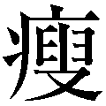
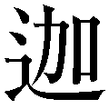

| 30冊の本 | |
| 山川 紘矢 & 山川 亜希子 | |
| 株式会社ＰＨＰ研究所 (2015) | |

30 冊の本
山川紘矢・山川亜希子
まえがき
一九八六年三月、シャーリー・マクレーンの『アウト・オン・ア・リム』が地湧社から出版されました。ほとんど宣伝もせず、翻訳者もまったくの無名であり、出版社もまだできて数年で知名度のない状態での船出でした。有名だったのは著者のシャーリー・マクレーンだけでした。
しかし初版の四〇〇〇部は一カ月と少しで売り切れました。そして発売した翌日から、翻訳をした私たちのもとに、一日に数通ずつ、全国から手紙が届き始めました。どれも、この本を読んだ感動を伝える手紙でした。誰もがシャーリーの本を読んで、人生の方向が変わったと感じていたのです。
『アウト・オン・ア・リム』は、その前に私たちの人生を変えていました。目に見えない世界の存在に私たちの目を開かせ、これからはすべての人が自分たちが魂の存在であることを知り、意識を大きく広げることが大切であり、この時期、宇宙的な規模で様々な動きがあることを知ったのでした。
それ以後、私たちはずっと精神世界、ニューエイジと呼ばれる分野の欧米の本を日本語に翻訳する仕事を続けてきました。かなりの数の本を訳し、その中にはベストセラーになった本も数冊あり、出版以来、二十年間もずっと読まれ続けているロングセラーもあります。そして今年は初めての本を出版してから二十五年経ちました。あっという間の二十五年、四半世紀でした。
でも、その間に多くの人々が目に見えない世界に心を開き、意識を大きく広げるようになりました。今や数多くの精神世界やニューエイジに関する本が出版され、本屋さんには精神世界コーナーができています。二十五年前にはなかったスピリチュアルなセラピーやワークショップが、ごく普通に行われるようになりました。しかもインターネットを開けば、そのような情報をいくらでも見ることができます。
そして、もっと大切なことは、二十五年前には「それって変じゃない？」と言われかねなかった、「自分を愛しましょう」「自分の人生はすべて自分の責任です」「人は輪 廻 転 生 をしている」「私たちは魂である」「直感をもっと大切にしよう」「自分自身を知ることが一番重要である」「すべての答えは自分の中にある」「すべてはつながっている」、そして最近では「思考がすべてを引き寄せている」といったことが、普通のことになりつつあります。時にはテレビの広告で、「自分を好きですか？」という言葉を聞くこともあれば、ニューエイジ的な歌詞を持つ歌が大流行しています。
この二十五年で、私たちの意識は大きく開かれ、変化してきたといえると思います。もちろん、まだまだこのような考えは社会の主流とはいえないかもしれませんが、実はすでに社会を変えるほどの力を得つつあるのです。
時は二十一世紀、愛と平和と透明な知性の時代、水がめ座の時代がやってきています。今までのお金と権力、憎しみと恐れが支配する時代から、愛と平和、やさしさとワンネスに満ちた時代へと変わりつつあります。そして今は、古い社会の枠組みが壊れてゆく時だといわれています。経済も社会も変化が必要になっています。新しいものを作るためには、古いものを壊す必要があるのです。今、世界中で起こっていることはまさにそれであり、実はその下にはすでに新しい枠組みが少しずつ、作られつつあるのかもしれません。
そこで私たちはこれまでの仕事を少し振り返ってみることにしました。それがこの『30 冊の本』です。
まず私たちが訳した本の中から、精神世界を知り、意識を変えるために役に立つ本を選んでみました。それとともに、自分たち以外の翻訳者が訳し、私たち自身が強い影響を受けた本も選ぶことにしました。自分たちが好きな本を選んだのですが、結果的にはほとんどの本が多くの方に読まれていて、人気のある、重要な本になっています。
選択基準は以下の通りです。
１．この二十五年間に出版された精神世界の翻訳本
２．人々の意識を変えるために大きな力を持つ本
３．私たちが訳した本の中から、最初に選択する
４．残りは私たちが大好きで自分たちの成長に役立った本を選ぶ
「ここにある本はほとんど読んだ」という方も多いと思います。また、「ここに載っている本よりも、他の本のほうがずっと大切だ、素晴らしい」というご意見はいっぱいあると思います。みなさんのベスト30 はそれぞれに違うことでしょう。それがまた、とても素敵なところです。
もちろん、二十五年より前に出た本の中にも素晴らしい本が山とありますが、それは今回は原則として触れないことにしました。翻訳本に限ったのは、これまではこうした翻訳本が中心になってニューエイジの思想を伝え、人々の意識を大きく開いてきたと思うからです。最近は日本語の本にも素晴らしい本がどんどん出てきていて、とても楽しみです。
それぞれの本については解説の部分もありますが、できる限り私たちのその本に関する体験も書くようにしました。そのような部分も楽しんでいただけるととてもうれしいです。そして、まだ読んでいない本があれば、ぜひ、読んでみてください。あるいは、読んだことのある本でも、もう一度、読み返してみよう、と思われるかもしれません。何回も読み返すことによって、その都度、新しい発見ができる本ばかりだからです。何はともあれ、どうぞこの本をお楽しみください。
山川紘矢・山川亜希子
30 冊の本 目次
装丁──川上成夫
装画──大森せい子
制作協力──株式会社ＰＨＰエディターズ・グループ
アウト・オン・ア・リム
シャーリー・マクレーン／地湧社、角川文庫
初版：一九八六年三月
一九八三年、アメリカで一冊の画期的な本が発売されました。当時、ハリウッドで活躍していた女優、シャーリー・マクレーンが書いた『アウト・オン・ア・リム』です。女優として数々の映画に主演し、アカデミー賞主演女優賞候補に何度もノミネートされ、世界中を旅し、政治活動や社会活動にも積極的にかかわりを持ち続けていたシャーリーは、女優としてのキャリアの絶頂期にありました。すでに自分自身の生い立ちや世界中を旅した体験を記した本も二冊出版していました。
しかし、彼女の三冊目のこの本は、それまでの彼女のキャリアからは想像もつかない体験を記したものでした。ヨーロッパの政治家との恋愛をきっかけにして、彼女が未知の世界、目に見えない世界へと導かれてゆく体験をあからさまに描き出した本だったのです。なぜ、私はこの人と出会い、一目会った時から、訳もなくお互いに惹 かれあい、恋愛関係になったのだろうかと、彼女は不思議に思い始めます。そしてそのなぜを追求するうちに出会ったのが、「私は何者なのか」「人はどこから来て、どこへ戻ってゆくのだろうか」「見えない世界は存在するのだろうか」「私たちは見えない世界からの導きを得ているのだろうか」「輪廻転生は本当なのだろうか」といった根源的な問題でした。
彼女はどんどん不思議な出会いを重ねて、ついにはペルーの山奥にある、とある鉱泉に導かれます。そこで体外離脱を体験し、宇宙からやってきた女性の話を聞き、そしてついに自分の運命を受け入れるに至 ります。
こうした体験を生き生きとつづったこの本は、アメリカであっという間に三〇〇万部ものベストセラーになりました。有名な女優が書いた本です。シャーリーはテレビや新聞などで大きく取り上げられ、多くの人がこの本を手にしました。シャーリーが物語る魂の旅は、多くの人々を魅了しました。そうか、私たちは魂の存在だったのか、神の一部だったのか、人はずっと輪廻転生を繰り返しているのね、そして、私たちは目に見えない精霊からいろいろな学びを得ることができるのだ、などなど、この本にはまだ私たちが知らなかった目に見えない世界の事柄がいっぱい詰まっていたのです。
当時（今でもまだかなりそのように見られていますが）、こうした見えない世界の事柄、いわゆる精神世界も、スピリチュアルな事柄も異端とみなされていました。科学的な思考だけがまともであり、真実である、科学的に証明されない事柄は胡 散 臭い幻想にすぎず、まじめに取り上げる価値はないという価値観が、いわゆる文明社会にはしっかりと根付いていたからです。こうした偏見が満ち満ちていた時に、この本を多くの人々の前に差し出したシャーリーの勇気は、素晴らしかったと思います。自分のキャリアを失う危険さえあったのです。実際、多くのバッシングも受けました。
実は一九六〇年代から、すでにスピリチュアルなものの見方を主張する人々は世界各地にどんどん現れ始めていましたが、まだまだ少数派であり、普通の人々の意識には入ってきていませんでした。インドのアシュラム（修行場）や日本の禅によって修行を積んだ特別な人たちのすること、普通の社会から脱落した特殊な人たちが信奉する哲学だ、と思われていたところもありました。また、人は魂の存在である、宇宙意識と一つになることが大切であるというようなことは、多くの人々の意識の中に入ることがなく、たまたまその存在が知られても、「私には関係ない」「おかしな人たちだ」という感覚でとらえる人たちがほとんどでした。
ところが、『アウト・オン・ア・リム』は、社会的に大成功を収め、女優として活躍し、多くの人々の憧れの的 でもあったシャーリーの本でした。しかも、精神世界に関する本としては、ほとんど初めてマスコミを使って宣伝されたのです。多くの人々の目を引き、本屋さんではベストセラーの棚にいっぱい置かれて、先ほど述べたようにあっという間にアメリカでベストセラーになりました。
もちろん、シャーリーという有名人が書いた本なので、彼女のファンがこの本を読んだ、ということも大きいでしょう。しかし、彼女の霊的な探求の旅を正直に描いたこの本は、何よりも面白い読み物でした。彼女の恋愛や、世界をめぐる旅、自分を探求するプロセス、チャネリング、ＵＦＯ、体外離脱体験、輪廻転生などの新しい未知の世界との出会いなどをわくわくしながら読んでいるうちに、私たちは自然と魂の世界へと導かれ、自分が何者であり、この宇宙がどのようなものであるかに気づいてゆくことができる本だったのです。
つまり、多くの人々の心を目に見えない世界へ、真実の世界へと開かせる本でした。
これまでは特殊な人々の世界だとされていた精神世界を、「これが真実の世界なのよ。目に見える世界は真実の世界のごく一部にすぎない。私たちの意識が広がった時、そこには思ってもみなかった素晴らしい世界が存在しているの。しかもその世界はすべての人に開かれているものであり、これから多くの人々が旅することになっている世界なのよ」といって、この世界が決して少数の特別の人々に開かれているだけの世界ではないことを人々に紹介したのが、シャーリーのこの本だったのです。
その意味で、『アウト・オン・ア・リム』は精神世界を一般社会に紹介し、多くの人々の目をその世界へと向けるために、大きな役割を果たしたのでした。ある人々は、シャーリーを二十世紀最大の思想家の一人、と呼んでいます。私たちは神であり、霊的な存在であること、目に見えない世界と私たちはつながっていること、今までオカルトと呼ばれて多くの人々が敬遠してきた事柄こそ、これから私たちが知らなければならない事柄であることを、自分自身の体験を通して、彼女は私たちに教えてくれたからです。
この本はアメリカだけでなく、ヨーロッパやアジアの国々でも翻訳出版されて、世界中の多くの人々の目を精神世界やニューエイジ、魂の世界へと開かせました。実は私たちもこの本によって目に見えない世界へと導かれ、さらには人生がすっかり変わってしまった一人です。
当時、私たちはアメリカのワシントンＤ Ｃ に住んでいました。ワシントンに赴任する一年ほど前から、私たちの人生に大きな変化が現れ始めていました。あるセミナーに参加して、自分自身を知ること、自分自身を愛することの大切さを教えられたのです。真の学びとは、自分の外側のことを学ぶのではなく、自分自身について、自分の内側にあるものについて学ぶことなのだと知り、自分自身を深く見つめるようになったのです。
シャーリーの本については、本が出版されてから半年後には知っていましたが、手に取る気にもならずに過ごしていました。それが出版後一年たった頃、紘矢の秘書の女性の机の上に置いてあったこの本を、紘矢が借りて読んだのがすべての始まりでした。
この本の中に、何回も繰り返し出てくる言葉があります。「自分自身について知ることが一番大切だ」。まさに、私たちが学びつつあることと同じことが書かれていたのです。私も紘矢に勧められてすぐに読みました。一行目を読み始めた途端、私は本の中に引き込まれてしまいました。シャーリーと一緒に悩み、学び、世界中を旅行しているかのようでした。そして、そこに書いてあることこそ、自分が知りたかったことであり、しかも実はすでに知っていたことだと思ったのです。
自分の目の前にまったく新しい世界が広がり、初めて真実を学び始めたことに、心が震えるような喜びを感じました。
すると紘矢が今度は「この本を日本語に訳して、日本人に読んでもらいたい」と言い始めました。私はびっくりしました。だって、翻訳など、したこともないでしょう？ それに、シャーリーは日本にも住んでいたことのある人気女優ですもの、もうすでに日本語になっているに違いないわ。
でも、紘矢はそんな私の言い分を気にもせずに、出版社に電話して、まだ日本語にはなっていないこと、日本の出版社に版権を買ってもらえば訳すことができることを教えてもらったのでした。それからはまるですでに決まっていたかのように、出版のことなどまったく知らない私たちの前にいろいろ情報を伝えてくれる人たちが現れて、あっという間に日本で出版できるめどが立ちました。そして、その後、紆 余 曲 折 はあったものの、一九八六年三月に日本語訳の『アウト・オン・ア・リム』が地湧社から発売になりました。
発売になった途端、日本各地の読者からおたよりが私たちに届き始めました。どの手紙にも「これこそ私が知りたかったことでした。そして知っていたことでした。私の人生がすっかり変わったように感じています」と書かれていました。そして不思議なことに、私たちが新聞で取り上げられたり、有名な方がコラムにこの本のことを書いてくださったりしたのです。
でも、この本がすぐにベストセラーになったわけではありませんでした。当時の日本ではニューエイジも精神世界も、ほとんど知られていない分野でした。その分野の本はまだとても少なくて、大きな本屋さんに少し置いてある程度だったのです。それに、当時の地湧社はまだできて数年の小さな出版社で、宣伝する力もありませんでした。
でも、読者からの手紙は毎日平均して三通か四通、絶えることなく、私たちに届き続けました。細く深く人々にしみわたってゆく本、そんな感じでした。
一方では、シャーリーは次々に続編を書いていました。日本で『アウト・オン・ア・リム』が出版された時には、アメリカではすでに次の『ダンシング・イン・ザ・ライト』が出版されていました。読者の反応を見て、地湧社ではすぐにこの本の翻訳出版も決めました。実は私たちはまだ、翻訳を仕事にする覚悟はできていませんでした。一度くらいは本を出そうか、という感じだったのです。でも、読者の反応やシャーリーの意気込みを見て、ここで引き下がるわけにはいきません。私たちはすぐに二作目の翻訳に取り掛かりました。
翌年の春に出版された『ダンシング・イン・ザ・ライト』は、シャーリーのさらなる魂の旅を描いています。自分自身の過去生を深く追求することによって、彼女は今 生 の人生の目的や人間関係の意味を悟ってゆきます。この本も出版と同時に、一作目を読んだみなさんが飛びつくように読んでくださいました。さらに次の年もその次の年も、彼女は続編を書いてゆきました。そして私たちもそれを追いかけて毎年、翻訳してゆきました。
本の執筆と同時に、彼女は映画でも大活躍して、『愛と追憶の日々』という映画によって、一九八四年にアカデミー主演女優賞を獲得しています。そして、一九八七年には『アウト・オン・ア・リム』のテレビドラマも創りました。ＡＢＣテレビで放映されたこのドラマは、ニューエイジや精神世界に対するアメリカ人の意識を一夜にして変えるほどのインパクトがあったと、シャーリー自身が書いています。本を読む人よりも、テレビドラマを見る人のほうがずっと多いからです。
アメリカの友人がこのドラマを録画したビデオを送ってくれました。素晴らしい出来栄えのドラマでした。そして、しばらくたつと、ソニーで働く一女性の力によって、このドラマのビデオが日本で発売になりました。そして、シャーリーの一連の著作に火がついたのです。どの雑誌を見ても、『アウト・オン・ア・リム』のビデオについて、大きな広告が載っていました。そしてそこには必ず、原作は地湧社から出ています、とありました。あっという間に、シャーリーの本が三冊、ベストセラーリストに載り続けるという事態が起こったのです。
おそらく、やっと日本も、人々が新しい意識の広がりを受け入れる状況になってきていたのでしょう。その頃になると、私たちは精神世界の本を日本に紹介するのが自分たちの役割であることを、はっきりと自覚するようになっていました。そしてシャーリーの一連の本が、人々の意識を広げるためにとても大切な本であることも、知っていました。結局、シャーリーの本を『ゴーイング・ウイズィン』まで全五冊、毎年訳し続けました。
しばらくニューエイジの旗手として、本を書き、ワークショップを開き、テレビやラジオで大活躍していたシャーリーは、それから間もなく、そのような活動から退 いてゆきました。人々があまりにも彼女にたより過ぎることに、危険を感じたのです。誰もが自分自身ですべての問題を解決し、すべてを学ぶことができるのに、多くのファンはそれを忘れてシャーリーに問題解決を求めるようになってきたからでした。そしてまた、この分野には新しい著者やリーダーがどんどん出現してゆき、大きな広がりを見せ始めてゆきました。精神世界も新しい意識の広がりも、地球と私たちの進化の一局面だからです。シャーリーのこの本は多くの人々にそのことを気づかせ、自分自身の探求へと私たちを導いた本の最初の一冊でした。
一九三四年生まれの彼女はすでに七十七歳ですが、今でも映画界で活躍しています。そして、時々、思い出したかのように本も出しています。最近は『I'm Over All That』というエッセイ集を出しています。二〇一一年の今年、世界は大きく変わりつつあります。どのように世界が変化してゆくのか、彼女なりの見方もはっきりと書かれている本です。
そして、今このような変化の時、もう一度シャーリーの本、特に『アウト・オン・ア・リム』をもっともっと、多くの人々に読んでいただきたいと思います。私たちは何者であるか、私たちは地球と人類の歴史のどの段階にいるのか、真実の世界とは何かについて、百科事典のように様々な事柄がやさしく書かれているからです。そして何よりも、読み物としてとてもよくできているからです。
地湧社から出版された五冊の本は、今は地湧社のオリジナル版と、角川文庫版が出ています。まだ、読んでいない方はぜひ、読んでください。そして、以前読んだ方も、今の時代、もう一度、おさらいの意味で読み返してみてください。
ゴーイング・ウイズィン
シャーリー・マクレーン／地湧社、角川文庫
初版：一九九〇年二月
シャーリー・マクレーンといえば、『アウト・オン・ア・リム』がとても有名ですが、彼女は、シリーズのようにして自分の霊的な探求の旅を五冊の本に書きあげました。日本で最初に訳された本は『アウト・オン・ア・リム』（一九八三年）です。そのあと、『ダンシング・イン・ザ・ライト』（一九八五年）、『オール・イン・ザ・プレイング』（一九八七年）、『風を追いかけて』（一九八九年）。そして、今回取り上げる『ゴーイング・ウイズィン』（一九八九年）です。この最後の本の副題は「チャクラと瞑想」です。この本が日本で出版された一九九〇年には、ソニーから『アウト・オン・ア・リム』のビデオが発売されていたこともあり、シャーリー・マクレーンの一連の本は日本で次々とベストセラーになりました。一時はベストセラーリストにシャーリーの本が三冊も入っていたこともありました。
シャーリー・マクレーンはニューエイジの思想を世界中に広めた一人として、とても重要な位置を占めています。有名なハリウッド女優であり、世界中でよく知られた存在だったために、彼女の本が世界中で読まれたということもあります。しかし、同時に彼女が映画女優であったがために、マスコミやインテリ層は、「変わった女優が書いたオカルトの本」とみなして、彼女の哲学の素晴らしさや本当の役割を見逃しているような気がします。特に、ニューエイジの意味を明らかにしたこと、輪廻転生を真正面から取り上げたことは、とても勇気のある行為だったといえるでしょう。
『ゴーイング・ウイズィン』はシャーリーの自分自身を探求する旅の総まとめの本であるといえます。もちろん、これは終わりのない旅であり、彼女は七十七歳の現在もまだ、自分自身を探求し続け、スピリチュアルな世界をさらに深めています。しかし、この本を書いた後、しばらくはスピリチュアルに関する本を書くことからは遠ざかっていました。多分、この本でそのような活動に一区切りつけたのでしょう。
この本で彼女はスピリチュアルな探求とは何か、ニューエイジとは何か、とても明確に語っています。スピリチュアルな探求とは、世界を変えるためには、まず、自分自身が何者であるかを知り、自分自身に対する見方を変えることから始めなければならない、ということを学ぶことです。実はそのために私たちは毎日、地球上に存在しているのです。そして、すべてのことが今ここから、私たちが自分の内で行う選択から始まるのです。「汝 自身を知れ」、まさに自分の内にあるこの真理に触れなくては、この世界のこと、人間のこと、人々の苦しみや対立、そして人生そのものを本当に理解することはできません。「他の人々を理解し、愛するためには、まず、自分自身を理解し、愛することから始めなくてはならない」。このことに気づくことこそが、この探求の根源なのです。
そしてニューエイジとは、新しいことではなく、古代から伝えられている霊的な見方を集大成して、それを西洋合理主義に凝り固まった現代世界に再生させることです。その中心にある最も大切なことは、「すべては自分の責任である」ということだと、彼女は言いきっています。どんなに悲惨なことが自分や周りの世界に起ころうと、すべては自分の責任なのです。「人生に起こるすべてのことは、互いに関係しているのだから、人生に起こること全部に対して、私たちは責任を持っている」のです。そして、最初に果たさなければならない責任は、自分の個人的なことに対する責任、本当の意味で自分を大切にすることなのです。
そしてこれは決してやさしいことではなく、そのためには、自分を振り返り、真正面から見つめることが要求されます。それは、自分を愛することができれば、他の人も世界全体も愛することができる、ということを知らなかった自分を許してあげるということなのだ、と彼女は言っています。
今やっと、日本でも「人生は自分の責任である」ということが、少しずつ理解され始めています。自分が不幸なのは、政府のせいでも、国のせいでも、親のせいでも、他の誰かのせいでもなく、自分自身がその人生を選んでいるという自分の責任であることを理解して初めて、私たちは新しい次元へと進むことができるのです。私は「ニューエイジとは自分の責任に関すること」というシャーリーの言葉は、この本で最も大切なメッセージなのではないかと思います。
また、『ゴーイング・ウイズィン』は『アウト・オン・ア・リム』など、彼女が書いた本の実践ガイドとして、重要な役割を持っています。現在ではチャクラや瞑想という言葉が一般的になり、かなり多くの人々に知られていますが、本書が出版された一九八九年当時は、まだまだ耳慣れない言葉でした。私がチャクラという言葉を最初に耳にしたのは一九八五年でしたが、当時はスピリチュアルという言葉の意味さえ、あまりよくわかっていませんでした。チャクラって何？ という状態だったのです。
この本はチャクラについて詳しく説明し、瞑想のやり方を教えています。この本に書かれている瞑想を行っていると、自然とものの見方や態度が変わって、人生がポジティブで平和なものとなってゆきます。
本書はシャーリー・マクレーンが当時アメリカ各地で行っていた自己変革のためのセミナーから生まれました。アメリカ各地で行われた彼女のセミナーは大人気でしたが、あまりにも多くの人々が彼女に頼り始めたことに危険を感じて、シャーリーは一年ちょっとでこのセミナーを止めてしまったとのことです。
このような実践的な学びの方法のほか、本の後半にはシャーリーが旅の途上で出会った超能力者たちとのエピソードが、とても興味深く書かれています。シャーリーは非常に好奇心が強く、あらゆることを試そうという勇敢な冒険家でもあります。彼女は世界中を冒険旅行していますが、オカルトと呼ばれる世界にも勇気をふるって分け入っていき、チャネラー、ヒーラー、超能力者、透視家など、多くの霊能者に会って、様々なことを学びました。そして、こうした経験の結果、世界には科学的、論理的には説明できないことがあり、この次元の世界以外に、もっと高い次元の世界が存在していると確信したのです。
この本では、フィリピン人の心霊手術師、アレックス・オルビートがその一人として紹介されています。彼は患者の体に手を差し込み、体内から血の塊 などを取り出して、患者の病気を治すといわれています。シャーリーは彼の「治療」を何回も見学し、そこで目にした驚きの場面を生き生きと臨場感を持って描写しています。
実はこの本の出版後、私たちはオルビートが日本にやってくるという情報を手に入れました。その頃、母が胆石を患 っていて、大変な状況でした。もうこれはオルビートに心霊手術をしてもらうより仕方がないと考えて、八十代の母を東京に呼んでオルビートに治療してもらいました。シャーリーが本に書いていたことは本当でした。彼の指がブスリと母の体内に入り込み、母の体から得体の知れないものを取り出したのでした。母の体内から異物を取り出した後、オルビートが母のお腹を手のひらでスーッとなでると、穴が消えてお腹は元通りになりました。本当に魔法のようでした。その後、病院で調べてもらうと、胆石はまだ残っていましたが、位置がずれていて痛みがなくなったのでした。それから母はとても健康になり、晩年の生活を十分に楽しんで、なんと百歳まで元気に生きたのでした。
なまけ者のさとり方
タデウス・ゴラス／地湧社、ＰＨＰ文庫
初版：一九八八年四月
『なまけ者のさとり方』は素晴らしい本です。でも、書いてあることをハートでつかめなかったら、とても難しくて、この本一体何が書いてあるの？ と思う方もいるかもしれません。でもそれでもいいですよ、と言っている温かい本です。悟りとは、一人ひとり、自分が決めてきた時にやってくるもののようです。その時が来ていないと、悟りに関する本をいくら読んでも、さっぱりわからないのかもしれません。
もし、読んでみたけれど、よくわからなかったら、枕の下に敷いて寝て、一カ月、いや、一年後に読んでみてください。すると、目からうろこ、という体験をするかもしれません。おそらく、この本はこれからもずっと読み継 がれてゆくことでしょう。愛についての本だからです。
タデウス・ゴラスの『なまけ者のさとり方』の英語版はわずか八〇ページほどのとても薄い本です。一九八〇年代にアメリカにいた時に、手に入れました。薄くて簡単に読めそうだし、何といっても題名が素敵だったので、本屋さんで見つけて思わず買ってしまいました。その直後、私たちは『アウト・オン・ア・リム』を日本語に翻訳し、これからは英語のよい本を日本語に訳すことによって、日本の人々の意識を広げるお手伝いをしようと決心しました。そして、この小さな本を日本で出版したいと思って、アメリカの出版社に手紙を書きました。それがタデウス・ゴラスの元に届き、著者のタッドと手紙のやり取りが始まりました。普通、本の版権は出版社が持っていることが多いのですが、この本の版権は著者自身が持っていたからです。彼はすぐに、大喜びで翻訳を許可してくれました。
タッドは一九六〇年代のヒッピー全盛時代にその一人でした。社会の規範を打ち破った自由な暮らしをし、ありとあらゆる方法を使って意識の広がりを体験して、悟りに至ったそうです。自分の悟りの体験を書いたのがこの薄い本で、一九七一年に自費出版の形で出されています。彼は最初、この本を自分で街角に立って売っていたそうです。そのうちに大手の出版社の目に留まり、そこから出版されて多くの人々に愛される本になりました。
この本が伝えている一番大切な「悟りの方法」は愛です。悟りへの道はたくさんあるけれど、「愛は一番安全でやさしい悟りへの道なのです」とタッドは言っています。「理由などいらない。ただ愛しなさい」と言うのです。それもまず、そのままの、ありのままの自分を愛しなさい、どんな自分でも愛しなさい、自分を愛せない自分を愛しなさい、と語っています。「愛することは安全なことです。この宇宙で唯一、絶対安全な行動なのです。できる限り愛しさえすれば、あなたに準備ができた時、すべてがあなたの前に明らかになります。悟ると、人は悟っても悟らなくてもそのままでいいのだ、とわかります。悟りから最も遠いところにいる人とは、人間とは悟りが必要なものだと固く信じている人です」。これが著者の言いたいことの中心なのでしょう。
もう一つ、とても大切なことが、本文の最初の一節に書かれています。「『私達はみな平等です。そして宇宙とは、私達のお互い同士の関係です。宇宙はただ一種類の実体からできていて、その一つひとつが生命を持ち、一つひとつが自分の存在の仕方を自分で決めています』
以上のことさえわかれば、誰でもこの本を理解できるのはもちろん、自分で本を書くこともできるでしょう」。
特に、「私達はみな平等です」「宇宙はただ一種類の実体からできている」ということ、つまり私たちはみな、同じものからできている、平等な存在なのだ、ということを本当にわかりさえすれば、私たちはとても平和に、安らかになるのではないでしょうか。
そしてよく読んでみれば、死後の世界のこと、神のこと、精霊のこと、精神世界のことがすべて書かれている本です。精神世界の入門書の一つとして、多くの人々に愛されてきたのも当然といえるでしょう。
一九八八年に日本語版が地湧社から単行本として出版されて以来、この本をバイブルのように大切にして読んでくださっている読者がたくさんいることは、訳者としてとても嬉しく思っています。その後、二〇〇四年にＰＨＰ研究所からＰＨＰ文庫として出版され、地湧社版とともに今もみなさんに愛されています。翻訳してからすでに二十年以上たった今、翻訳した当時よりも、私たちもずっと深く内容を理解できるようになっています。そして、「ありがとう、タッド、兄弟姉妹。私の意識をここまで導いてくれたことに感謝します」と心の中で唱えています。
翻訳をしている時、とても奇妙なことがありました。どのように翻訳すればよいか迷っていると、どこからか、声が聞こえるのです。「そのまま訳しなさい。解説してはいけないよ。今はまだ、その意味が完全にわからなくても、そのまま英語を日本語にするのだよ」「エネルギーをそのまま日本語にすればよいのだよ」などなど。私はその言葉に導かれて、翻訳を進めました。
翻訳を終えた時、最初にタデウス・ゴラスから来た手紙が見つかりました。すると、そこには「翻訳に際して注意すること」として、まさに私が聞いた声と同じことが書かれていたのでした。
この時、私はタッドに翻訳の意味を教えられた気がします。英語から日本語に翻訳するということは、その本に書かれていること、著者が伝えたいこと、さらには著者が持っている高いエネルギーを、そのまま日本語に変えて伝える、ということなのです。決して巧 みな日本語に訳すことが大切なわけではなく、原本のエネルギーと著者の意識をそのまま日本語に移すことが、翻訳のそもそもの意味だとわかったのでした。そうすれば、日本語そのものも自然と整ってくるような気がします。翻訳者は導管に徹する、ということでしょうか。神のメッセージを伝えるチャネラーに似ているような気がします。
著者のタデウス・ゴラスとは最初は手紙で、次にファックスで、そして最後はＥメールで、何度も通信しあっていました。いつも温かく、愛のこもったメッセージを送ってくださいました。お目にかかるチャンスはありませんでしたが、彼と私たちはしっかり魂がつながっていた、いや今でもつながっているのです。
彼は日本の時代劇のファンで日本のテレビ番組を見るのが大好きだ、とよく言っていました。そして自分の本が私たちによって翻訳され、日本で出版されたことをとても喜んでくれました。日本語版が出版された一九八八年当時、彼はすでに半分隠居した状態にあって、老人の多いフロリダ州のサラソタという町に住んでいました。いつかタッドに会いたいと思っていたのですが、彼は一九九七年に亡くなってしまいました。生きているうちに訪ねて、いろいろお話をしたかったな、と残念に思います。
入門書としてもよし、いつも私たちを応援してくれる身近な本としてもよし、『なまけ者のさとり方』をぜひ多くの方に成長の友として、お勧めしたいと思います。
アルケミスト
パウロ・コエーリョ／地湧社、角川文庫、角川書店（愛蔵版）
初版：一九九四年十二月
『アルケミスト』はブラジルの作家、パウロ・コエーリョによって一九八八年に書かれた寓 話 的な小説です。世界的なベストセラーとなり、六七カ国語に翻訳され、一五〇カ国の国民によって読まれ、発行総部数はウィキペディアによれば、なんと五〇〇〇万部となっています。生きている作家の本が六七カ国語に翻訳されたのは世界記録として、ギネスブックにも載ったということです。これからもきっと多くの人々に、長く読み継がれてゆく本になるでしょう。
私たちがこの本に出会って、翻訳をすることができたのはとても幸運だったと思います。日本では一九九四年に地湧社から出版されました。現在では地湧社版のほかに、愛蔵版として平尾香さんの挿絵の入ったものが角川書店から発売されています。また、角川文庫にもなっており、毎年、新しい読者に読まれていることもうれしいことです。特に若い人には読んでほしいと思います。そして、どんどん世界中に冒険に出かけていただきたいのです。
『アルケミスト』はスペインの羊飼いの少年、サンチャゴが何度も繰り返し見る夢に従って、エジプトのピラミッドまで、宝物を探しに行くという寓話風の物語です。少年は旅に出て、いろいろな人に出会います。セイラムの王様だという老人、ジプシーの占い師、泥棒、クリスタル店の主人、錬金術を学んでいるイギリス人、らくだ使い、錬金術師などです。少年は旅でいろいろな人と話し、そこから学び、驚くような経験をして、次第に成長してゆきます。セイラムの王様だという老人は少年に次のように言います。「お前が誰であろうと、何をしていようと、お前が何かを本当にやりたいと思うときは、その望みは宇宙の魂から生まれたからなのだ。それが地球におけるお前の使命なのだ。お前が何かを本当に望むときには宇宙全体が協力してそれを実現するために助けてくれるのだ」。この言葉が『アルケミスト』のテーマになっています。『アルケミスト』には宝物のような言葉がたくさん出てきます。自分の好きな言葉がこの本の中にきっと見つかることでしょう。
パウロ・コエーリョは一九四七年、ブラジルのリオデジャネイロに生まれました。大学の法学部に入学したものの、七〇年に中途退学して、世界各地へ放浪の旅に出ました。メキシコ、ペルー、ボリビア、チリなどの中南米諸国を旅したのち、ヨーロッパと北アフリカを放浪しました。この二年間の世界放浪を経てブラジルに戻ったパウロは、流行歌の作詞家となり、彼の詞を歌ったブラジルの人気歌手ラウル・セイサスの歌は大ヒットしました。
一九七四年、反政府運動の嫌疑で投獄されたこともありますが、出獄してからはレコードの制作にかかわりました。五年後、彼は突然すべてを投げ捨て、再び世界をめぐる旅に出ました。この旅で、彼は様々な出会いと出来事を体験し、作家として歩む基礎を築きました。その後、彼は一九八七年に『星の巡礼』を出版して、作家としての第一歩を踏み出しました。『星の巡礼』は彼がスペインのサンチャゴ・デ・コンポステーラに至る八〇〇キロを歩いた体験を書いたものです。しかし、パウロが作家として高い評価を得たのは、本書『アルケミスト』を一九八八年に出版してからのことです。羊飼いの少年サンチャゴが夢に従って旅に出て、ついには錬金術の秘密を手に入れるという寓話風の物語はサン＝テグジュペリの『星の王子さま』や、リチャード・バックの『かもめのジョナサン』などと並び称されるほどの賞賛を浴びました。その年の内にブラジル国内で二〇万部を超える大ベストセラーとなり、パウロ・コエーリョの名を一躍有名にしました。その後、『ブリーダ』『バルキリーズ』『ピエドラ川のほとりで私は泣いた』『第五の山』『ベロニカは死ぬことにした』と続けざまに作品を発表し、そのすべてが、ブラジル国内のみならず、ヨーロッパ諸国やアメリカにおいても、多くの人々に熱狂的に迎えられました。
パウロ・コエーリョは世界中で最も多くの人々に読まれている五〇人の作家の一人です。彼の作品の中で最も広く読まれているのが、この『アルケミスト』です。ブラジルではもちろんのこと、フランスやイタリアなどでもベストセラーリストの一位に何回も顔を出し、各国で文学賞を獲得しています。しかも、この本は十年に一度現れるか否かの名著であるといわれており、これからもずっと、人々に読み継がれ、「夢を忘れないで追求する」ということを多くの人に思い出させることでしょう。
さらに、『アルケミスト』を読むうちに、「人生とは何か」「私たちのこの世の使命は何か」「自分の夢は何なのか」「どうしたら幸せに生きられるのか」というような、誰の心にも宿っている素朴で根本的な疑問をサンチャゴ少年と一緒に考えてゆけます。こんなところに、世界的な人気の秘密があるのではないでしょうか。サンチャゴ少年の純粋で素直な健 気 さ、心の温かさ、愛と思いやりの深さ、友情、信頼、不屈の精神が読者の心を温かくし、力づけてくれるのです。
『アルケミスト』が日本で出版されてから、パウロ・コエーリョは何回か来日し、翻訳を担当した私たちを始め、多くの人々に大きな影響を与えています。最初の来日は、日本で『アルケミスト』が翻訳出版された一九九四年に、東京で地湧社主催の読者の会が開かれた時でした。まだ、日本ではほとんど誰もパウロを知らない頃のことでしたが、八〇〇人もの方が来てくださいました。パウロの講演の後、会場が暖かい熱気のようなものでいっぱいになり、会の終了後も参加者がなかなか帰らずにその余 韻 に浸 るという、とても不思議な雰囲気だったことが印象に残っています。
その後も、しばらくパウロは毎年のように来日して、日本を楽しんでいました。阪神・淡路大震災の後、日本の劇団によって『アルケミスト』のミュージカルが神戸で上演されましたが、その時も彼は来日して、私たちは一緒にそのミュージカルを見に行きました。大震災から復興しつつあった神戸の街を見て、彼は日本人の不屈の精神に深く感動した様子でした。今回の東日本大震災については、彼はどのように思っているのでしょうか。
パウロとの思い出はたくさんありますが、一番私たちに影響を与えたのは、南カリフォルニアにあるモハベ砂漠にあるボレゴスプリングスに行き、彼が天使に出会った場所を見つけなさい、という「謎解き」のような指令を受けて旅に出かけたことです。彼の初期の作品、『バルキリーズ』の中で、主人公が旅したルートをそのままたどる旅でもありました。
私たちは何も詳しいことはわからないまま、ボレゴスプリングスに旅をし、いろいろな前兆をたどってついに天使の出た場所を発見するという、まるで『アルケミスト』の少年の旅のような体験もしました。
そして、今年、私たちはこの旅の元となった『バルキリーズ』を翻訳することになりました。日本での出版は二〇一二年になります。『バルキリーズ』は作者自身の体験を元にした、とても興味深い物語です。
パウロは二年に一作のペースで作品を発表しています。日本でも、その多くが翻訳出版されています。これからも楽しみな作家の一人です。
私たちの翻訳では、『アルケミスト』『星の巡礼』『ピエドラ川のほとりで私は泣いた』が地湧社と角川文庫から、そして『第五の山』が角川文庫から出ています。
星の巡礼
パウロ・コエーリョ／地湧社、角川文庫
初版：一九九五年十月
この本はブラジル人の世界的な作家、パウロ・コエーリョの処女作です。原題は『魔法使い（マガス）の日記』で、一九八七年に書かれています。パウロの二作目の本が『アルケミスト』でこちらのほうが世界的なベストセラーになりました。『アルケミスト』は、スペインの羊飼いの少年サンチャゴが本当の自分の力を発見するまでの寓話的な物語です。
一方、この『星の巡礼』は作者自身の巡礼の体験を書いた自伝的な要素の強い作品です。少し難しいところもありますが、とても神秘的で魂に響く不思議な魅力があります。この『星の巡礼』を出版してからほどなく、私の母がこの本を読んで、「とてもよい本を訳したね。素晴らしかったよ」と言ったので、驚いたことがとても印象に残っています。当時母は九十歳近かったので、どうしてこの本が理解できたのだろうか、と今でも不思議です。
翻訳者として作家と特別に交流することは少ないのですが、パウロ・コエーリョとは幸いにして、彼が何回か来日した際に、皇居へ雅楽を一緒に聴きに行ったり、富士山の五合目まで一緒に登ったり、神戸に『アルケミスト』のミュージカルを見に行ったりして、とても親しくなりました。彼は確かに魔法使いのようなところがあり、霊的にもいろいろな不思議な体験をしているようでした。一緒に旅行をした時には、彼は特定の時間に祈りをささげ、普通の人が見逃すような前兆をきちんと読み取り、いつもゆったりとしているのが印象的でした。一緒に温泉に行った時には、首にいろいろ由緒ありげな首飾りをたくさん身につけ、頭髪の一部を長く伸ばしているなど、本当に魔法使いみたいだ、と思ったものです。当時は今ほど世界的に有名な作家ではなかったので気軽に付き合っていました。また、パウロとの縁でアメリカ人やスペイン人の親しい友人を得て、私たちの人生も豊かなものになっています。
『星の巡礼』はキリスト教の伝統的秘密結社である「聖なるＲＡＭ教団」に属する主人公が、マスターの資格を得るためにスペイン巡礼の道を旅する物語です。本のページをめくると、すぐにＲＡＭ教団のマスター称号授与式の場面が始まります。主人公はそれまで修行を積んできて、もう少しでマスターの称号を与えられるところまで来ていたのですが、マスターになる儀式の最後の瞬間に失敗して、マスターのしるしである剣をもらうことができませんでした。そして、マスターになるための再試験として、スペインのサンチャゴ・デ・コンポステーラまでの巡礼路を歩いて新しい剣を発見すること、という課題が与えられました。この旅には秘密結社から指名された先輩が指導者としてついてくれました。主人公にはペトラスという案内人がつきました。ぺトラスに導かれて、彼は巡礼の道を行きます。ただ歩くだけでなく、ぺトラスは次々と彼に試練と難しい課題を与えます。その試練をクリアしながら、主人公は巡礼路を進み、ついに剣を発見します。これはまた、自分自身を見つめ、自分の中の力を見つける旅であり、死と直面し、エゴや恐れを手放すための旅でもありました。そして、ドキドキしてこの本を読みながら、読者は彼と一緒に巡礼の旅を続けるのです。
この本は世界中で読まれています。そしてこの本を読んで、仕事を辞めて「星の巡礼」に旅立ってしまった若い読者も年配の読者もたくさんいます。ほとんどの巡礼者が『星の巡礼』を手にして歩いていた、と巡礼路を歩いた友人から聞いたことがあります。いわば、サンチャゴ巡礼のバイブルのような役割を果たしているようです。
サンチャゴ・デ・コンポステーラへの巡礼の旅は、十二、三世紀のヨーロッパのキリスト教徒の間で大変に流行しました。その後一時廃 れていたのですが、二十世紀後半になって、また少しずつ古い道が整備され、人々が歩き始めました。今、進みつつある私たちの意識変容と関係があるのかもしれません。そして一九九九年になって、急にこの道を多くの人々が歩くようになりました。この年に巡礼すると、多くのご利益があるとされていたために、全世界から大勢の人々がサンチャゴ・デ・コンポステーラを目指して歩いたからです。今も毎年、多くの人々が歩いています。日本からの巡礼者も増えているようです。それにつれて道や宿泊設備も整備され、様々な情報も手に入りやすくなっています。
パウロ・コエーリョは一九四七年、ブラジルのリオデジャネイロの裕福な中流家庭に生まれました。子供の頃から作家になりたいと希望したにもかかわらず、両親はそれを許しませんでした。両親はパウロをリオデジャネイロで最も厳格なイエズス会の学校に入学させました。その後、両親の希望する弁護士になるため大学の法学部に入学しますが、演劇に夢中になり、学業を途中放棄します。両親は彼を精神病院へと送り込みました。精神病院を抜け出したあとは、役者として稼いだお金で、ネパール、モロッコ、メキシコなどを二年間放浪し、ヒッピー生活を体験します。その後、帰国して、ロックミュージックの作詞家として華々しい成功を収めましたが、一九七四年、彼の音楽活動が反政府運動にかかわっているという嫌疑をかけられ、ブラジル軍事政権時代の軍警察により逮捕され、生死をさまようような拷問を受けました。両親の画策により奇跡的にこの残酷な拷問から逃れることができましたが、彼の心に深い傷を残したようです。その後、パウロは普通の生活に戻ることを決心し、様々なレコード会社と仕事を始めました。三回目の結婚に失敗したあと、現在の妻、クリスチーナに出会いました。彼女と結婚してから、有り金をはたいて二人で半年間世界中をめぐり歩き、パウロは最後にドイツの強制収容所跡で強烈な霊的な体験をします。そしてその後すぐ、一九八一年に本書にも登場するＲＡＭ教団と出会い、その一員として学び始めたのでした。ＲＡＭ教団はスペインのキリスト教神秘主義の秘密結社で、一四九二年に八人の騎士によって創設され、現在まで続いています。
パウロはサンチャゴ・デ・コンポステーラへの道を一九八六年の夏に歩いています。この本に出会う前に、私たちも一九九〇年の六月、この道を旅しました。一日に一便だけの町と町をつなぐ路線バスを使った旅でした。サン・ジャン・ピエ・ド・ポー、ロンセスバイエス、パンプローナ、プエンテ・デ・ラ・レイナなど、この本に出てくる町や都市を通ってゆく旅でした。行く先々で、立派な教会、お祭り、スペインの子供たちに出会い、同じ道をゆくヨーロッパ各地からやってきた巡礼者と言葉を交わしたものです。その時には、『星の巡礼』を翻訳することになるとは、思ってもいませんでした。すべては天の計 らいなのだと感じています。この本を翻訳している間、作者の体験と自分たちの体験が重なり合って一つになるという不思議で楽しい体験をしました。
また、二〇〇一年には、シャーリー・マクレーンの『カミーノ』を私たちは訳しました。この本はシャーリーが六十歳を超えてから八〇〇キロにわたる巡礼路を一人で歩いた時の記録です。彼女に巡礼路を歩くように勧めたのは、本の中ではブラジル人の女性だとありますが、実はパウロであったようです。この本は『星の巡礼』と同じ道を歩いてはいても、まったく違う陽気な物語になっています。道は同じでも、行く人によって、その体験はみな違うのです。しかし、そのどれもが自分自身を知る旅なのでしょう。
この本を読んで、「星の巡礼」をしたいと思ったら、小さな荷物を背に、さっそくピレネーのフランス側から歩き始めましょう。きっと、あなたの人生が変わることでしょう。
ホワイトホール・イン・タイム
ピーター・ラッセル／地湧社
初版：一九九三年四月
今、私たちは大きな変化の時を迎えています。いよいよ来年は二〇一二年、この十年ほど、精神世界に興味を持つ人々の間で議論されていた「アセンション」の年です。マヤ暦ではこの年にカレンダーが終わっています。
私たちが最初に二〇一二年が地球の一大変化の年になる、といわれているのを知ったのは、この『ホワイトホール・イン・タイム』を一九九二年に訳した時でした。この本は物理学や生物学などの科学的見地を踏まえて、現在進行中の私たち人間の霊的な発展を解説した本です。特に、地球の歴史は加速化の歴史であって、今その加速が極限に達しつつあり、変化のサイクルが年単位から月単位へ、さらに週単位から日単位へと圧縮されて、二〇一二年十二月にはその加速化が限界に達する、と書いてありました。著者のピーター・ラッセルは、テレンス・マッケンナが易経の研究から引き出した「タイム・ウェーブ・ゼロ」という理論を引用して、加速化が限界に達するのは二〇一二年十二月になると書いていました。もちろん、マヤ暦との符合についても触れています。私たちがこの本を訳した一九九二年には、まだ二〇一二年のことはそれほどいわれていませんでした。それにまだまだ二十年も先の話だ、という感覚で受け止めていたものです。そして、いよいよ今年、二〇一一年になりました。私たちはずっと、「アセンションといっても何が起こるわけでもない。人々の意識が今よりももっと広がるだけだろう」と思っていました。ところが、三月十一日に東日本大震災と福島第一原発事故が起こりました。これはアセンションと関係があるのでしょうか。今、このような時こそ、もう一度、『ホワイトホール・イン・タイム』を読むといいのではないかと思います。
この本は、ピーター・ラッセルが五年の歳月をかけて書きあげ、一九九二年にイギリスで出版されています。彼は長年瞑想を続けている、スピリチュアルな世界の先駆者の一人ですが、一方ではケンブリッジ大学で物理学、数学、実験心理学などを学んだ科学者でもあります。その両方の知識と体験をフルに生かして書きあげたのがこの本です。
この本の中で、彼は私たち人間の現状についても深い考察を行っています。私たちは常に幸せを求めている。それは当然のことであるが、今までは幸せになる方法を間違えていた。つまり、お金、名声など自分の外側の条件をよくすることが幸せになるために必要だと思い込んでしまった。その結果、自然破壊や人々の間の争いなどが起こり、今のような危機的状況を生み出した。しかし、幸せは自分の内の問題であり、心の平和を得れば手に入るものなのだ。そして、今、そこへの回帰が起こり始めている。私たちが本当の自分に戻る運動、意識のルネッサンスこそが、今起こっている動きなのだ、と言うのです。
彼はこの本の中で、このようなことをわかりやすく、順序よく説明しています。つまり、今私たちが地球の歴史上、そして、人類の歴史上、どこにいるのか、そして私たちはどこに行くのか、科学とスピリチュアルな考え方を結びつけて説明しているのが、この本だといえるでしょう。そしてコンピューターが急速に発展しているのは、テレパシーで私たちが瞬時にお互いに交信し始めるための準備なのだ、とも言っています。
私はこの本を読んで、自分の理屈っぽい部分がとても満足するのを感じたことをよく覚えています。相対性理論や新しい物理学の理論など（多分、今ではすでに古くなったものかもしれません。それほど、物理学の発展は急速に進んでいるようです）、ほとんど何も知らなかったことを必死で勉強しながら訳したことも、今ではよい思い出になっています。
さて、そのピーターは、『ホワイトホール・イン・タイム』が日本で出版された時、来日して二日間のワークショップを開いてくれました。私たちも参加して、休憩時間には一緒に散歩をしたり、おしゃべりをしたりしたものです。二日目には東京には珍しい大雪が降って、窓からの景色が美しかったことをよく覚えています。
それ以来、彼と会うことはなかったのですが、二〇一一年の六月、アメリカのエサレン研究所で彼に十八年ぶりに会うことができました。ピーターは若い頃と同じように、相変わらずまじめそのものでしたが、以前にはなかった柔らかさと、どっしりとした雰囲気を身につけて、まさにマスターという感じでした。
彼はエサレン研究所で瞑想のワークショップを開いていたのですが、私たちも金曜日の夜のクラスに参加しました。最初、ピーターが自分の瞑想体験を話してくれました。ケンブリッジ大学の学生だった頃、インドの聖者の心理がどうなっているのか知りたくてインドに行き、ＴＭ瞑想を勉強して瞑想にハマってしまいました。最初はＴＭ瞑想から始めたのですが、その後ヴィパッサナ瞑想を学び、今ではヴィパッサナに基づく彼独自の瞑想法を教えているそうです。
すぐに、全員で短い瞑想をすることになりました。呼吸に意識を向けること、もし、意識が他のところに飛んでいることに気がついたら、また呼吸に意識をそっと戻すこと、何よりもリラックスすること、すると「それ」が起こるから、「それ」を起こさせるのです、というのが瞑想の指示でした。呼吸に意識を向けること云 々 は、すでにいろいろな瞑想の先生から教えてもらっています。私の心に引っかかったのは「それ」を起こさせる、英語で〝Let it happen.〟と彼が言ったことでした。「それ」とは何なのだろう？ 起こさせるって、どういうことなのだろう？ そんな思いを抱きながら、ともかく瞑想を始めました。瞑想を始めるとつい、うとうとしてしまいます。ハッとしてまた呼吸に意識を向けるとすぐにまたうとうと、ということを何回も繰り返していました。
すると突然、「それ」が起こったのです。何回目かに呼吸に意識を向けた時、ピシッと何かがハマった感覚がありました。目の前に、鏡のような湖が浮かび上がり、それと同時に、意識が研 ぎ澄 まされて四方八方、すべてを感じている私がいました。もう眠気もありません。そこには研ぎ澄まされた意識があるだけでした。それと同時に体が動き始めて、一番リラックスできる姿勢になりました。それはまさに、頭の真ん中に糸がついていて天から吊り下げられている感じ、そのものでした。まさに「今」だけにいる感覚、「マインドフル」とはこのことか、と思いました。その状態がしばらく続くと、チーンとチベッタンベルの音がして、瞑想が終わりました。これは私にとって初めての体験でした。「それ」が何であるか、起こさせるとはどんなことか、私なりに体験できたようです。瞑想の達人がいつも体験している状態が、やっと少しだけわかったのかもしれません。十八年ぶりのピーターとの再会は、私への素晴らしいプレゼントとなりました。
さて、ピーターはこれからどのような世界がやってくると言っているのでしょうか。『ホワイトホール・イン・タイム』という題名にも示されているように、私たちは加速化の渦に巻き込まれ、ブラックホールならぬホワイトホールに吸い込まれて、向こう側の光の世界に行くのではないでしょうか。
「それは今までの進化のプロセスの終わりであり、うまく機能しない私たちの態度や物の考え方の終わりなのです。そして、私たちはやっと、自由に本当の自分たちの世界を楽しみ始めるのです。クジラやイルカたちがそうであるように」
前世療法
ブライアン・Ｌ・ワイス／ＰＨＰ研究所、ＰＨＰ文庫
初版：一九九一年一月
一九九〇年頃、アメリカを旅行中だった私たちは本屋さんに立ち寄って、面白そうな本を見つけました。『Many Lives, Many Masters』という精神科のお医者様が書いた本でした。当時は外国に行くと、必ず本屋さんに行き、精神世界の本を探したものです。もっとも、それは今でもやっていることですが、その頃はこの分野の本を訳すためには、自分たちで適当な本を探す必要があったのです。
帰国してすぐ、紘矢が読んで、「この本はすごい。ぜひ訳したい」と言い、私もそれではと言って、少し読み始めました。ちょうどその時、ＰＨＰ研究所の中ヒトミさんが、「山川さんに本を書いてほしい」と、我が家を訪ねてきてくださいました。これはチャンス、とばかりに、私たちは本を書くお話などはそっちのけで、この本の翻訳がしたい、と売り込んだのです。私はほんの一五ページくらいしか読んでいなかったのに、なぜかその本がどのように大切な本であるか、滔 々 と彼女に向かって話していました。自分でもびっくりするくらいだったのをよく覚えています。こうして、無事にＰＨＰ研究所から『前世療法──米国精神科医が体験した輪廻転生の神秘』という題名で出版することができるようになりました。
この本は、著者のブライアン・Ｌ・ワイス博士の実際の体験を記したものです。ある時、キャサリンという美しい女性が彼のもとに治療を受けに来ました。彼女はパニック障害やうつ状態に悩み、人生もうまくいかない状態に陥 っていました。その後、一年半にわたって、ワイス博士は彼女に対して様々な心理療法を試みましたが、症状は一向に改善しませんでした。
そこで、彼はキャサリンの同意を得て、催眠療法を試すことにしました。催眠療法とは、患者をリラックスした状態に導き、意識をある一点に集中させて忘れていた過去を思い出させる方法です。当時、精神医療の分野では、子供時代の出来事を思い出すために使われていました。子供時代の辛 い出来事を思い出すと、うつやパニックの症状が改善することがよくあったのです。キャサリンの場合は、一回目の催眠療法で子供時代の辛い思い出をいくつも思い出したのに、症状はまったく改善しませんでした。
二回目の催眠療法の時、博士は催眠状態に入ったキャサリンにこう指示しました。「あなたの症状の原因となった時まで、戻ってください」。すると、彼女は紀元前一八六三年の中近東に戻ったのです。博士は何が起こったのか、見当もつきませんでした。その日、中近東時代の出来事をいろいろ思い出したキャサリンは、一週間後、輝くように美しくなって博士の前に現れました。それまでの辛い症状が軽減して元気になったのです。彼女はいそいそと催眠療法を受ける準備をして、その日もまた、過去生を思い出したのでした。
ワイス博士はびっくりしたものの、図書館で本を調べると、すでに多くの学者たちが輪廻転生や生まれ変わりや過去生について、真剣に研究していることがわかりました。そして彼は持ち前のまじめさでこの分野の研究に取り組み始めました。それは、証明できないことは信じない、という科学的思考を骨の髄 まで教育されていた彼としては、驚くべき変化でした。
一方で、キャサリンは次々と過去生を思い出し、その都度、うつもパニックも軽くなり、人生が明るくなってゆきました。しかも、彼女は催眠状態の下で、精霊のメッセージを博士に伝え始めたのです。この体験は博士を大きく変えてゆきました。そしてキャサリンが完全に病気から抜け出す頃には、ワイス博士は輪廻転生や過去生の存在を受け入れ、科学的な思考を超えた魂の世界に気づき、医学の世界と魂の世界の両方に生きるようになっていました。患者を診察する時には直感が鋭くなり、夢の中では賢者から教えを受けるようになりました。また、生きることの幸せと素晴らしさに感動し、成功や富に対する欲求も減りました。彼の人生はまったく変わってしまったのです。そして最初はこの体験を人々に知らせるのは、自分のキャリアを危険に陥 れることだと恐れていましたが、いつしか、これこそが自分の使命であると思い始めました。そしてついにこの本を出版したのです。
この本は前世療法や輪廻転生を紹介する本ですが、それとともに、一人の科学者が目に見えない世界に導かれ、その世界の存在を確信し、人生を変えてゆく物語として見ることもできます。その意味では、シャーリー・マクレーンの『アウト・オン・ア・リム』の科学者版ということもできるでしょう。なぜ、科学者版かといえば、それは多分、信頼性の問題だと思います。科学者がこう言っているから、エール大学の優等生だった人がこう言っているのだからといって、耳を傾ける人も世界にはたくさんいるからです。これもまた、宇宙の巧みな戦略であるような気がします。
この本は出版と同時に、多くの人々を魅了してベストセラーになりました。その結果、実は多くの医師が前世療法を利用していることもわかってきました。前世療法に関心を持つ人々が増え、それに応じるために、多くのヒプノセラピスト、と呼ばれる人々が生まれました。一方、ワイス博士は患者の症例を元に、『前世療法２』『魂の伴 侶 』『未来世療法』と、次々に本を出していきました。それとともに人気者になった博士は個々の患者を診察するのを止めて、ワークショップやセミナーで、多くの人々に前世療法を教えたり、目に見えない世界について講演したりするようになりました。また、前世療法やストレス軽減のための瞑想などのＣＤも出しています。
日本でも、『前世療法』はとても人気があります。出版から二十年たった今も、まだ重版を重ねているロングセラーなのです。特に、愛する人を亡くした方たちにとって、この本は「人は死なない。向こう側の世界で安全に生きている。そしてまた、いつか一緒に生まれてくるのだ」というメッセージを伝えて、力づけてくれる本となっています。
ワイス博士は一度来日して、東京と大阪でワークショップを開いています。一〇〇〇人以上が一緒に行った退行瞑想では、半分以上の人が何らかの過去生の場面を垣 間 見たようです。また、私たちは何回か、アメリカで博士にお目にかかっています。博士のセミナーに参加した時には、ピンク色のシャツを着て現れたワイス博士が、まさにピンク色の癒しの光で輝いているような感じでした。ヒーラーとして、いるだけですでに癒しのオーラを放っているような方なのです。アメリカ人とは思えないほど謙虚で静かな方です。
さて、現在の日本では、この本が出版されてから多くのヒプノセラピストが生まれています。今ではヒプノセラピーは特別のセラピーというよりは、多くのセラピストが一つの癒しの手法として採用している、ごく一般的なセラピーとなっています。
それでもまだ、医学の世界では前世療法は異端のままのようです。
日本の医学界も、もっと心を広く開いて、効果のある手法は、たとえ今までの科学的マインドでは説明できないようなものでも、広く採用するという方向に向かってほしいものです。ワイス博士も最初は一〇〇パーセント、輪廻転生や生まれ変わりを信じてはいなかったようです。ただ、キャサリンのように、この方法で完全に回復し、人生そのものが開花した例がある以上、そしてその後もそのような症例がある以上は、この方法は認めるべきだという考えだったのです。それが、次第に自分自身の魂が成長するに従って、目に見えない世界の存在や前世の存在は当然だと知る状態になっていきました。その時、生きることがまったく違う意味を持ってくることを、博士は身をもって体験したからでしょう。
この本は、これからもずっと読み継がれ、多くの人を目に見えない世界へといざなってゆくのではないかと思います。
二〇一一年、博士は久し振りに新しい本『Sometimes Miracles Happen』を出版したというニュースが入っています。博士がさらにどのように学びと体験を深めていっているのか、とても興味があります。そしていつかまた、どこかでお目にかかりたいものです。
魂の伴侶
ブライアン・Ｌ・ワイス／ＰＨＰ研究所、ＰＨＰ文庫
初版：一九九六年十一月
『魂の伴侶』は『前世療法』を書いたブライアン・Ｌ・ワイス博士の第三作目の本です。『前世療法』では、ワイス博士は患者のキャサリンを催眠療法で治療しているうちに、彼女が前世に戻ってしまうという驚くべき事態に遭遇し、それをきっかけに自らの人生が完全に変わってしまったプロセスを描きました。そして第二作目の『前世療法２』では、患者に起こった本当の物語から、前世療法の持つ様々な可能性について述べています。そして第三作目の『魂の伴侶』はソウルメイトの物語です。
エリザベスとペドロというワイス博士の二人の患者が、時を同じくして彼の治療を受けていました。二人はそれぞれ多くの過去生を思い出します。そして精神的な苦しみを持っていた二人は、少しずつ回復してゆきます。治療が進んでゆくうちに、ワイス博士はこの二人が同じような過去生を思い出していることに気づきました。治療記録を調べてみると、やはり明らかに二人は同じ時代のことを思い出していました。そしてその時、二人は親子、夫婦、そして恋人同士でした。
そのことに気づいた博士は困惑します。この二人がソウルメイト同士であることは確実でした。二人は今生で会いさえすれば、きっと幸せな人生を共に歩むことができるはずです。でも、医師としての自分はどこまで踏み込むことができるのか、二人にそれを知らせるべきなのかどうかと、彼はいろいろ悩み、考えました。そして......これはとてもロマンティックな物語です。シャーリー・マクレーンも彼女の本の中でソウルメイトについて何回も語っています。それもあって若い女性の間ではソウルメイトと出会いたい、という思いが盛り上がっていました。それでなくとも、このようにロマンティックな物語は人々の胸に温かい思いを注ぎ込みます。『魂の伴侶』は多くの人々の胸を打ち、たくさんの人々の愛読書になりました。
ワイス博士がこの物語を本にしたのは、ソウルメイトというロマンティックな魂の物語が、輪廻転生や前世の存在を人々に理解してもらうために、とても役に立つと思ったからだそうです。輪廻転生を繰り返して続く二人の関係から、今、自分の近くにいる人々はずっと自分と深い関係を持っていた人々だ、ということがよくわかります。それを知るだけで、私たちはお互いに対する対応が変わってくるのではないでしょうか。
また、この本はエリザベスとペドロの不思議な出会いが書いてあるだけではありません。自分が前世療法を通して学んだ多くの霊的な真理を、ワイス博士ははっきりと思うままに書きつづっています。初めての本『前世療法』では、彼はまだ、前世療法や自分の意識の変化が、人々にどのように受け取られるか、とても心配していたと思います。特に、仲間である医療関係者に受け入れられるかどうか、有名な病院の精神科部長という立場がどうなるかなど、ドキドキしていたのではないでしょうか。だから、少し遠慮しているような感じがありました。しかし、第三作目のこの本では、彼は以前よりも自信を持って自分の体験を記し、自分の考えを述べています。年月とともに博士自身が霊的に成長し、宇宙の真理を深く学んだからでしょう。また、二人の物語の合間に入っている精霊からのメッセージには、私たちへの貴重な教えがいっぱい含まれています。その意味では、私たちが霊的な真理を学ぶためにも、とても役に立つ本なのです。
ただ、この本が盛んに読まれた頃、気になることがありました。ソウルメイトと出会いたい、ソウルメイトと結婚したい、という女性がたくさん出てきたのです。「恋人がいるのですが、彼が本当のソウルメイトかどうか知りたいので教えてください」という手紙をもらったこともありました。これはおかしいと思います。まず、相手がソウルメイトかどうかは、自分の心でわかることで、人に教えてもらうことではありません。また、ソウルメイトだからといって、夫婦や恋人になるとは限りません。親子であったり、兄弟だったりすることもあるのです。さらに、今あなたの目の前にいる人を大切にすることが、何よりも重要なことなのです。〝袖振り合うも他 生の縁〟と言うように、私たちが出会う人は必ず、前世で縁のあった人、どこかで一緒だった人です。ましてや恋人になる人とは、すでに何回も出会っているに違いありません。私たちには今しかありません。だから今、あなたの目の前にいる人を大切にすることが、人生を明るくし、いつかソウルメイトに出会うチャンスを生んでゆくのです。なぜかといえば、私たちが霊的に成長した時、ソウルメイトの存在にも気づきやすくなるからです。
ワイス博士は最後の章で次のように語っています。
「私たちはみんな神なのだ。神は私たちの内に存在する。......私たちは自分たちの神性と愛を、良き行いによって、また人々への奉仕によってあらわす必要がある」
「私たちの道は、内へと向かう旅である。これは困難でつらい旅である。私たちは自分自身の学びに責任を負っている。この責任を回避し、誰か他人に、またはグルに責任を押し付けることはできない。神の王国はあなたの中にあるのだ」
この本の後、ワイス博士は『魂の療法』（二〇〇一年）、『未来世療法』（二〇〇五年）という二冊の本を書きました。『魂の療法』はこれまでの博士の治療や研究の成果を集大成したものです。様々な事例をあげながら、「私たちにとって真の癒しとは、自分が愛の存在であり、すべてとつながっていることを知る以外にはありえない」ということを伝えています。そして『未来世療法』では、患者を未来へと移行させ、自分の未来を見させることによって元気にすることができる、という新しい催眠療法の使い方について語っています。
いずれの本も、ニューエイジやスピリチュアルな教えを学ぶには、とてもわかりやすくて読みやすい本です。
そのほか、ワイス博士はＣＤブックも何冊か出しています。『ワイス博士の前世療法』『ワイス博士のストレス・ヒーリング』『ワイス博士の瞑想法』です。いずれも美しい写真の入った本文と瞑想ＣＤからなっています。この前世療法のＣＤを使って前世を思い出した人もかなりいます。しかし、聞いているうちに寝てしまうという声も多く、瞑想だけでは、どうしても前世を見る必要のある人にしか、前世は見えないのかもしれません。ただ、この三つのＣＤで瞑想を行うと、とてもリラックスできます。寝てしまうのもまた、リラックスしている証拠といえるでしょう。いずれのＣＤにもワイス博士による誘導瞑想と、亜希子による日本語の誘導瞑想が入っています。英語が理解できなくても、ワイス博士の最高にリラックスできる素晴らしい声を聴いているだけで、きっとあなたの心は癒されるでしょう。そして、誘導瞑想をしっかり行いたい時には、日本語のほうを使うとよいと思います。
ワイス博士の『前世療法』シリーズは、今なお、人々の心を癒すために大きな役割を果たしています。そして、自分たちが何者なのか、まだ知らない人もいっぱいいます。今、以前にもまして、スピリチュアルな世界へ導かれる人たちが多くなっています。目に見えない世界を理解するための本として、このシリーズがますます多くの人たちの目に留まるようになってほしいと願っています。
聖なる知恵の言葉
スーザン・ヘイワード編／ＰＨＰ研究所、ＰＨＰ文庫
初版：一九九五年三月
この本はニュージーランドに行った時、書店で見つけて購入しました。原題は『A Guide for the Advanced Soul』（進化した魂のためのガイド）といいます。ＰＨＰ研究所にお願いして、出版していただきました。私たちは翻訳を始めた最初の頃は『アウト・オン・ア・リム』『なまけ者のさとり方』『前世療法』など、自分で外国の本屋さんで見つけた本を、出版社に持ち込んで翻訳していました。もしかすると、このようなケースは珍しいかもしれません。
ニュージーランドで見つけたこの本は、日本での題名が『聖なる知恵の言葉』になりました。古今東西の偉大な先輩の知恵の言葉を集めた本だからです。文字数が少なく、有名な人の言葉を集めただけのこんな本を翻訳してもいいのかな、と少し心配していたのですが、本が出版されてから、ある読者の方から「とてもいい本を訳してくださってありがとう」とお礼を言われたのでほっとしました。確かに、この本に取り上げられている言葉は、どれも素晴らしい真理の言葉だと思います。
この本は最初から一ページずつ読むもいいのですが、次のような使い方もあります。「この本は、あなたが問題にぶつかったり、何かを決めるために助言が必要な時に使う本です。まず、その問題をはっきりと心の中に描き、瞑想をして心を静めます。その状態になると、潜在意識と直感力が使えるようになります。そこで助言を得ようと心で願いながら、この本を適当に開きます。その時最初にあなたの目に入った言葉が、今のあなたに最も必要な言葉です」（『聖なる知恵の言葉』より）。それは、この世に偶然はなく、宇宙は常にあなたを助けようとして待ち構えているからです。
実際に活用してみたら、その時に一番必要な答えが返ってきた、これはとても不思議な本だ、という評判が広がり、高校生の間でとても人気になりました。高校生がこうした知恵の言葉を理解できるとは、本当にすごいことだと嬉しくなりました。もちろん、魂の成長を目指している人々にとっても、この本は素晴らしいヒントをいっぱいくれる本です。今でもこの本を愛用してくださっている方が大勢います。ぜひあなたも『聖なる知恵の言葉』をぱっと開いてみてください。すると、そこに書いてある言葉をあなたが素直に解釈することによって、答えが得られます。心をオープンにして、客観的に解釈しましょう。希望的解釈は付け加えてはいけません。すぐに理解できない時には、しばらくその言葉を心の中に置いておきましょう。すると思いがけない時に、その意味がハッとわかることがあるからです。
本書にはアイリーン・キャディ、老子、ソクラテス、ジェラルド・ジャンポルスキー、ゲーテ、エドガー・アラン・ポー、カリル・ギブラン、クリシュナムルティ、バグワン・シュリ・ラジニシ、パラケルスス、タゴール、ヘレン・ケラー、レオナルド・ダ・ビンチ、アルバート・アインシュタイン、ピタゴラスなど古今東西の賢人の言葉が収められています。賢人の知恵の言葉を理解して、最もふさわしい日本語で表現することは翻訳者としてはとても楽しい仕事でした。この本の中には新しい時代に必要な知恵の数々がいっぱい詰まっているからです。
編者のスーザン・ヘイワードは一九五七年、ニュージーランドのオークランド生まれで、ヨーロッパ、カナダ、アメリカなど広く世界を旅した後、現在はオーストラリアに住んでいます。彼女は薬用植物、マッサージ、占星学、栄養学、瞑想、東洋哲学、西洋哲学など幅広く勉強しましたが、特に人間の精神的、霊的な成長に深く関心を持っていました。そのために多くの本を読み、そこで見つけた知恵の言葉をその都度記録したそうです。それを一冊の本にまとめあげたのがこの本です。この本はオーストラリア、ニュージーランド、アメリカ、カナダ、イギリスなど世界中で非常な人気を得ました。スーザン・ヘイワードの本はこのほか、『聖なる知恵の宝石箱』『「あなたを動かす」知恵の言葉』『心にひびく知恵の言葉』がＰＨＰ研究所から単行本として出版されました。どの本も、知恵の言葉をまとめたものですが、魂のガイドブックとして人気があります。現在、『聖なる知恵の宝石箱』は『運命を変える聖なる言葉』に、『「あなたを動かす」知恵の言葉』は『人生を思いどおりに生きる知恵の言葉』という題名に変わり、ＰＨＰ文庫に入っています。
こうしたスーザンの本の中にきっとあなたの好きな言葉が見つかることでしょう。本書に取り上げられている知恵に満ちた言葉は人々のハートに強い力で働きかけて、時には読んだ人の人生に奇跡を起こします。たった一言があなたの魂を揺り動かすこともあります。
『聖なる知恵の言葉』にはそんな力と知恵に満ちた言葉がたくさんあります。自分のインスピレーションに従って、この中の言葉と触れ合うことができれば、不思議な奇跡があなたの魂の中に起こってくるでしょう。
この『聖なる知恵の言葉』の中で私が一番大切だと思ったのは、ソクラテスの「汝自身を知れ」という言葉です。ソクラテスがこの言葉を言ったということは高校生の時に知っていたと思います。しかし、この言葉の本当の意味がわかるのに三十年もかかりました。特に「自分自身を知る」ということが、自分が何者であるかを知ることであり、それは「宇宙を知る」「神を知る」「愛を知る」ということにまで及んでいることに気がつくまでには、本当に長い道のりが必要でした。
また、この本に何回も登場してくるアイリーン・キャディとは、北スコットランドのフィンドホーンでお会いし、彼女の温かで柔らかなバイブレーションにとても感銘を受けました。アイリーンの言葉は、彼女が神から受け取ったメッセージです。それは私たちに新しいものの見方、感じ方、そして生き方を教えてくれます。彼女の言葉は新しい時代に生きるための知恵そのものといえましょう。
また、クリシュナムルティの言葉も出てきますが、ワシントンＤ Ｃ に住んでいた頃、彼の講演を聞きにケネディセンターに行ったことがあり、懐かしいです。アイリーンもクリシュナムルティもすでに亡くなってしまいましたが、生前、お会いできたことは私の人生の宝物になっています。
さて、私もぱっとこの本を適当に開いて、今、自分に必要な言葉をもらってみました。
「時々、仕事を休み、
人と離れて
一人きりでどこかへ行って、
ただ、『そこにいる』ことは、
とても大切です」
（アイリーン・キャディ）
心の扉を開く
アイリーン・キャディ／日本教文社
初版：一九九八年四月
著者のアイリーン・キャディは北スコットランドの有名なフィンドホーン共同体（現・財団）の三人の創設者のうちの一人です。一九一七年、エジプトのアレキサンドリアで生まれました。ともにフィンドホーンを作った夫のピーターに出会ってから、彼女は内なる神からのガイダンスを受け取り始めました。神のガイダンスに従ってキャディ夫妻とドロシー・マクレーンはフィンドホーンの荒れ地に住み着きました。アイリーンは毎晩、キャラバンパークの公共トイレに一人こもって、神からのガイダンスを受け取り続けたそうです。そのガイダンスを元にして、フィンドホーンが創設されました。愛に満ちた神のガイダンスは人々の心を平和にし、本当に大切なことは「一人ひとりが神を信頼し、自分の心の声に従って生きることだ」と気づかせてくれます。
『心の扉を開く』はこうしてアイリーン・キャディが神から毎日受け取ったメッセージ、ガイダンスを一日一つずつ一年分、つまり三六五篇集めたものです。毎日その日のページを開き、そこにあるガイダンスを読むことによって、心を静め、大いなる自己や神とのつながりを確認できるようになっています。世界の二〇カ国以上で翻訳されて多くの人々の心の指針となっています。特に南米の国々ではとても人気があり、日々のバイブルとして使われているのだそうです。副題は「聖なる日々の言葉」です。
アイリーン・キャディは日本で出版される時に次のようなメッセージをくださいました。「日本の家族のみなさんにお伝えしたいのは次のことです。静かになって自分の中へ深く入ってください。そして自分の中の静かな小さな声を見つけてください。あなたの中にあるあなたの本質の部分（神の部分）にふれてください。そしてあなたの愛を世界中に送り出してください。私にできることは、あなたにもできます。私たちは一緒になって、よりすばらしい愛に満ちた世界を作り出しましょう」。
この本に集められたガイダンスは、私たちに霊的な真理とヴィジョンと気づきを与えてくれます。その中心にあるものは、「神を第一にしなさい。神のメッセージをしっかりと実行しなさい」というメッセージです。利己的な思いを捨てて、神のため、人のため、人類の平和を実現するという崇高な目的のために働きなさい、と言うのです。この神を第一とし、神を信頼してその導きに従うことの大切さを、何回も繰り返して、神は彼女に語りかけています。神とは、自分の内なる神でもあり、すべての源としての神でもあるのでしょう。
『心の扉を開く』は一年を通して、一日に一篇ずつ読めるようになっています。全体を一息に読んでもよいし、カレンダーの日付に合わせて、毎日一篇ずつ読んでいくのもいいでしょう。毎朝起きてすぐにその日のメッセージを読んで、それをその日一日の方向性を得るために役立てることもできます。または好きな時に、適当にページを開いてみるのもいいでしょう。きっとその日、その時に必要なメッセージを受け取るでしょう。
日々のガイダンスは神を第一にすることのほかに、愛、喜び、平和、感謝、団結などの大切さと意味を教えています。この本の中にはこれらのテーマが何回も繰り返し出てきます。「私（神）は何度でも、やさしく、愛をこめて、あなた方に、繰り返し、繰り返し、人生について大切なことは何かを思い出させるようにします。すると、それはやがて、あなたの一部となり、あなたの中で生き、あなたの中で活動し、あなたの存在そのものとなるでしょう」というメッセージのとおりだと思います。日々、これらの聖なるメッセージを読み、瞑想をするうちに、自然とそれは私たちの心に根付いてゆくのです。
フィンドホーンでは毎朝、小さな聖堂でアイリーン・キャディを囲む瞑想の時間があります。私がフィンドホーンを訪ねた時、アイリーンはいつも一番早く聖堂にやってきて、じっと静かに瞑想をしていました。ただそこにいるだけで、清らかな光を放っているという感じでした。瞑想は一時間、そのあと、『心の扉を開く』の中からその日の日付の文章を読むのが慣わしでした。フィンドホーンの聖堂はその名のごとくいつも聖なる気に満たされており、聖堂の中心にはろうそくの火が燃え、そして、その周りにはいつも生き生きとした色鮮やかな美しい花が飾られていました。
ある朝、土足のまま潜り込んだ二人のバックパッカーが、聖堂で眠り込んでいました。いつものように一番早く聖堂にやってきたアイリーンは、彼らをやさしく起こして聖堂から出ていくようにと言いました。私もそこに居合わせたのですが、彼らに対するアイリーンのやさしさがとても印象的でした。
翻訳は川瀬勝、羽成行央、山川紘矢の三人で行いました。翻訳者の顔ぶれが男性三名というところもユニークですね。それぞれがアイリーン・キャディと直接会って、彼女の人となり、行動に深く感銘を受けていました。特に羽成さんは、アイリーンと出会って、精神的に救われた体験を「あとがき」に次のように書いています。「翌朝、アイリーンは私を自宅に招いて、思いもかけぬすばらしいメッセージを伝えてくださり、大変にすぐれたヒーラーに引き合わせてくれました。その後も逢うたびごとに小柄な体で、のび上がるようにしながら、アイリーンは暖かく抱擁してくれました。私はそのつど、感激のあまり、ハグの腕に思わず力が入りすぎ、『骨が砕けてしまいそう』と苦笑される始末でした。私がいつもアイリーンから受けるのは『無条件の愛』を身をもって生きている人間が現実に存在するのだという驚きです。大げさかもしれませんが、私は彼女の生き方に触れることによって、今まで闇に見入っていた自分の意識がいつのまにか光を求める方向へと転換された気がします」。
もう一人の翻訳者、川瀬さんは、アイリーンの「普通であること」に驚いたそうです。神の言葉を聞いていても少しも尊大なところがなく、逆に神の言葉を聞くということ自体、きわめて普通のことなのだと、彼女を見て深い部分で気づかされた、と言っています。
最後に私のアイリーン体験です。一九九四年、アイリーンの自伝『フィンドホーンの花』を日本教文社から翻訳出版したあと、フィンドホーンにアイリーンを訪ねました。お茶に招いてくださった彼女は、本当にやさしくて愛らしい白髪の老婦人でした。フリルのついた真っ白なブラウスに真っ赤なスカートの彼女の姿が、今でも目に焼き付いています。苦難を乗り越え、魂の自由を勝ち得た人の持つ平和と謙虚さがありました。
『心の扉を開く』は何か一つの価値観や宗教、教義、個人崇拝を押し付けるものではありません。自分の中に意識を向けて、自分の中に神を発見するというのが基本的な方向付けなのです。つまり、自分の中にはすべてがあり、その力を発見しさえすれば、生き方が変わるのです。
残念ながらアイリーンはすでにこの世にはいません。しかし、彼女は私たちの先駆者として、とても大切な人だと思います。『心の扉を開く』はこれからも読み継がれて、多くの人の指針となることでしょう。
フィンドホーンの魔法
ポール・ホーケン／日本教文社、サンマーク文庫
初版：一九九五年七月
スコットランドの北辺、有名なネス湖のあるインバネスという町から、車で約一時間東へ行ったところにある海辺の町フィンドホーンに、フィンドホーン共同体（現・財団）というスピリチュアルな人々が作った共同体があります。この共同体はピーター・キャディとアイリーン・キャディ夫妻、それにドロシー・マクレーンの三人が、キャラバンパークと呼ばれていたキャンプ用の土地に一台のトレーラーをすえつけ、そこに住み始めたのがそもそもの始まりでした。
失業中のピーターとドロシーは失業手当をもらいながら、少しでも生活の足しにするために、 せた砂地の土地に菜園を作り始めました。まもなく、ドロシーは植物のディーバ（精霊）や大地の天使の声を聞くようになり、その指示に従って畑に堆 肥 を入れ、必要な世話をしているうちに荒地が見事な畑に変わってゆきました。一方、アイリーンは毎日神からのメッセージを受け取って、自分たちの生き方を学んでいきました。三人は神とディーバからのメッセージを誠実に守って、この厳しい土地で五年を過ごしました。その頃になると、ディーバの助けを借りて作った畑には巨大なキャベツやブロッコリーが育ち、イギリスの土壌学者たちの注意を引き始めました。また、ピーターは英国各地に精力的に出かけて講演活動を行い、様々な人々と知り合いました。こうしてフィンドホーンの畑とキャディ夫妻やドロシーの生活は、人々に知られるようになりました。
同時に、多くの人々がフィンドホーンを見学に訪れ始め、さらには、彼らの生き方やフィンドホーンに流れる精妙な愛のエネルギーに感応した人々が、近くに住みついてゆきました。こうしてキャディ一家とドロシーだけだったキャンプ地は、あっという間に自然発生的に大きな共同体へと発展していったのでした。
フィンドホーン共同体が設立されたのは一九六二年とされています。
それから五十年、フィンドホーンは日常にしっかりと根ざしたスピリチュアリティを主眼に、自然と人との共存、人のあり方、つながりを学び続ける国際色豊かな共同体に発展し、現在も活気あふれる創造的な場所であり、多様な国籍からなる四〇〇人以上の人が住みついて、瞑想と祈りを中心とした暮らしを実践しています。エコ・ビレッジとしても成長し続け、新時代の暮らし方のモデルとしても注目を集めています。日本からもフィンドホーンを訪れる人は増え続け、英語を勉強したり、体験学習をしたり、トランスフォーメーションゲームやセイクリッドダンスを習ったりしています。
本書、ポール・ホーケンの『フィンドホーンの魔法』は、今では精神世界の古典といってもよいでしょう。フィンドホーン共同体について、その成り立ちを描いた本です。
自然食品や農業に関する仕事をしていた彼は、巨大なキャベツやブロッコリーができる場所がある、という風のたよりのような噂を聞きつけて、アメリカからはるばるフィンドホーンにやってきました。最初はただ、巨大な野菜の話が本当かどうか、見たいと思っただけだったのに、彼がフィンドホーンで見たものは、清らかな光とエネルギーに満ちた場所と、その場所で新しい生き方を模索する人々でした。そして、巨大な野菜よりももっとフィンドホーンを魅力的なものにしているのが、アイリーンを通して伝えられた神からのメッセージであることも知りました。多くの人々がそのメッセージを生きるために、この地にやってきていたのです。
短いフィンドホーン滞在中にホーケンはピーターと親しくなり、フィンドホーンに深い関心を持つようになりました。そしてこの『フィンドホーンの魔法』を書きあげたのでした。
この本はフィンドホーン創立の歴史を知るには、最適の本といえましょう。フィンドホーンを作った三人、ピーター・キャディ、アイリーン・キャディ、ドロシー・マクレーンの人生がそれぞれ、かなり詳しく書かれています。三人とも、不思議な運命に導かれて神と出会い、神のメッセージを受け取り、お互いに出会い、共に生活してフィンドホーンを作ったのでした。
また、自然の精霊とコンタクトするロック・クロンビー、フィンドホーンの教育プログラムを作ったデイビッド・シュパングラーについても触れています。この二人がいたからこそ、現在のフィンドホーンが出来あがったということもできるようです。また、フィンドホーンが世間に知られるようになったプロセスについても、簡単に触れています。
一九七五年に、『フィンドホーンの魔法』はアメリカで出版されました。この本によってフィンドホーンは世界的に有名になり、多くの若者たちが世界中からフィンドホーンに押し掛けるようになりました。日本では一九八一年に日本教文社より『フィンドホーンの奇蹟』という題名で出版されました。当時はまだ、ニューエイジ、神からのメッセージというような事柄に興味を示す人はとても少なかったこともあり、その時は初版の六〇〇〇部だけで終わりました。
一九九四年、私たちはアイリーン・キャディの自伝『フィンドホーンの花』を翻訳して日本教文社から出版しました。この本を出版したことによって、フィンドホーンに関心を持つ人々が増えてきました。そこで、フィンドホーン共同体の成り立ちを紹介した基本的な本が必要であることから、翌年の一九九五年、山川紘矢・亜希子訳で『フィンドホーンの魔法』という新しいタイトル名で本書が復刊されました。現在は日本教文社とサンマーク文庫で出ています。
私たちがフィンドホーンのことを初めて知ったのは一九八五年です。当時アメリカのワシントンＤ Ｃ の世界銀行に勤務していましたが、たまたま、精神世界の本屋さん「ｙｅｓ」を訪ねたところ、本屋さんの前にいろいろな本が安売りのため置かれていました。その中に不思議な写真集がありました。それはフィンドホーンの創設当時の写真集でした。フィンドホーンのことは何も知らなかったのですが、安かったのと、不思議と興味を引かれたので買いました。
そのまま、この本のことはすっかり忘れていたのですが、翻訳の仕事を始めてしばらくたった頃、寺山心 一 翁 さんと知り合いました。一九八八年、寺山先生はフィンドホーンの年次大会にスピーカーの一人として招待されることになりました。その話を聞いた時、ワシントンＤ Ｃ でフィンドホーンの写真集を手に入れたことを思い出し、さっそく寺山先生にその写真集を差し上げました。それと同時に、私たちの中にフィンドホーンという名前が大きく印象づけられたのでした。
当時、寺山先生は腎臓ガンが少しよくなりかけたところで、ご家族をはじめ、友人知人のほとんどが、この外遊には反対だったそうです。それにもかかわらず、先生は単身フィンドホーンへ愛用のチェロとともに旅し、フィンドホーンの人々に素晴らしい感動を与えた上に、フィンドホーンの愛に満ちたエネルギーのせいか、随分と元気を取り戻して帰国されました。それ以来、寺山先生はフィンドホーン共同体を日本に紹介するために大きな役割を演じておられます。
一方、私たちは前述の『フィンドホーンの花』の翻訳出版をした折に、一九九四年十月フィンドホーンを初めて訪れ、二週間をそこで過ごしました。フィンドホーン滞在中に、アイリーン・キャディに一時間ほどお目にかかりました。白いブラウスに真っ赤なスカートのアイリーンは実に愛らしい老婦人で、お茶とビスケットをご自分で用意して私たちをもてなしてくださいました。とてもチャーミングで愛にあふれた女性でした。アイリーンはずっとフィンドホーンの精神的バックボーンとして、祈りと瞑想の静かな生活を送っていましたが、二〇〇六年十二月十三日、フィンドホーンで亡くなりました。享年八十九でした。亡くなる前、彼女は「私の死を悼まないでください。私の死を感謝の祝福としてください」と言い遺したそうです。
ピーター・キャディはアイリーンと別れて一九七九年に共同体を去りました。その後複数の結婚をしたようですが、晩年は講演旅行や聖地巡礼などを行う幸せな人生を送ったそうです。しかし、一九九四年二月、ドイツで交通事故のため亡くなりました。
ドロシー・マクレーンは一九七一年、デイビッド・シュパングラーとともにフィンドホーンを去ってアメリカに渡り、彼とともにロリアン協会を設立しました。彼女は何回か来日し、講演会やワークショップを開いてくださいました。とても素朴で愛らしい女性です。現在はフィンドホーンに戻り、アイリーン亡き後の共同体の精神的バックボーンとして活躍されています。
また、フィンドホーンには毎年、何組ものグループが日本からフィンドホーンの生活を体験しに出かけています。フィンドホーンの人々が逆に日本に来て、フィンドホーンのワークショップを開くということも、毎年のように行われています。そのような集まりに参加することによって、フィンドホーンをほんの少し体験することもできます。日本とフィンドホーンの間に強い絆が生まれたことを、とても嬉しく思っています。
大地の天使たち
ドロシー・マクレーン／日本教文社
初版：一九九七年九月
今、私たちが住む地球は様々な問題に直面しています。その問題のほとんどは、私たち人間が自分のことだけを考えて、勝手に地球を痛めつけたために起こっています。二〇一一年三月十一日に起こった福島第一原発事故は、本当は何が一番大切であるかを私たちに究極的に問いただす事件なのかもしれません。
一九九七年、私たちは一冊の美しい本を翻訳し、日本教文社から出版しました。ドロシー・マクレーンが受け取ったディーバからのメッセージと、キャサリーン・トーモッド・カーの素晴らしい写真を組み合わせた『大地の天使たち』です。今、解説を書くためにこの本を読みなおしてみると、ここに書かれているディーバからのメッセージは、今こそ多くの人々に読まれなければならないメッセージだ、と感じています。
この本はフィンドホーン共同体を創設した三人のうちの一人、ドロシー・マクレーンが植物や自然界のディーバ（サンスクリット語で光の存在、または天使という意味であり、植物や自然界のものたちの持つ知性のエネルギー）から受け取ったメッセージの一部を抜き出したものです。
彼女はアイリーンとピーターのキャディ夫妻とともに、フィンドホーンのキャラバンパークに住み着きました。失業保険だけで暮らしていた彼らは、食費の足しにしようと畑を作ることにしました。ある日の瞑想中に、ドロシーの内なる静かな声が、自然の精霊と協力してほしいと、彼女に頼んできました。それまで彼女は十年間、この内なる静かな声に導かれていたそうです。そこで、彼女はエンドウ豆の精霊と話してみることにしました。するとそれは大成功で、次の日には周りの土地の天使と話ができるようになり、いろいろな質問に答えてもらうことができるようになりました。それ以来、彼女は畑の作り方について、水やりや肥料についてなど、あらゆる質問をしては、その答えを受け取るようになりました。その結果、 せた砂地に巨大なキャベツやブロッコリーができるようになり、そこから自然発生的にフィンドホーン共同体（現・財団）が生まれたのでした。
しかし、ディーバが彼女に伝えたメッセージは畑の作り方だけではありません。自然とかかわりあうことの大切さと、それ以上に私たちが真の自分自身を思い出すことの大切さを、教えてくれたのです
「天使が究極的に伝えていることは、すべての命は一つだ、ということ、そして人類はこの真理を学び、宇宙と調和して生きてゆけるようになるだろうということです。天使は私たちに援助の手を差し伸べ、一緒にやってゆこうと呼びかけています」とドロシーはこの本で語っています。
この本に収められているメッセージのほとんどは、彼女が一九六八年から七三年の間に受け取ったものです。すでに四十年も前に伝えられたメッセージであるのに、残念ながら今の世界にそのままあてはまることばかりです。いや、その頃よりももっと、私たちは自分勝手に自然を破壊し、他の生き物たちの居場所を奪い、今や自分たちの居場所さえ、危険な状況に陥れています。そんな私たちを自然はじっと、がまん強く愛をこめて見守ってくれています。いつか私たちが本当の自分自身に気づき、自然と協力して地球を再び生命力にあふれた美しい場所に戻してゆくようになると、彼らは信じているのでしょうか。
この本にあるメッセージはどれも、今こそ私たちにとって大切な言葉だと思います。私たち人間は、本来は美しい愛の存在であり、その愛から行動し、自然と協力することによって、素晴らしい世界を創造することができる、とディーバは呼びかけています。そして実は、少しずつ、現実にもそのような動きが私たちの世界に現れているのだと思います。木を植えることの大切さを訴え、自ら世界中で木を植えている人たちもいます。農薬や化学肥料の恐ろしさを知り、自然農法を実行し、広めている人たちも大勢出てきました。自然に沿った生活をしようと、自分ができる範囲で工夫している人たちは、世界中に数え切れないほどいることでしょう。そして何よりも、ディーバが私たちに一番学んでもらいたいと思っている「あなたは愛と光の存在なのです。私たちは一つなのです」という真理を、この四十年間にどれほど多くの人々が学び始めたことでしょうか。ドロシーが受け取ったメッセージは、しっかりと根を下ろしつつあるのでしょう。そして今、もう一度これらのメッセージを読んで、自分自身を深めていきませんか。
私たちはドロシーの本をこの他に二冊、訳しています。一つは彼女の自伝ともいえる、『天使の歌が聞こえる』です。彼女について、彼女の仕事についてより詳しく知りたい方にはお勧めです。そしてもう一冊は『樹木たちはこう語る』です。
『大地の天使たち』にも樹木からのメッセージは数多く取り上げられていますが、二〇〇二年、アメリカのバーモント・ファミリー・フォレストという団体に招かれたドロシーが、樹木から私たちに伝えられた緊急のメッセージについて話したところ、彼女がこれまでに受け取った樹木からのメッセージをすべてまとめて本にしようということになって、この本が生まれました。今、世界中で森林が急速に破壊されています。特にどんどん巨木が失われています。人間にとって、樹木、特に樹齢数百年もの巨木は、彼らにしかできない役割を持っているそうです。巨木を伐採して植林すればよい、というものではないのだそうです。「巨木はエネルギーの導管です。彼らはこの地球を取り囲み、しかも地球の一部でもある宇宙の力をチャネルするために、そこに立っているのです。......巨木は地球の幸せのために、欠くべからざるものです。他の何物も、彼らが行っている仕事をはたすことはできません」（「風景の天使」より）。これこそ、今、緊急に私たちが知らなければならない真実の一つだと思います。興味のある方は是非、『樹木たちはこう語る』も読んでください。
ドロシーは三回ほど来日して、各地で講演し、ワークショップを開いてくださいました。とても素朴で愛らしいドロシーが大好きになって、私は来日の度に、彼女の講演会やワークショップに参加していました。ワークショップでは、彼女の指導のもとで私たちも花や石、さらには都市のディーバと交信しました。まず、自分の中に入り、内なる自分とつながります。そこでは私たちはすべてのものの中心と一つになっています。だから、どのようなものの中心からも、メッセージを受け取ることができるのです。ほとんど全員が、何らかのメッセージを花や石や都市から受け取ることができました。ドロシーは「誰でも、自然のディーバとつながることができます」と言っています。まさにその通りでした。
フィンドホーンを創設した三人、アイリーン、ピーター、ドロシーのうち、アイリーンとピーターはすでにこの世を去りました。今は向こう側の世界から、私たちの魂の成長を助けてくれているのでしょう。一九七一年にフィンドホーンを去り、ずっとアメリカに住んでいたドロシーは、今、フィンドホーンに住んでいるそうです。フィンドホーンの霊的なバックボーンとして、いつまでもお元気でいてほしいと思います。
聖なる予言
ジェームズ・レッドフィールド／角川書店、角川文庫
初版：一九九四年十月
『聖なる予言』は一九九四年三月以降、アメリカで最も話題になった本の一冊です。日本でも一九九四年から九五年にかけて、大評判になりました。これは著者ジェームズ・レッドフィールドが初めて書いた小説です。彼は自分の自己発見の過程を振り返って、それを九つの知恵にまとめました。そして著者自身と思われる小説の主人公がペルーで九つの知恵を一つひとつ発見し、悟ってゆくプロセスとして、冒険小説の形にして書きあげました。
意識の変革の過程をフィクションの形で著 すことは当時としてはきわめて珍しく、アイディアに富んだ手法だったようです。精神世界にあまりなじみがない人にも読んでもらうために、サスペンスあり、ロマンスありの楽しんで読める冒険小説の形は、とてもよい方式でした。この作品の大成功の後、ジェームズはシリーズとして、『第十の予言』『第十一の予言』『第十二の予言』（二〇一一年十二月発売予定）を書いています。
ジェームズ・レッドフィールドは本書を出版する前の二十年間、人類の霊的な成長や可能性について興味を持ち、探求してきました。大学院では社会学修士とカウンセリングの教育学修士を修了し、感情障害を持つ青少年のためのセラピストとして、十五年間働いていました。そのような経歴を持つ無名の彼が書いた『聖なる予言』の刊行を、どこの出版社も引き受けてくれませんでした。そこで、彼は貯金をはたいて自分でサトリ出版という会社を作り、この本を自費出版しました。そして、本をホンダミニに積んで奥さんのサリーとともに南部のいくつかの州をまわって、精神世界の本を売っている本屋さんに置いてもらいました。その努力の甲斐があって、本書の評判が口から口へと広まり、なんと一〇万部を売ることができました。最初は精神世界に興味がある人々に読まれていましたが、彼らは精神世界にあまりなじみのない家族や友人たちにさりげなく勧めるにはもってこいの本だと考えて、一人で何冊も買い始めました。面白い本だからと言って親しい人に読んでもらえば、自分が感じているスピリチュアルな世界を彼らに理解してもらえると感じたからです。
間もなく、本書の評判をかぎつけた大手出版社が興味を示し、ワーナーブックス社が八〇万ドルで版権を買い取り、一九九四年三月に初版二〇万部で全国の一般書店で売り出しました。そして、あっという間にベストセラーになりました。
本書がなぜ多くの人々に歓迎されたのか、著者のジェームズは次のように語っています。「アメリカでは過去三十年にわたって、スピリチュアルな気づきに関する興味が高まっていますが、多くの人々が『聖なる予言』を読んで、自分の人生にも確かに思い当たるところがあると感じたからです。今、多くの人々が人生において、より大きな満足感と目的意識を求めています。そして、本当の人生を生きるためには、真のスピリチュアリティが必要だと感じているからでしょう」。
『聖なる予言』の物語は南米のペルーの森林で古代文書が発見されたところから始まります。その古代文書には人生の目的、意義に触れた深遠な知恵が記されているというのです。主人公は何かに導かれるようにしてペルー行きの飛行機に乗ります。ペルーでは思いもかけないような出来事が彼を待ち受けていました。そして、様々な出会いと冒険に翻弄されながら、彼は九つの知恵を発見し、学んでゆきます。簡単に九つの知恵を紹介しておきましょう。
第一の知恵 今、多くの人々が共時性（偶然の一致）に導かれて、人生の霊的な旅を始めようとしている。
第二の知恵 過去五百年間続いた物質主義で技術万能・科学万能の思い込みから、世界中の人々が目を覚ます時が、今という時代なのだ。
第三の知恵 目に見えないエネルギーに気づく。存在するすべてのものは聖なるエネルギーの場であることを学ぶ。
第四の知恵 私たちは他人をコントロールしてエネルギーを相手から奪う方法を、無意識に身につけている。それがすべての争いのもととなっている。
第五の知恵 内なる神とつながる神秘的な体験をすることによって、私たちの不安や恐れは消滅する。
第六の知恵 他人からエネルギーを盗む自分のやり方に気づいて、そこから自由になることによって、内なる神とつながることができる。
第七の知恵 自分の使命を知ることによって、偶然の一致の流れが速まってゆく。宇宙の流れに乗って人生が開かれてゆく。
第八の知恵 お互いにエネルギーを与えあうことによって、お互いに高めあっていくことができる。
第九の知恵 今、新しい文化が生まれようとしている。私たちは霊的な存在となり、生と死が一体化する。
中でも一番大切な知恵だと感じたのは、第六の知恵です。自分がどのような育ち方をして、そこでどのような無意識なくせを身につけてしまったかを見ていく場面です。私たちは両親を選んで生まれてきます。でも育てられた環境によって、エネルギーを他人から奪って自分を満たすために脅迫者、傍観者、被害者、尋問者のドラマを演ずるようになってゆくというのです。そして自分自身の問題をよく見て、自分がどのドラマを演じているかを発見し、過去の清算ができるようになると、初めて内なる神のエネルギーとともに生きられるようになります。その他、常に相手のいいところに焦点を合わせて愛を送ることの大切さ、自分の使命を知ることによって共時性に乗ることができる、など日常生活において実践できる事柄がいろいろ書かれています。『聖なる予言』が多くの人々に愛された理由はこんなところにもあるのではないでしょうか。
その後、彼はキャロル・アドリエンヌとの共著で、九つの知恵を学ぶための『聖なる予言 実践ガイド』を出版し、多くの人々のスピリチュアルな教師として活躍するようになっています。
私たちがこの本を訳すことになったのは、角川書店からお話をいただいたからでした。原書を受け取ってすぐに読み始めました。ペルーで古代文書が発見され、そこには他では知ることのできない古代の知恵が書かれている、という設定はちょっと奇妙に感じましたが、そこにある九つの知恵は、どれも今、私たちが知らなければならないことばかりでした。すぐに、「翻訳させてください」とお願いしたのはもちろんです。ジェームズの独特の英語にはちょっと苦労しましたが、冒険物語をわくわくしながら翻訳したのをよく覚えています。
こうして日本では一九九四年十月に出版されました。すると、本屋さんに並んだ途端、それまでにない速さで売れ始めました。まさにこの本は、底知れぬ力を持っているという感じの売れ方でした。そしてわずか半年足らずで、五〇万部売れました。多くの人々が待っていた本だったのです。特に、それまで女性が中心だった精神世界の流れに、この本を読んだ多くの男性が参加し始めたことは、とても大きな変化でした。
ところが一九九五年三月、オウム真理教の地下鉄サリン事件が起こりました。それと同時に、精神世界系の本はぱったりと売れ行きが止まりました。『聖なる予言』も例外ではありませんでした。しかし、この本は私たちの霊的な成長のプロセスと、今という時代の変化を上手に説明している教科書でもあります。その後、角川文庫になって、現在もまだ重版を重ねるロングセラーとなっています。
私たちはジェームズとは三回ほど会っています。最初は一九九五年の一月、ハワイで行われたジェームズ夫妻のセミナーに参加した時でした。ホノルルの講演会には二〇〇〇人以上の人々が集まって、熱心に彼の講演に耳を傾けていました。「これからはスピリチュアルなスタディグループを作り、お互いに協力し、助け合って意識を広げ、波動を高めてゆくことが大切だ」という彼の呼びかけをよく覚えています。
今年、二〇一一年四月には『第十二の予言』がアメリカで出版されました。そして日本でも二〇一一年の暮れには発売になる予定です。時代は今、大きく変わろうとしています。『聖なる予言』は、その変化を準備するという大きな役割を果たした一冊だと思います。これからも読み継がれてゆくことでしょう。
ラスト・バリア
ルシャッド・フィールド／角川書店
初版：一九九七年九月
『ラスト・バリア』はとても読み応えのある素晴らしい本です。
Ａｍａｚｏｎのレビューでも評価をしてくださった方すべてが最高点をつけています。霊的な探求の本では『アウト・オン・ア・リム』に匹敵すると思います。これはその男性版といってもよいでしょう。そして珍しいイスラムの神秘主義の物語です。イギリス人の作家ルシャッド・フィールドの自伝的要素の強い作品で、読んでいるうちに作者とともに不思議な霊的な旅をすることになります。イスラム教の秘教であるスーフィーや、スーフィーの詩人ルーミーに興味のある人、また、イスタンブールやコンヤのあるトルコを旅行しようとしている方は、ぜひ読んでいただきたいと思います。
物語は、作者がロンドンの骨董屋を訪れたところから始まります。「私はその骨董屋の主人の不思議な存在感に急速に惹かれていった。自分でも妙だと思いながらも、その男にスーフィー（イスラム神秘主義者）のことをたずねていた。男は笑みをたたえながら、お茶でも飲みませんかと私を誘った。その男、ハミッドとの不思議な出会いが、私をイスタンブール、アナトリア高原、そして聖地コンヤへと連れ出したのだった」。ハミッドは厳しい師となり、作者を導いてゆきます。作者の神秘に満ちた魂の旅行に、読者はドキドキ、ハラハラしながら巻き込まれてゆくのです。とても美しい本で、各章の冒頭にはペルシャの詩人たちの詩が載っているのも嬉しい点です。たとえば、第四章の詩を見てみましょう。
「鉱物であった私は死に、植物となった。
そして植物となった私は死に、動物となった。
動物となった私は死に、人間となった。
次に死ぬ時、この私は翼と羽をもった天使となるだろう。
そうであるのなら、どうして、死による消滅を怖れなければならないのか？
そのあとは、天使よりももっと高く舞い上がって、
誰もが想像できないようなものに私はなるだろうに」
（ルーミー）
そうです、私たちは死を恐れる必要はないのです。肉体の死はあっても、私たちの本質である魂はそのまま続き、次々と姿を変えてはまたこの世界に戻ってくるのです。
本書が最初にイギリスで出版されたのは一九七六年のことです。イギリスにおいては、ニューエイジ関係の本の古典となっていて、一九九三年には英国のエレメント社から古典文庫の一冊として再出版されています。すでに初版から四十年以上たっていますが、人間が自分の魂に目覚め、本来の存在に戻ってゆくための道程を描いた作品として、いつまでも新鮮さを失わず、私たちの胸に深く訴えてくる作品です。この本はルシャッドの霊性への旅を描いた自伝的色彩の強い作品ですが、その後日本では『見えない道』（Invisible Way）も続編として出版されています。『見えない道』も死に関する神秘的なお話です。『ラスト・バリア』とあわせて読んでいただきたいと思います。
作者のルシャッド・フィールドは、一九三四年、イギリスに生まれ、歌手、骨董商人、株の仲介人などをしていましたが、やがて、スーフィーに興味を持ち始めてスピリチュアルな世界へと目を開かれてゆきました。
その後、世界各国を旅してさらに多くの学びと体験を経てから、スイス、アメリカ、カナダなどでスピリチュアルな学校を運営し、人々を教えています。現在は故郷のイギリスに戻り、人々をスピリチュアルな道へと導いているそうです。
本書はイスラム教の神秘主義スーフィーを通して、主人公が自己を見つめ、自分を束縛し制限している思い込みから自由になって、神と自らの関係を知り始めるまでの物語です。日本ではイスラム教は非常になじみが薄く、しかも誤って伝えられている宗教です。スーフィーはイスラム教の密教であり、形式や規範よりも神と人間との関係をあくまでも追求する人々、または、教団を指しています。スンニ派、シーア派といったいわゆるイスラム教とは一線を画しており、イスラムの言葉とマホメットの預言を基本にしているとはいえ、宗教的ドグマには縛られずに、あくまで一人ひとりの内なる自由を目指しています。本来は師から弟子へと伝承されてゆく方法が採 られていましたが、やがてそれが教団化され、アラブ世界にはいくつものスーフィー教団が形成されました。現在まで続いていない教団も多い中で、本書に出てくるメブラーナ・ジャラール・ルーミーを始祖とするメウレヴィー教団は、発祥の地トルコのコンヤを中心に現在も活動を続けています。ルーミー（一二〇七─一二七三）はイスラム神秘主義の最高の詩人といわれています。彼の詩は最近、アメリカなどでしきりに英訳され、多くの人々に深い感銘を与えています。やがて、日本でもルーミーの名前がより一般的に知られるようになることでしょう。
私たちが『ラスト・バリア』に出会ったのも、何かに導かれていたように感じます。一九九四年、私たちは北スコットランドにあるフィンドホーン共同体（現・財団）を訪れました。そこの本屋さんに行った時、スーフィー関係の書物のある書棚がありました。なぜかその頃、スーフィーという言葉に魅 かれていた私たちは、そこに並んでいる数冊の本をじっくりと見ました。その中から読みやすそうに思えて選んだ本がルシャッド・フィールドの『Invisible Way』（見えない道）という本でした。作者がどんな人なのか、スーフィーというイスラム神秘主義が何なのかも実は、その当時は、まったく知りませんでした。
一週間フィンドホーンで過ごした後、紘矢はそこで引き続き一週間のセミナーに参加し、私はスコットランド西岸のエレイド島にあるフィンドホーンの姉妹共同体に行きました。住民と訪問者を合わせても十数人という小さな共同体でした。ある日、エレイド島のすぐ近くにあるアイオナ島に遊びに行きました。アイオナ島はスコットランドにキリスト教を伝えたアイルランドの聖人、コロンバのゆかりの聖地です。そこへ行くフェリーの中で、エレイド島に滞在していたオランダ人の若い女性と話しているうちに、彼女が一番感激した本としてあげたのが、ルシャッド・フィールドの『ラスト・バリア』でした。ルシャッド・フィールドと彼女が言った瞬間、「何か聞いたことのある名前だ」と思い、すぐにフィンドホーンで買った本を思い出したのです。ルシャッド・フィールドの名前はこの共時性によって心に深く刻まれ、その後、この『ラスト・バリア』を翻訳出版することになりました。一人の男性が魂を再生させる物語は、トルコという異国情緒たっぷりな場所の雰囲気、思いがけない出来事の連続、そして流麗な文体と、精神世界を物語る本としては、とても文学的な香りの高いものでした。
今でも、「どの本が一番好きですか？」と聞かれると、「『ラスト・バリア』です」と答えてしまうほど、翻訳作業が楽しかったものです。
さて、題名の「ラスト・バリア」（最後の障壁）とは何なのでしょうか。本書を読んでいただければわかると思いますが、すべては一つ、神と自分とは一つであると、初めて体験することだと思います。
どうぞ、ワクワク、ドキドキしながら、魂の冒険を作者とともに楽しんでください。最後に本書から引用します。
「今あること、あったこと、あるであろうことを無条件に受け容れることができた。全てがそこにあった。始まりも終わりもなかった。創造主と創造された者はひとつだった。そして、全ては一瞬の中にあった。全てが彼だった。そして、それが運命の秘密だった。何一つ起こってはいなかった。なぜならば、全てはすでにそこにあるのだから」
おまけとして、この本の中から素敵な詩をもう一つ、ご紹介します。本書の第九章にあるこの詩は、二〇一一年三月十一日以降の日本人にとってとても大切なことを語っているのではないかと思います。
「災いが降りかかった時には、
人の悪口を言うな。
欲や願望に走るな。
他の方法に頼るな。
きりきり舞いをするな。
忍耐と調和、
そして神と共にある喜びを
失ってはいけない」
（アブドル・カディール・ジニラ）
マスターの教え
ジョン・マクドナルド／飛鳥新社
初版：二〇〇一年六月
本書はたった、一二五ページしかない小冊子といえるような本です。二時間もあれば、気楽に読むことができるでしょう。納得がゆくまで、何回も読んでください。二〇回、三〇回読んだという読者の声があります。その都度、何か新しい重要なことを発見できる本なのです。初めて読んでみて、何も特別なことは書いてないじゃないか、と言った社長さんの言葉が、とても印象に残っています。おそらく、その方は成功者なのでごく自然にこの本に書いてあることはマスターしていたのでしょう。そのために新しい発見が何もないように思えたのかもしれません。
この本にはおそらく、行間を読まなくては手に入れることができない「霊力」があります。読んでいると、不思議な温かさ、高揚感を感じるのではないでしょうか。そのような不思議な本だからこそ、多くの読者に愛されているのでしょう。ぜひ、何回も読んで、あなたの人生に成功をもたらすためのバイブルにしていただきたいと思います。
原著は一九二九年にアメリカのカリフォルニア出版という名の出版社から出されました。著者ジョン・マクドナルドについての詳しい情報は発見されていません。ただわかっていることは、著者はおそらく並外れて賢い人物だったということだけです。なぜならば、彼が強力なパワーの持ち主であり、簡潔でありながら、とても役に立つ本を書ける人物であったことは事実だからです。この本は八十年以上にわたって世界中で読み継がれてきた「成功哲学の古典」になっているのです。多くの成功哲学の本を読んだ読者も、成功哲学の原点の一つはここにあったのだと納得がいくでしょう。
前半はマスターとの出会いの物語が童話風に描かれています。主人公の友人が人生に失敗して、アメリカからヨーロッパに旅立ちます。彼は偶然、そこでマスターに出会って「自分を発見する」方法を教えてもらい、見違えるほど元気になってアメリカに戻ってきました。友人のあまりにも大きな変化に、主人公もぜひマスターに出会いたい、と彼を探し始めます。そして、その日がとうとうやってきて......。彼は成功の秘密を教えてもらったのでした。
目次だけを読んでも、なるほど、なるほど、成功哲学とは自分が何者かを知ることだとわかります。こんな短い本のさらに短い目次だけを紹介しても、富と知恵と成功の秘訣が見えてくるような気がします。
第一章は「僕は自分の運命の主人だ」。あなたは自分のために人生を生きていますか？ という問いかけです。あなたの人生はあなたの思い通りに生きることができるのです。まず、そのことを肝 に銘 じなければなりません。そして実は、あなたの人生がどんな状態にあろうとも、それはすべてあなた自身が選択し、決めたことなのです。
第二章は「不思議なことは誰の人生にもよく起るものです」といっています。あなたの人生には必ず不思議なことが起こります。そう計画されているのです。それを偶然だと見過ごさずに、その中にひそむ必然を見抜くことができますか？ 人生はあなたが思っているよりも、ずっと完璧にできています。必ずあなたに必要なことが必要な時に起こるようになっているのです。
そして第三章は「人は誰でもすばらしい力をもっている」。では、なぜその力を十分に発揮できないのでしょうか？ それは自分のことがよくわかっていないからです。人には無限のパワーがもともと備わっています。そのパワーを発見すればいいのです。
次は第四章です。「あなたの可能性には限界がない」。なりたい自分の姿をイメージできますか？ あなたが欲しいものは何ですか？ 何がしたいのですか？ 何になりたいのですか？ これらをしっかりとイメージできさえすれば、あなたはそのすべてを「引き寄せる」ことができます。
このようにして、人生に成功をもたらすための鍵となる大切な事柄が、この本には要領よく詰まっているのです。こんな小さな本にすべてが書かれているということはまさに驚きです。
私がこの本で一番好きなところは第十二章です。私たちは個人を超えた無限の存在であること、そして無限の宇宙の力を利用することができるというところです。さらに、物事を一生懸命努力して成し遂げるという時代遅れの方法を捨てて、思いによってやり遂げる方法を学ぶことがとても大切だ、ともいっています。ここのところは、今、大震災や原発事故から立ち直ろうとしている私たちにとって、とても必要な学びでしょう。「引き寄せの法則」をテーマにした本は数多くありますが、『マスターの教え』はその中でも、とても簡潔でわかりやすく、愛にあふれた一冊だと思います。
何といっても、この本の核心になっている部分は「人生に目標を立てること」です。
もし何かを立派にやり遂げたいと思ったら、あなたは確固とした目標を打ち立てればよいだけです。そして目標に向かって一生懸命にではなく、「真剣」に取り組むのです。欲するものすべてを限りなく手に入れることは、あなたが天から受け継いだ運命であり、生まれつき持っている権利です。あなたが欲しいと思うものは、あなたが用い、あなたが楽しむためにここにあります。そうでなかったら、なぜここにあるのでしょうか？
なんという明快さでしょうか。あなたは種子を蒔 き、水をやります。あとは自然の法則に従って、それは芽を出すだろうと、安心しておまかせします。すべきことをすれば、すべてはうまくいくというわけです。とてもポジティヴな態度だとは思いませんか？
この本では、瞑想の仕方も教えています。「一日の活動が終わり、日常的な務めや仕事であなたの生命力が少し減退した時、三十分か、できれば一時間、毎晩誰からも邪魔されない一人きりの時間を作り、自分の存在そのものと静かに対 峙 します。その時、あなたの必要としている言葉を選び、その言葉と共に瞑想してみてください」。そして瞑想に用いるとよい言葉のリストもあります。
この本を読んであなたが瞑想を始めることができれば、人生はよい方向へと自然に向かい始めるでしょう。あなたに必要な人、物、出来事が、タイミングよくあなたの人生に現れ始め、あなたを今までとは違う次元へと導いてゆくからです。
なお、本書は一九九六年に『運命の貴族となるために』という題名で飛鳥新社から出版されました。熱烈なファンも生まれたものの、まだこのような「引き寄せの法則」というテーマは時期尚早だったのか、あまり広がりを見せませんでした。五年後、同じ飛鳥新社から、『マスターの教え』という原本とほぼ同じタイトルに変えて再出版したところ、大きな反響を呼びました。そして今でも、多くの方に愛され、人生のよき伴侶にしていただいています。この本の気持ちよい、そして少しだけ神秘的なエネルギーを、ぜひ味わってください。
聖なる旅
ダン・ミルマン／徳間書店、徳間文庫
初版：一九九八年二月
この本は一九九一年にアメリカで出版されたダン・ミルマン著、『Sacred Journey of the Peaceful Warrior』の日本語訳です。
ダン・ミルマンの著書としては、一九八〇年に出版された『Way of The Peaceful Warrior』がとても有名です。当時、この本はアメリカでベストセラーとなり、ダン・ミルマンは一躍人気者になりました。現在ではすでにニューエイジ、精神世界の古典といわれている作品です。一作目のこの本は、カリフォルニア大学バークレー校の学生で、体操とトランポリンの花形選手であったダンが、ガソリンスタンドで働くソクラテスと名乗る不思議な老人に出会い、彼に導かれて自分自身の真実を発見し、「安らぎの戦士（peaceful warrior）」の道を歩み始める物語です。一九八〇年といえば、そろそろアメリカではニューエイジと呼ばれる新しい思想が一般にも広がり始めた頃です。ダン・ミルマンの自伝的なこの物語は、そのような思想に惹かれる人々にとって衝撃的な本であり、自分自身の真実を発見するための導きの書となりました。この本は上野圭一さんの翻訳で『癒しの旅』という題名で徳間書店から出ています。赤味を帯 びた美しい装丁の本です。
一冊目を出版した十一年後、ダン・ミルマンは彼の次の霊的な旅の物語を出版しました。それがこの『聖なる旅』です。ソクラテスに出会って初めて自分自身を知る旅、「安らぎの戦士」の道を歩み始めたダンは、ソクラテスと別れ、大学を卒業するとともに、仕事や家庭生活などの俗事にまぎれて人生の目的を見失い、自分の生活に不満を感じ、何かが足りないという思いにさいなまれるようになります。そして、妻ともうまくいかなくなり、ついには別居。
でもその時に、彼はそこから脱出する可能性に出会います。それは旅に出ること。そして彼はまずインドに向かい、多くのグルを訪ね歩きました。でも、本当の師にめぐり会うことができずに、アメリカに帰ることにしました。そしてその途中に立ち寄ったハワイで、ついに本当の師、ママチアに出会ったのでした。
『癒しの旅』がダンの実体験に近いのに対して、この『聖なる旅』は彼の様々な学びのプロセスを一つの体験としてまとめたフィクションだそうです。彼を導いてゆくママチアというハワイのカフナ、つまりシャーマンの女性は、その時に彼を導いてくれた複数の教師たちを一人の人物に合成したものだとのことです。
この物語の舞台はハワイのモロカイ島です。モロカイ島の自然の中で、半分ハワイ人、半分日本人というママチアが、命をかけてダンを導いてゆきます。そこで教えられるのは、ハートのチャクラを開き、大いなる自己と統合することです。そして最後にやっと、ダンは大いなる自己と一つになり、心の平和と至福感を味わうのです。
そしてスピリチュアルな旅、自分自身の真実と出会う旅とは、実は自分の内への旅であり、世界中を旅してグルに出会うことでも、特別のパワースポットに行って力をもらうことでもない、ということを知ったのでした。
作者のダン・ミルマンは現在、カリフォルニア州に住み、今もスピリチュアルな講師として、セミナーや講演会、作家活動などを行って、多くの人々に教えています。彼は学生だった頃は体操とトランポリンの大学の代表選手として活躍し、その後、体育学の教授としていくつかの大学で教えるとともに、スポーツ紙にトレーニング方法について記事を書き始め、物書きとしてのキャリアを積みました。彼の最初の本はトレーニングの自然法則について書いたものでした。後にそれをもっと一般化して生活全般に役立たせるために書いた本が、最初に紹介した『癒しの旅』でした。『癒しの旅』も『聖なる旅』も、いわばニューエイジの古典として、今でもアメリカでは精神世界系の本屋さんには必ず置かれています。精神世界の入門書としてとても優れた本だと思います。特に、小説という形をとって大切な法則や真理を教えているので、退屈せずに読めるという点でも優れた読み物といえるでしょう。今回、この文章を書くために久しぶりに読み返したのですが、ハワイの熱帯雨林の様子、ママチアの姿や動き、主人公の不思議な体験などを、わくわくドキドキしながら読んでしまいました。
ダンは数多くの本を出版していますが、日本ではこの二冊の本の他に、『「魂の目的」ソウルナビゲーション』が同じ徳間書店から出ています。この本は数秘学（生年月日を使ってその人の運命を探す方法）を使って、私たち一人ひとりが選んできた人生の目的、克服すべき課題などを教えてくれる本です。自分について知り、自分についての考察を深めるために、とても役に立つ本だと思います。
『聖なる旅』でママチアが何回も繰り返す言葉が、「準備ができた時に先生に出会います」というものです。これは精神世界ではよく使われる言葉です。私たちのこれまでの三十年間を振り返ってみると、自分に用意ができた時、どこからともなく情報がやってきてその時に私たちを導いてくれる先生やセミナーやワーク、瞑想などに出会ってきたように思います。そして今、人々の意識が大きく変わりつつあり、その速度もどんどん上がっています。古い社会制度や経済制度から、愛や思いやりを大切にする社会に変わらないと、私たちの存続自体が危ういからです。そのために、今では先生の役割を果たす人々やセミナー、方法などがいっぱいあります。それらはあなたに必要となった時、あなたに準備ができた時に、あなたの前に必ず現れてくるでしょう。
そして実は、自分の内へと入る旅は私たちが自分一人で行うこともできます。特に人生の困難に出会った時には、それは自分の中を見なさい、自分の中にあるネガティブなもの、自分の成長を邪魔しているものを見つけなさい、というサインです。そんな時には、辛くても自分を見つめ、自分に正直になり、自分の人生は自分の責任であると認めましょう。そして、ありのままの自分を愛してあげましょう。
ちょうど、この本を訳した後すぐ、私は突然、ドルフィンスイムをしたくなって、ハワイ島に行きました。そして、ドルフィンスイムとハワイ島の自然に魅せられて、ほとんど毎年、ハワイ島に行くようになりました。もしかして、この本は私をハワイ島に導いてくれたきっかけの一つだったのかもしれません。ママチアのエネルギーが私に呼びかけたのでしょうか。そして、ハワイ島で私は自分のインナーチャイルドに出会い、海と森に出会うことによって、大きな意識の広がりを体験しました。きっとこれも偶然ではなかったのだと、今になって感じています。そして今年八月、四年ぶりにハワイ島に行きました。今、この本を読んでみると、ハワイ島に通うことによって、自分が以前よりもこの本を深く体験できるようになったのを感じています。
ダン・ミルマンとは一度、一九九六年十月にロサンゼルスに行った時に、電話で話をしたことがあります。この本を訳すことが決まったすぐ後でした。朝の九時ごろ電話すると、「ちょっと待って。今、娘を学校に送っていくところだから、あとで電話するよ」と言って、一度電話が切れました。二十分ほどたってから彼から電話があり、やっといろいろ話すことができました。いいお父さんなのだ、やさしい人なのだな、と思ったことをよく覚えています。彼は『聖なる旅』が日本で出版されることになって、とても喜んでいました。いつか、一度お目にかかりたい人の一人です。
秘密の本（新版ホワンの物語）
ロバート・Ｊ・ペトロ／飛鳥新社
初版：二〇〇九年十二月
この本は最初、一九九九年に『ホワンの物語──成功するための50 の秘密』という題名で出されました。成功するための秘密を描いた物語で、多くの人々から愛されています。特に商売の神様であり、賢人の誉れ高い斎藤一人さんが推薦してくださったおかげで、多くの方に読んでいただきました。そして、みなさんがとても感動したと言ってくださいました。商売の哲学を勉強するには最高の本だと言う読者もいます。
本書の原題は『The Book of Secrets, The Way to Wealth and Success』（秘密の本、富と成功の方法）でした。そこで、『ホワンの物語』が出てから十年後の二〇〇九年、改訂版を出した時に、『秘密の本』という題に変え、挿絵を入れて装丁も変えました。少しおしゃれで大人向けな感じの本になりました。
これは、天涯孤独で無一文の主人公、ホワンが様々な困難を乗り越えながら、人々と出会い、心を開き、努力を積み重ね、やがてチャンスをつかみ、自らの人生を切り開いてゆく姿を描いた愛と勇気の物語です。多くの自己啓発、成功法則本のベストセラー作家たちから「バイブル」と称賛されています。成功し、幸せになるためには何が大切なのか、一人の少年の生き方を通して教えている本だからです。とても読みやすいので、中学生や高校生でも簡単に楽しく読めます。英語の原文もそれほど難しくないと思います。この日本語版を参考にしながら原文を読むと、とてもよい英語の勉強になるでしょう。
作者のロバート・ペトロはアメリカのビジネスの世界で成功した億万長者で、アリゾナ州に「カウボーイと無法者の西部の町」というテーマパークを持っています。テレビのプロデューサーでもあり、また彼自身もテレビやラジオに出演しているそうです。裸一貫から成功した作者自身が身をもって学んだ成功の秘密が、この物語の中に組み込まれているのだと思います。彼はパウロ・コエーリョの『アルケミスト』を読んで感激し、自分もそのような本を書きたいと思ったそうです。そして、自分が体験から学んだ成功哲学をその中に組み込んで書きあげたのが、この『秘密の本』でした。
今、またこの本を読むと、『アルケミスト』の主人公よりも、『秘密の本』の主人公のほうが一体化しやすいような気がしました。主人公が健気でしかも小心なところもあるので、つい応援したくなってしまうのでしょう。主人公が失敗するとハラハラし、成功するとほっとしながら読んでいました。
この本は原題にもあるように「富と成功をもたらすためには何が大切か」というとても具体的なプロセスを描いた成功本になっています。物語は、主人公のホワンが亡くなるところから始まります。ホワンは最愛の孫、アントニオに土地やお金などは遺産として一切与えずに、一冊の本だけを残しました。それは、ホワンが自分の人生について書きつづった本でした。当時の政情や国情を思うと、お金や土地はあてにならず、「成功の知恵と人生の生き方」を学ぶほうがずっと大切だと、ホワンは考えたからです。これがホワンの物語です。舞台はメキシコ、貧富の差の激しい、とても貧しい土地で、警察は権力を乱用するとても理不尽な世界でした。
貧しい少年ホワンは、両親を亡くし、冷酷な農場主によって故郷を追い出されて、テレサというロバを引き連れて都会に出てゆかざるを得なくなりました。過酷な運命を呪いながらテレサと旅を始めて間もなく、彼は幸運なことに、エクトルという大金持ちに出会います。そして、「チャンスはどこにでもある」と教えられて、再び旅に出てゆきます。それが彼の成功への旅の始まりでした。
物語の中でいくつもの成功の秘密が語られていますが、大切なことは「危機の中にチャンスがある」ということです。両親が相次いで亡くなり、非情な地主エルナンデスに農場を追い出されて、少年は都会に出てゆかざるを得なくなります。非常に理不尽で気の毒な状況に追いやられ、大変な危機に直面しますが、このことが、主人公により大きく羽ばたくチャンスを与えたのです。
慣れ親しんだ安心できる生活はとても貴重なものです。でも、それは、より広い世界を知り、より大きな幸せや成功を手にするチャンスを生んではくれません。そうした「当たり前」だと思い込んでいた自分の生活や仕事を失って、大きな危機に直面した時、私たちはまったく未知の世界へと旅に出ざるを得ないがゆえに、そこで待っている大きな幸せや成功を目指すチャンスを手にするのです。大きな自然災害に遭ってすべてを失ってしまったとしても、その危機を新しい人生に船出するチャンスとすることができるのだとわかれば、道は大きく開かれてゆくのかもしれません。
また、冷酷な農場主に追い出されなかったら、少年の成功への欲求は燃え上がらなかったでしょう。「すべて起こることには理由がある。時には人間の英知を超えた運命とも呼べる力が私たちの運命を導いてゆく」のです。いつの時代でも、誰にとっても、形は変わっても、人生には必ず転機が訪れ、その転機やチャンスをどのように生かすかによって、成功を手に入れることができる。そんなところが本書が多くの人に読まれている理由の一つなのだと思います。
ここには出会いの大切さも描かれています。故郷を追われ途方に暮れた主人公が、大金持ちのエクトルと出会う場面にはホッとします。エクトルはホワンの一生のメンター（先生）となって彼に成功の秘密を教え、陰に日 向 に助けてくれるようになります。また、彼を雇ってくれたレストランの店主ペドロとの出会い、家庭的な温かさを与えてくれたファニータ一家との出会いなど、よき人との出会いもあって、ホワンは救われてゆきます。
私たちはみな、それぞれの夢と希望を持っています。そして夢や希望を真剣になって生き始めた時、宇宙は私たちを助けてくれます。自分を愛し、自分を信頼し、誠実に一〇〇パーセント心をこめて事にあたれば、チャンスは必ずやってきて、やがて、よい人との出会いが待っているのです。
ホワンのメンターであったエクトルは次のように言っています。
「本当の富とはお金ではない。成功するためにはスピリチュアルな豊かさと、感情的な豊かさが必要なのだ」。彼はさらに、「スピリチュアルな豊かさとは、すべてのものを敬 うこと、自分自身を、そしてすべての人を愛し、世界を愛すること、良き生き方が何であるかわかったら、まだ、よくわかっていない人に対しては、ただ、愛を送り、辛抱強く待つことが大切だ」と言っています。そしてこの本は、幸せとは何か、成功とは何か、私たちに考えさせてくれるのです。
本の巻末には、エクトルの成功の秘密がまとめられています。なんと五〇項目もありますが、そのうちのいくつかを紹介しておきます。
１．チャンスはどこにでもある。
２．知恵のある人の助言を求める。そして、よき友人を求めよ。
３．前向きな態度を持ち続ける。夢と希望を忘れない。
４．人に対して心を開く。
５．人生のあらゆることに愛と誠意を持ってのぞむ。
６．お金は真の豊かさのほんの一面に過ぎない。スピリチュアルな豊かさも大切である。
７．人生の究極の目標は幸せになること。そして、本当の成功は自分で努力することによってのみ達成できる。
ザ・シークレット
ロンダ・バーン／角川書店
初版：二〇〇七年十月
精神世界の本は数年に一冊、とても評判になる本が出るそうです。
『アウト・オン・ア・リム』『聖なる予言』『神との対話』（１６０ページで紹介しています）などがそうした本といえるでしょうが、『ザ・シークレット』もまさに、そんな一冊です。もっとも、この本は精神世界の本というよりはむしろ自己啓発の本、あるいは、一種の成功本といったほうが正しいかもしれません。成功したい、と切に願って読んだ人が、成功とは何なのか、自分が本当に欲しいと願っているものは何なのか、この本を読んで気づくことができるからです。ただし最初のほうだけ読んで、単に「お願いする」「信じる」「受け取る」技術だけを取り上げるのでは、必ずしも成功できるわけではないかもしれません。
『ザ・シークレット』は二〇〇六年十一月にアメリカで出版されて以来、社会現象になるほど多くの人に読まれ、話題になりました。世界で八六〇万部が売れたということです。日本では二〇〇七年十月に角川書店から出版されました。アメリカほどではなかったにせよ、日本でもかなりのベストセラーになりました。
多くの人が『ザ・シークレット』に夢中になり、「引き寄せの法則」を自分で試してみて、うまくいったり、いかなかったりで、悲喜こもごもだったようです。さらに『ザ・シークレット』の関連本だけでも、日本で何冊も出版されました。「引き寄せの法則」という言葉も精神世界の人々の間では一般語となるほどでした。それでは、なぜこの本がそれほどの関心を集めたのでしょうか。
「ザ・シークレット」（その秘密）とは成功の秘密です。この本を読んで、成功の「秘密」を知れば、あなたは自分の欲しいものすべてを手に入れることができます。自分がなりたい人物には何にでもなれます。やりたいことは何でもできます。という謳 い文句で宣伝され、本の中にも書いてあるのですから、誰でも読んでみたくなるかもしれません。しかも、その成功の方法は永い間、「秘密」にされていたけれど、今、この本でその秘密が明らかにされる、と言われれば、どうしても知りたくなってしまいます。また今日では、インターネットが普及していて、『ザ・シークレット』に興味のある人たちの集まりや、映像の予告編も見られるようになっています。この本がもともとは映画という映像から始まっていて、その映像から本の出版に発展したということも、今の時代にふさわしいベストセラーの生まれ方だと思います。
内容は、別に今まで秘密にされていたことでも何でもなく、自己啓発本、成功本には昔から紹介されていたことばかりです。ロンダ・バーンも「引き寄せの法則」は目新しいものではなく、それをわかりやすい形にまとめたことが、自分の功績だと思うと述べています。この本の冒頭で彼女は、「あなたは真実の自分を知ることができます。そして、あなたは永い間、発見されることを待っていた本当のあなた自身の偉大さに気がつくことでしょう」と言っています。単に夢を実現するだけではなく、本当の自分を知る、自分の偉大さに気づくというところが、とてもスピリチュアルです。特に本の最後のほうには、「宇宙の一つの意識」に触れています。
「存在するのは常に一つの宇宙意識だけで、それが存在していない場所はありません。それはすべての中に存在しています。宇宙の叡智はすべての知性であり、すべての叡智であり、それはすべて完璧であり、それはすべてであり、同時にすべての場所に存在するものです。もし、すべてのものが、一つの宇宙の意識であり、そのすべてが普遍的に存在しているのならば、あなたの中にもすべてが存在していることになります！」
実はこの本の言いたいことは「自分が何者であるかに気づこう」ということなのかもしれません。この本のすごいところはその締めくくりでしょう。自分の素晴らしさを抱きしめてください。「秘密はあなたの中にあります。あなたの中にある力を使えば使うほどあなたはもっと大きな力を得ることでしょう。あるところまで来ると、もう引き寄せの力を使う必要のない境地に到達します。なぜなら、あなたがその力であり、あなたは完璧であり、あなたが知恵であり、あなたが知性であり、あなたが愛であり、あなたが歓 びだからです」。
翻訳者としては、『ザ・シークレット』は最後にすごいことが書いてある本だと思っています。ぜひ、この本を多くの人に読んでいただきたいと思います。
作者のロンダ・バーンは五十代になって、人生の危機に遭遇しました。父親の死、仕事仲間や恋人との関係もおかしくなり、心身ともにボロボロになってしまったのです。その時、娘のヘイリーが彼女に一冊の本を贈ってくれました。それは百年前に書かれた本、ウォレス・ワトルズ著『お金持ちになる科学』（山川紘矢・亜希子訳では『富を「引き寄せる」科学的法則』角川文庫）でした。この本は宇宙の法則について書いてあり、中でもその中核を占めるものが「引き寄せの法則」です。「思考から物質が生まれる」というのです。「考える行為からあらゆるものが生まれる。生まれたばかりの思考は宇宙に浸透し、行き渡り、満たす。思考は思考によって創造されたものを作り出すのだ」とワトルズは言っています。
ロンダ・バーンはこう言っています。「最初、私には信じられませんでした。一体なぜ、一般の人たちはこのことを知らないのだろうか」。そこで彼女はこの「秘密」を世界中の人々と分かち合いたいという熱い思いを抱きました。そして、生存している人々の中にその「秘密」を知っている人を探し始めました。すると驚くことに、まるで自分が磁石になったかのように偉大な師（マスター）たちが現れ、その後、次々と他のマスターたちも連鎖反応的に現れてきました。彼女は「引き寄せの法則」を映画化して世界に広めたいと思いました。そして、世界に広めるイメージが彼女の頭の中で確固たるものになったのです。彼女は自分の才能を十分に発揮して、立派なＤＶＤを完成させました。そして、そのＤＶＤが世界中で発売されると、奇跡的な話が次々と報告されてきたといいます。
「慢性的な痛みやうつ病や不治の病から快復した人々から、多くの手紙を受け取りました。事故で半身不随だった人が歩けるようになったとか、死の床から起き上がったという人さえいました。『秘密』が理解できた事によって、多大な資金を調達できたとか、予想外の小切手が郵送されてきたというような事例も何千と報告されています。この『秘密』のお陰で多くの人々がすばらしいマイホームや人生の伴 侶 、自動車、仕事、出世などを手に入れることができたのです。また、数日で仕事の質が見違える程良くなったという報告も沢山ありました。ストレスの多かった子供との関係も穏やかなものとなったという心温まる報告までもありました」（『ザ・シークレット』より）
この本がアメリカで大成功したのは、アメリカ人が幸せになりたがっていたこと、機が熟していたこと、ベビーブームの世代が新しい人生の意義を模索していたこと、インターネットが普及したこと、多くのテレビ番組やニュースでも取り上げられたこと、などがあると思います。
また、ロンダ・バーンのプレゼンテーションの技術と彼女の情熱があったからだ、ということもできましょう。本の内容については特に目新しいことはなく、「思考が物質化する」ということはアメリカではニューソートの考え方や、ナポレオン・ヒルなども言っていることです。ロンダ・バーンはその演出として、この事実は「秘密」にされていたとか、歴史上の有名人はこの秘密を使って成功したのだと、まことしやかに作りあげたような気がします。「引き寄せの法則」をうまく使うことができるかどうかは、その人次第だと思います。『ザ・シークレット』を信じれば、その信じる力が成功をもたらすはずだからです。ロンダ・バーンが「世界の人に『引き寄せの法則』を伝えたい」と熱く思って行動したら、本当に宇宙が助けてくれて大成功した、ということはまさに事実なのです。
多くの人にこの本を読んでいただきたいと思います。特に後半まできちんと読めば、宇宙の雄大なエネルギーがあなたに流れ込んでくるでしょう。
また、この本の種本となった、ウォレス・ワトルズの『富を「引き寄せる」科学的法則』もぜひ併せて読んでほしいと思います。
百年前に書かれた本とは思えぬほど、現代に通じる内容が豊かに詰まった本です。
宇宙からの手紙
マイク・ドゥーリー／角川書店
初版：二〇〇八年八月
『宇宙からの手紙』はマイク・ドゥーリーが「人生の冒険クラブ」の会員に無料で配信しているＥメールを書籍化したものです。ユーモアの中に深遠な真理を含んだ短い文章を集めたもので、読者が宇宙と友達関係になれるという本です。宇宙とは神のことだと理解すると、わかりやすいと思います。あなたと神の距離が近くなり、神はいつも自分と一緒にいて、自分を応援しているのだと感じるようになれる本です。
『ザ・シークレット』の著者、ロンダ・バーンも絶賛していて、彼女は「この本はもう数え切れないほど、私の一日を喜びに変えてくれました」と言っています。宇宙から届く、日々の短い手紙はとてもユーモアに富んでいて、思わずにっこりしてしまいます。この本の熱烈なファンが日本にもたくさん生まれ、『宇宙からの手紙』はその後、『宇宙からの手紙２』『宇宙からの手紙３』と三作が日本語に翻訳出版されています。どの本のどのページから読んでもよく、適当にぱっとページを開くと、その時にぴったりの手紙を受け取ることができます。
ロンダ・バーンがとても高く評価しているのももっともなことで、本書のテーマは「思考は現実化する」という引き寄せの法則であり、ロンダ・バーンの大ベストセラー『ザ・シークレット』の考え方と共通です。ただ、思考して待っているのではなく、そのためにできることから行動することが大切だと強調しています。
著者のマイク・ドゥーリーは『ザ・シークレット』のＤＶＤ版と本に、賢人の一人として登場し、『ザ・シークレット』がベストセラーになると同時に、世界的に有名になりました。その後は、講演やセミナーやラジオ、テレビなどに引っ張りだこで多忙を極めているようです。ユーチューブでも彼の講演を聞くことができます。
本書に出てくる宇宙はユーモアに富み、愉快で、かつやさしくて、まるで友達のように感じられます。ああしなくてはいけない、こうしなくてはいけないという押しつけはほとんどありません。
「あなたは素晴らしい光の存在なのです。あなたは今、時間と空間の世界に冒険をしにやってきた、勇気のある魂です。永遠の存在なのですよ。目に見えるものに惑 わされないでください。全ては大丈夫です。あなたは必ず成功します」と、繰り返し私たちに言っています。そして「あなたは素晴らしい価値のある存在です。大きなことを望んでいいのです。そしてあなたが望むことは現実になります。でも望んだだけではだめです。直感にしたがって、今いるところから、何でもいいから一歩、その方向へ歩き始めましょう」と言うのです。
「幸福は自分自身がつくりだすものです。あなたにはそれができます。天使たちはいつもあなたのことを見ていて、応援してくれています」というのが本書でマイク・ドゥーリーが伝えている宇宙からのメッセージです。
マイク・ドゥーリーは若い頃から他の人とすこし違っていた、と自分で言っています。他の人たちは自分が知らないことを知っているに違いないと、ずっと思っていたそうです。そして他の大部分の人たちが当然のこととして知っているらしい事柄を、もっと深く知りたいという燃えるような欲求を持つようになりました。「人生とは何か」についてもっと知りたいと思ったのです。その「知りたい」という欲求が内なる知恵の道へと彼自身を導いてゆきました。そして次第にその答えがわかるようになり、次々に様々な知恵へと目が開かれていきました。答えや知恵はひらめきとして、ぼんやりとしている時に直感的に彼に伝えられました。そのような知恵や洞察はすべての人々の内側に潜んでいる、と彼は言っています。
二十歳になった頃には、私たちは偶然ここにいるわけではないこと、神は私たちを裁いたり、非難したり、判決を下したりするような存在ではなく、私たちを常にいつくしみ、愛してくれている存在だということがわかり始めました。また、思考することによって私たちは神と共同創造者となり、あくなき挑戦を賛美する宇宙の陽気な戦士になるのだと気がつきました。
私たちは自分で決めて地球上にいるのです。そして、それぞれに独自の存在理由と目的を持っています。中でも一番の存在理由は、ただここで冒険を楽しむことです。幸せな人生を送ること、自分独自の成功をすることと言ってもいいでしょう。
一九八九年、ドゥーリー一家は、つまり、母と兄とマイクの三人で新しい会社ＴＵＴ（Totally Unique Thoughts）を立ち上げて、ＴＵＴというブランド名をつけました。Ｔシャツにしゃれた言葉を印刷して売り出すという会社でした。「すべての人は特別である」「すべての人生には意味がある」「夢は必ずかなうことを学ぶために私たちはここにいる」など、自分たちの考えを伝える言葉をＴシャツに印刷したのです。このアイディアは大成功し、Ｔシャツは一〇〇万枚も売れました。でも、そのうち、彼はスランプに陥りました。落ち目になる前に会社をたたんで、元の仕事である会計士に戻るためにしばらく仕事を探したのですが、うまくいきませんでした。しかし、彼は「引き寄せの法則」の秘密を知っていました。どのようにすればいいかを考えるのは自分の仕事ではない、それは宇宙の役目だということを理解していたのです。自分が得たい結果や自分が手に入れたい人生に焦点を合わせ、自分の目の前にあることを真面目に行い、すべての石を一枚一枚裏返しにし、あらゆるドアを叩き、あらゆる衝動、直感に従って行動してゆけば、宇宙が導き、細かいことは面倒を見てくれるだろう、と思っていました。
過去を振り返らずに、前に進むために必要な楽観主義を保ち続け、直感や勘に基づいて行動した結果、気がついた時には、Ｅメールで「宇宙からの手紙」を発信し始めていたのです。そして、ついに成功はやってきました。「人生の冒険クラブ」は、口コミの宣伝だけで、一七四カ国、二三万人の会員にまで成長しました。彼はこう言っています。「現実の本質を理解し、思考は必ず実現することを知り、過去を手放し、夢とともに生きてゆけば、それだけで、いつも十分なのです」。
この本にある「宇宙からの手紙」つまり宇宙からのメッセージは、読者自身の内なる旅に光を当てるようにデザインされています。あなたの記憶に火をつけ、同じような思考を引き寄せ、眠っている内なる神性を呼び覚まします。どのメッセージも「私たちは誰か？」「なぜ、ここにいるのか？」を私たちに思い出させてくれます。そして、誰もが自由に使える魔法について書かれています。文章の間に真理が織り込まれているのです。そして、熱心に真理を求める読者は書かれていることよりもさらに深い人生の意味を、行間に発見してゆくことでしょう。「夢は大きく持とう」「夢は必ず実現する」「宇宙を信頼しよう」「私たちが創造主で神なのだ」など、本から読み取れる真理は必ず役に立つことでしょう。
マイク・ドゥーリーのＥメール「宇宙からの手紙」は無料で週に五日、年に五二週、誰でもメールで受け取ることができます。私たちも週に五通、受け取っています。特に英語の勉強をしたい人は、購読して勉強にも役立ててください。いつも、あなたの名前で呼びかけてくれるので、特別に愛を送ってもらっているような気持ちになります。どうぞお試しください。
ザ・パワー
ロンダ・バーン／角川書店
初版：二〇一一年四月
『ザ・パワー』は、アメリカで二〇〇六年に出された『ザ・シークレット』が世界中でベストセラーになり、あっという間に世界的な有名人となったロンダ・バーンが、四年後の二〇一〇年に著した本です。
ロンダ・バーンは『ザ・シークレット』を出版した時、装丁や挿絵、紙質などに徹底的にこだわったのではないかと思います。日本語版を出す時も、英語版とほぼ同じ装丁で、各ページは同じ色と挿絵にするようにと、とても厳しい注文が来たそうです。私たちは時々外国に行きますが、外国の空港の本屋さんに入ると、様々な国で出版された『ザ・シークレット』を見ることができます。そのどれもが同じ装丁で出ています。その中でも、日本語版は一番美しいといってよいと思います。
そして『ザ・パワー』の日本語版も、英語版とまったく同じように作られています。赤い地に天使のような、花のようなものが飛んでいる装丁はとても温かい感じです。そして本文のページも薄茶色で野草の絵が描かれています。まずはこの装丁を楽しんでください。『ザ・パワー』の内容は「宇宙の愛」についてです。『ザ・シークレット』の中心的な内容は「引き寄せの法則」でした。「引き寄せの法則」を使って、欲しいものを得、なりたい自分になり、自分のしたいことを実現しようというものです。それを人生で実現した人々の声を集めて、「欲しいものがあれば、それをすでに手に入れた自分をイメージし、すでにそれを得たように振舞うこと」によって夢をかなえることができます、という「引き寄せの法則」の秘密が、多くの読者をこの本に「引き寄せた」といってもよいでしょう。そして、この本を読んでそれまでのマイナス思考から抜け出して、人生が変わった、望んでいたものが手に入った、という人もいっぱいいます。だからこそ、世界中で大ベストセラーになったのでしょう。
しかし、『ザ・シークレット』の最も大切なメッセージは「今の自分はすべて自分が引き寄せたのだ」ということだと思います。言い換えれば、今のあなたがいる状況は、よかれ悪しかれ、すべてあなたが作り出したものなのです。つまり、あなたが自分の責任でこの状況を実現させているのです。また、『ザ・シークレット』には感謝することの大切さも、人に与えることの大切さも書いてあります。ところが、多くの読者は「引き寄せの法則」を使って自分の望みをかなえよう、というところにだけ焦点を合わせがちだったのではないでしょうか。その結果、「引き寄せの法則」はそれほどうまくいかない、それにとても物質的でエゴを助長するような考え方だ、という批判をする人も出てきたのでした。さらに、伝え方があまりにも脅迫的だと感じた人もいたようです。
さて、ロンダ・バーンの第二弾の『ザ・パワー』はどうでしょうか。この本を読んだ時、私は、『ザ・シークレット』よりもずっと素晴らしい本だと思いました。これこそ、究極の真実が書いてあると思いました。これは「愛について」の本なのです。魂の成長で一番大切なことは、「愛とは何か、自分とは何か、宇宙とは何か」を知ることではないでしょうか。その答えは『ザ・パワー』の中にあります。
本の冒頭で、ロンダ・バーンは次のように書いています。
「『ザ・パワー』を理解することで、人生は変わるでしょう。その前提として、『ザ・シークレット』をすでに読んでいる必要はありません。必要なことはすべて『ザ・パワー』に盛り込まれています。あなたが知らなければならないことは『自分自身』について、そして『自分の人生』についてです。自分について知ることはすべて良いことばかりです。実は良いどころか、驚異的なことなのです！」
この本には難しいことは何も書いてありません。ただ、「ザ・パワー」、つまり「愛」とは何か、どのようなものかなど、愛についての基本的なことが書かれているのです。それを理解できればよいのです。その愛は今まであなたが考えていたような愛──恋愛の意味での愛ではなく、もっと大きな愛です。その愛をどんどん大きくし、深めてゆくと、普遍的な愛、すべてを愛する愛、「アガペの愛」に至ることでしょう。その愛を自分の中に、そして、すべてのものの中に発見した時、人生が変わるのです。欲しいものも、健康も成功も、すべてが手に入るのだと、ロンダ・バーンは言っています。そしてその結果、世界を変えてゆくこともできるでしょう。愛の力こそ、今混迷を極めている世界を幸せへと動かしてゆく力なのです。
長い間、精神世界の本を翻訳し、スピリチュアルな事柄を学んできてわかったことが、この一冊に書いてあると感じました。特別に新しいことが書いてあるわけではありませんが、今、私たちが理解すべきことが、わかりやすく書かれている本です。
『ザ・パワー』はとてもよい本です。多くの人に読んでいただき、それも何度でも読んで、愛の本質を理解していただきたいと思います。そして、ここに書いてあることをぜひ、実行してみてください。
天使のまなざし
ジャッキー・ニューカム／主婦の友社
初版：二〇〇八年十一月
亡くなった家族や親友にもう一度会いたい、もう一度話をしたい、と思ったことはありませんか？ もっと温かく接してあげればよかった、もっと一緒にいてあげたかったなどと思って、一度そのことを謝りたいと思ったことはありませんか。
『天使のまなざし』は、そのような人たちのための本です。私たちは波動の存在であり、この世に肉体を持っていようと、体を失って向こう側の世界にいようと、実は私たちは様々な方法で再会し、触れ合っているのですよと、この本の著者、ジャッキー・ニューカムはやさしく語っています。
ジャッキーは「エンジェル・レディ」と呼ばれて、イギリスではとても人気のある女性です。天使や精霊、死後の世界などについて多くの本を書き、新聞や雑誌にコラムを持ち、ラジオやテレビにも出演して多くの人々の支持を得ているそうです。また、彼女のもとには世界中の読者から超常体験、心霊体験などに関する様々な情報や質問が毎日届けられ、その一つひとつに自分で答えを送っているとのことです。人気があるはずですね。
この本では、彼女は亡くなった愛する人たちと、どのようにすれば再会できるかを、私たちに教えています。彼女のもとに届いた豊富な情報を元にして、亡くなった人たちはどのように私たちに合図を送ってくるのか、どのようにして私たちと夢の中で再会するのか、なぜ、彼らは私たちのもとに様々な形で現れてくれるのかなど、詳しく説明しています。
亡くなった人との交信というと、霊 媒 やチャネラーを通して彼らの言葉を聞く、という形がありますが、彼女はこのやり方はあまりお勧めではないと言っています。なぜならば、その霊媒がどの程度信用できるかわからないし、実は霊媒に頼らなくても自分自身で彼らと再会することができるからです。
彼女によると、亡くなった人たちはいろいろな形で私たちに語りかけたり、合図をしたりしているそうです。たとえば、誰か亡くなった人のことを思っていると、その人が好きだった煙草の匂いや香水の香りがしてくる、音楽が聞こえてくる、ということがあります。彼女の読者がそのような体験をしているからです。また、よくあるのは夢の中に出てきてくれること。そんな時の夢はとてもはっきりしていて、目が覚めても覚えています。そして温かい思いが残っていたり、愛を感じたりするそうです。
また、声が聞こえることもあります。私たちが敏感に自分にやってくる感覚を見逃さずにいれば、亡くなった人からの合図はごく当たり前に起きていることなのかもしれません。
では、そんな時、亡くなった人たちは私たちに何を伝えようとしているのでしょうか。それはほとんどの場合、「私たちは大丈夫です。こちら側の世界で幸せに過ごしています」と伝えに来てくれるのです。そして、「悲しむ必要はありませんよ、私たちはここにいて、いつもあなたの傍 にいますよ、こうして再会することもできるのですから」と。
また、私たちは亡くなった人に対して、いろいろな罪悪感を持つことがあります。そんな時には、彼らは「そんなことはありません。私は今、あなたに感謝しています。とても幸せです。そのような罪悪感は捨てて、幸せになってください」と伝えてくれます。
『天使のまなざし』にはとても不思議な話がいっぱい詰まっています。どれもみな、彼女の読者が実際に体験したことばかりです。読んでいるうちに、自分も同じような体験をしたことがあることに気づくかもしれません。
また、死とは何か、魂とは何か、輪廻転生はあるのかどうかなど、精神世界の基本的な事柄がとてもやさしく説明されているので、精神世界の初心者にとっては、とてもよい入門書になることでしょう。
この本のお話を主婦の友社からいただいた時、私はお子さんを亡くされたお母さんやお父さんに何回もお目にかかっていました。そして、そのほとんどの方が、お子さんを亡くされたことに深い罪悪感を持ち、悲しみに打ちひしがれていらっしゃいました。そしてみなさん、もう一度、娘と会いたい、息子と会いたいという思いでいっぱいでした。
そのような方たちのために、この本をぜひ、訳したいと思ってお引き受けしました。少しでもこのような方たちのお役に立てれば、と思ったのです。その思いが達せられたかどうかはわかりませんが、この本はそのような多くの方にとって、救いとなるのではないかと思います。
『30 冊の本』にどの本を載せるかリストアップした時、最初はこの本はリストの中に入っていませんでした。ところが数日前、リストの見直しをしている時、急に『天使のまなざし』も入れたい、と思ったのです。入れたい、というよりも「入れるべきだ」という、もっと強い思いでした。この本は私たちが訳した他の本とは、かなり内容が異なっています。他の本は自分自身を見つめ、自分自身を霊的に成長させるための本といえると思います。でも、この本はもちろん、その一面も持っていますが、それよりも「亡くなった人とどのように交信するか」というテーマの本だからです。
実はその朝、目が覚める前に私はとてもはっきりした夢を見ました。二十年前に亡くなった父が出てきたのです。私は何かの用事があって、駅に行かなければならなかったのですが、それまで夢の中にいなかった父が突然現れて、「私が送っていってあげるよ」と言って、私を車に乗せてくれました。生前、父は車の運転は一度もしたことがなかったのに、上手に運転していました。しばらく行くと大きな交差点があり、そこを左折しなければならないのに、父は右の車線にいて左折できませんでした。「仕方ないね」と言ったところで目が覚めました。
こじつけかもしれませんが、これは父からのメッセージだったのかもしれません。そしてリストアップした本を見直している時に、父がそっと、「この本も入れなさい」と私の背中を押してくれたのかなあ、と思っています。父はまた、「私は元気だよ。見てごらん、昔は車の運転などしなかったけれど、今はしているのだよ」と私に語りかけてくれたのかもしれません。ありがとう、お父さん。
『天使のまなざし』はとても愛にあふれた本です。簡単に読めます。亡くなった人が恋しくなった時、読んでみてください。
人生を変える波動の法則
ペニー・ピアース／ＰＨＰ研究所
初版：二〇一〇年七月
『ザ・シークレット』がアメリカや日本で引き寄せの法則ブームを巻き起こしたのは、二〇〇六年から二〇〇九年にかけてでした。今でももちろん、引き寄せの法則について書いた本は人気がありますが、それでも一時の熱気は少し冷めたような気がします。
本書、ペニー・ピアースの『人生を変える波動の法則』は波動の高め方と使い方を書いた本です。ペニーによれば、「波動の法則」は「引き寄せの法則」の次に、私たちが学ぶべきテーマだそうです。多くの人が「引き寄せの法則」を学び終わった頃にこの本が出たのは、面白いことだと思います。
ペニー・ピアースは子供の頃から一種の超能力的な直観力を持っていたそうです。人並み外れた鋭い感覚を使って、彼女は若い頃からチャネラーとして活動していました。私たちが彼女に初めて会った二十五年前は、彼女は自らをチャネラーと呼んでいましたが、しばらくして直観カウンセラーと呼ぶようになりました。直観を使って相手の気持ちや思いを読み取ってカウンセリングを行うのが、彼女のやり方なのだそうです。
ペニーはずっと直観について、また、自分や人、そしてものが持つ波動について深い興味を持ち、研究を続けてきたそうです。一九九九年に、『直感への道』という本も出版しています。そして、その研究の集大成が、この本といってよいと思います。
今、地球ではどんどん波動が高まっているそうです。それは三次元から四次元へと地球が変容するプロセスであり、その波動の高まりに沿って私たちもまた、変容しつつあります。言い換えれば、私たちの波動もどんどん上昇しています。ただ、それは私たちにとって、今まで慣れ親しんだ状態から未知の新しい状態へと移行するプロセスであり、時として、様々な困難や恐れ、痛みなどを伴います。今、多くの人が感じている苛 立 ちや怒りや抵抗感、道を失った感覚などは、その症状の一つなのです。ペニーは自分やクライアントの体験を通して学んだことから、そのプロセスをもっとスムーズに、しかも速く進めるための方法をこの本で紹介しています。
このプロセスは実は、私たちが本来の自分自身に戻るプロセスと呼んでもよいでしょう。この本ではそれを波動と結び付けて、少し違う角度から説明しているのだと思います。
ペニーによると、私たちの意識の変容のプロセスには、次の九つの段階があるそうです。それはそれまでと違う四次元の波動に出会い、それを感じ始めるところから始まります。
第一段階 天国と地上の境界が薄くなってゆくのを感じる。人生にはもっと何かある、もっとよい人生が欲しい、と思い始める。ヨガや瞑想などに興味を持ち、感覚が鋭くなって直観が磨かれてゆく。
第二段階 体や心、感情にも霊的な波動が浸透する。その高い波動に対応しきれずに、体や感情に不快な影響が出る。気分が不安定で神経質になる。
第三段階 高い波動に押し出されるようにして、自分の中にある無意識な思い込みや怖れ、憎しみなどの感情が噴出してくる。どんなことも人生の一部として受け入れることを学ぶチャンスでもある。
第四段階 もう少しで古いものを捨てられる、と思ったとたんに、エゴが飛び出して「まだ死にたくない！」と叫ぶ。自分は変わる必要はないと主張し、いろいろな逃避行動に走る人もいる。
第五段階 古い枠組みが壊れ、消えてゆく。恐れに支配されていた自分の過去をやっと手放し始め、もう役に立たない古い習慣を捨て始める。
第六段階 ついに苦しむのを止める段階に到達する。エゴから解放されて、今という瞬間に吸い込まれる。自分の魂の波動を現実のものとして感じ、平和、自由、静けさを感じる。自分の中心でくつろぐ感覚になる。
第七段階 新しい人生を生き始める。人生をうまくいかせるために、意志の力を使う必要がなくなる。人生はそのままで完全であることがわかる。
第八段階 人間関係、家族など、すべてが革命的に新しくなる。自分が個人であると同時に、集合的な存在でもあることがわかる。ワンネスを体験する。そして常に自分自身でいることができる。
第九段階 自分が無限の存在であることを知る。何事もすべて、一瞬のうちに知り、創造することができる。地上で天国を体験するようになる。
これは悟りへの道といえるでしょう。私たちはそれぞれにこの九つの段階を自分のペースで、時には自分の順序で体験しながら、完全な目覚めへと進んでいるのが、今という時代なのです。
この本では、それぞれのプロセスで出会う困難や問題点を明らかにし、どのようにすれば上手にそれを克服できるか、彼女の体験をもとにして説明しています。そして、これからは直観を磨くこと、波動に敏感になることが誰にとっても大切です。直観を磨くための「試してみよう！」というエクササイズもついているので、興味のある方はぜひ、試してみるとよいでしょう。また、各章の最後にある「魂の波動からのメッセージ」は、ゆっくりと心をこめて読んでいただきたいと思います。私たちの胸に直接語りかけている、宇宙からのメッセージでもあるからです。
私たちが自分自身の魂の波動を取り戻した時、別の言い方でいえば、本当の自分自身でいられるようになった時には、もはや引き寄せの法則を使う必要はないのです。すべてはその一瞬一瞬に私たちに与えられるようになるからです。だからこそ、ペニーは「この法則は引き寄せの法則の次に来るもの」と言っているのでしょう。
少し難しいところもありますが、自分自身の思い癖について書かれている第三章などは、誰にとっても役に立つ事柄が書かれています。過去を手放したい人にはお勧めです。私も九つの段階について書きながら、今に至るまでの自分の体験を思い出し、今自分がどの段階にいるのか考えていました。一年半前に翻訳した時よりも少しは段階が先に進んでいるように思えて、なんだかほっとしています。
さて著者のペニー・ピアースとは、私たちが一冊目の翻訳本、『アウト・オン・ア・リム』を出版した頃に知り合いました。年齢が近く、最初から気が合って仲良しになりました。彼女はその頃からずっと、毎年のように来日して、個人カウンセリングやワークショップを開いていました。彼女に魂の成長を助けてもらった人は、日本にいっぱいいると思います。私たちも一緒にワークショップをしたことがあります。また、数年前にカリフォルニアに行った時には、彼女の家に遊びに行きました。
本書の中に、「ずっと毎年外国に行っていたのに、最近は外国から呼ばれることがなくなった。今は本を書きなさい、ということなのでしょう」とあるように、最近はしばらく来日していないようです。人の人生は自分で意識しないうちに変化してゆく、それに抵抗しないことが大切だという彼女の言葉は、今の私たちにとても大きなヒントを与えてくれると思います。彼女になかなか会えないのは残念ですが、このように彼女の本を翻訳できたのは、友達としてとてもうれしいことです。
時々読者の方から「『人生を変える波動の法則』を読みました。とてもいい本でした。今の私に一番必要な本でした」という言葉をいただきます。あなたがどの段階にいてもこの本は役に立つと思いますが、特に今、魂の成長の初期の段階にいて、様々な抵抗感やエゴの自己主張を感じている時には、大きな助けになるのではないかと思います。
それにしても不思議な装丁の本です。
アクエリアン革命
マリリン・ファーガソン（松尾弌之：訳、堺屋太一：監訳）／実業之日本社
初版：一九八一年十一月
この本は一九八〇年にアメリカで発売されました。そして、一九八一年十一月には日本でも翻訳出版されています。今、地球に起こっている人類の意識の変容をいち早く、学問的、包括的な見地から検討している本です。しかも著者はマリリン・ファーガソンという女性です。この二十五年間に出版された本からは外れますが、私たちの進路を示した大切な本でもあるので、三〇冊の中に加えました。
一九八四年、私たちはアメリカのワシントンＤ Ｃ に住んでいました。私が世界銀行で働いていたからです。ワシントン生活も三年目に入って友達にも恵まれ、かわいい白い犬を二匹飼い、仕事に遊びにと日々、とても楽しく過ごしていました。
そんな時、私たちはシャーリー・マクレーンの『アウト・オン・ア・リム』に出会いました。二人とも深い感銘を受け、人生の見え方がすっかり変わりました。「自分を知ることが一番大切だ」と書いてあり、そこに感銘を受けたからです。「この本を日本語に訳して、多くの人々に読んでもらいたい」と思いました。翻訳家になるつもりは毛頭なく、趣味で一冊、よい本を翻訳して出版してみよう、と思ったのです。でも、翻訳などしたことがありませんから、どうしたら翻訳できるのかがわかりませんでした。もう日本語になっているかもしれないと思い、それでは出版元に問い合わせてみようと思って、ニューヨークにあるバンタム社に電話をしてみると、まだ日本語になっていないということでした。そして、「訳したかったら、日本の出版社に版権を買ってもらって、あなたたちが訳してください」と教えてくれました。でも、日本の出版社などまったく知りませんし、ワシントンにいたので、どうしたらよいかわかりませんでした。
ある日、昭和十六年生まれの人たちの集まりである「しいのみ会」の名簿を見ていました。すると、自分と誕生日が一日違いの人がいたのです。彼は松尾弌 之 さんという日本大使館に勤務している方でした。その時、運命というものは誕生日に関係しているかもしれない、とピンときたので、すぐに電話をしてみました。「もしもし、世銀の山川です。今、名簿を見ていたら、誕生日が僕と一日違いですね。実は、最近、僕にいろいろ面白いことが起こっているのですが、あなたの場合はいかがですか？」。すると、相手も「そうなんです。面白いことが起こっていますよ。最近ある本を訳したのですが、大騒ぎになって大勢の人が勉強会を始めているのです」という答えが返ってきました。次の日、彼は一冊の本を持って、私のオフィスまで訪ねてきてくれました。その本が『アクエリアン革命』だったのです。
その日、いただいた本をすぐ読み始めました。「今、時代が大きく変わり始めている。それは二〇〇〇年ごとの変わり目であるが、魚座から水がめ座に変わるのだ。西暦二〇〇〇年を過ぎると、愛と光にあふれたニューエイジ、つまり、新しい時代が来る。一人ひとりの内にパラダイムの変化が起こり、政治、経済、教育、医療など、あらゆる分野で、今までとは違う新しい考え方やものの見方をする人が現れ始めている。そのような人々が次第につながって、社会が変わり始める。これはまさに、宇宙のたくらみ、革命と呼ぶにふさわしい」と書いてありました。そのような新しい人々は水がめ座の人（アクエリアン）と呼ばれ、意識の変革に参加している。アクエリアンたちは、覚醒し、自分自身の使命を知る。一番大切なものは富や成功ではなく、愛と平和であることを知っている。さらに、見えない世界、霊的な世界の存在に意識が広がっていく。これは一人ひとりの内的体験として起こる。このようなアクエリアンたちが社会を変えてゆくのだ、と言うのです。
この本を読んだ時、自分が興奮し、ワクワクしているのに気がつきました。「そうか、僕はアクエリアンだったのだ」と自分の正体と使命を発見したと思ったのです。その頃、私たち夫婦は「自分自身を知るセミナー」に参加していました。そこで学んだことが、まさに『アクエリアン革命』に書いてあったのです。
しかし、自分自身を知ることと、愛と平和が大切だとは知っていましたが、自分たちがこのような大きな動きの一部だとは、まだ知らなかったのです。次の日、私は興奮して、松尾先生に電話をして、「僕もアクエリアンの一人です」と伝えたのでした。
確かに『アウト・オン・ア・リム』も衝撃でした。しかし、それは、かなり個人的なレベルでの気づきでした。それが『アクエリアン革命』という本によって、地球と人類、世界の進化にどのようにかかわっているのかがわかり、自分たちの使命に気がついたのでした。私たちの人生は、シャーリーの本によって心を開かれ、『アクエリアン革命』によって一つの方向を示された、といってもよいのかもしれません。
この本で説かれているアクエリアン革命は、すでに一九六〇年代頃から始まっていました。イギリスの北スコットランドでフィンドホーン共同体（現・財団）が設立されたのが一九六二年、同じ頃、アメリカではカリフォルニア州のビッグサーにエサレン研究所が作られました。エサレンには、世界中から心理学者、宗教者、ボディワーカー、芸術家などが集まって、人間の可能性を開発する様々な実験が執り行われていました。自分に課している制限を取り去って、本来持っている能力を引き出すための多くの手法が開発され始めたのです。その頃起こったヒッピーたちの活動も、それまでの思考や体制に反した生き方を追求するものでした。同じ頃、ＬＳＤなどの薬を使って超常的な体験をすることによって、それまでの思考や思い癖を手放す人たちも多く現れています。ラム・ダス教授の『BE HERE NOW──心の扉をひらく本』が書かれたのもその頃です。インドのグル、バグワン・ラジニーシの元にゆき、人生の目的を探求する人たちも現れました。ひそやかに一人ひとりの心に、今までとは違う価値観、思考方法が少しずつ芽生え始めたのです。この動きはアメリカにまず起こりました。そして、それが次第に世界中に広がり、今や世界的な大きな動きとなっています。
この動きは単なる思考の変化ではなく、それは次元の変化、見えない次元への意識の拡大そのものです。つまり、私たちは肉体に一時的に宿っている魂だとわかること、この世界に存在するものは目に見えるものだけでなく、それ以上のものが実体として存在しているとわかること、神、愛、光が私たち自身であることを知ることなのです。それこそがアクエリアン革命の中心であり、今、この世界が向かっているゴールなのです。
すでに三十年前にこのように理論的、歴史的にアクエリアスの時代の到来を解説した本を書いたマリリン・ファーガソンの先見の明と知性の高さに、感嘆せざるを得ません。この革命が女性性の復活という要素を持つことにも、もちろん彼女は言及しています。彼女の経歴については、あまりよくわかりませんが、一九三八年生まれで、残念なことに二〇〇八年に亡くなっています。
この本はすでに絶版になっていて、現在は、古本以外では手に入れることはできません。図書館で探すこともできると思いますが、入手が困難になっている本の一つです。近い将来、ぜひ、再出版されることを希望するのは、私たちだけではないと思います。実はとても難しい本なのですが、今という時代をしっかり理解するためには、私たちが翻訳したピーター・ラッセルの『ホワイトホール・イン・タイム』と並んで、とても大切な本だと思います。きっと今、あなたがどこにいるのか、何者なのか、あなたに教えてくれる本の一冊になると思います。この本を読んでいるあなたももちろん、アクエリアンの一人なのです。
神との対話
ニール・ドナルド・ウォルシュ（吉田利子：訳）／サンマーク出版
初版：一九九七年九月
これはとんでもない本であると同時に素晴らしい本です。神は沈黙していると思っていたのに、普通の人間の言葉を使って、友達のように会話をしてくれるのですから。従来の神の概念にとらわれている人には許せない本かもしれませんが、素晴らしい本ですので、ぜひ多くの人々に読んでいただき、神の概念を変えていただきたいと思います。二十世紀の終わりになって、世の中が変わらなければならない時期に、神はウォルシュさんを使ってこの本を書かせたのだろうと思います。この本を読んでみると、人はみなその本質においては神とつながっているのだから、真剣に自分の内なる声に耳を澄ませば、誰でも神と対話できるのだとわかります。そして自分の魂の声が聞けるようになったら、自分の中の神を信じて、それに従って行動すればよいのです。
著者のドナルド・ウォルシュは小学生時代、神父のような聖職者になることが夢でした。しかし、それは父親の反対でかなうことなく、マスコミ関係の仕事を手始めに、医学や政治などいろいろな仕事を経験しました。その間も彼はずっと神を求め続け、真理を知りたいと願ってきました。キリスト教の教えはもちろん、仏教などの東洋の知恵からニューエイジといわれる最近の考え方まで、あらゆる思想を勉強し、考え抜きました。一方、私生活では何回も離婚を経験し、時にはホームレスの生活をしたこともあります。こうした波乱万丈の日々を送っているうちに、ついにすべてがうまくいかなくなり、人生がボロボロになってしまいました。そのような状態だった一九九二年の春、彼に驚くべきことが起こりました。
彼は以前から何か考えると手紙を書くくせがあったので、気持ちを吐き出してしまおうと、いつものように便 箋 を取り出して、自分の不満を神に宛てて書き始めました。それは激しい混乱と歪曲と罵 倒 に満ちた悪意のある手紙になりました。その上、怒りをこめた問いの数々が並びました。どうして自分の人生はうまくいかないのか。うまくいくためには何が必要なのか、どうして幸福な人間関係を結べないのか、どうしていつまでたってもお金に困り続けなければならないのか、そして最後に、どうして、こんなに、もがき続けていなければならないなんて、自分がいったい何をしたというのか、自分はちっとも悪くないのに、と書いたそうです。
回答のない苦々しい質問を書き終わって、ペンを放り出そうとした時、ニールの手は見えない力で押さえられているように、紙の上にのったままでした。そして驚いたことに、不意にペンが動き始めたのです。自動書記が始まったのでした。「あなたは本当に、すべての質問の答えを知りたいのですか？ それとも八つ当たりをしてみたいだけなのですか？」と神は聞いてきました。こうして、ニールと神との紙面による対話が始まったのでした。
まさに準備ができた時、神が彼の人生に現れたのでした。彼は「神との対話」をするようになって、「自分の人生は今のためにあった」と気がついたそうです。そして、今までの様々な困難や苦しみも、すべては無駄なことではなく、「今」のための準備であり、学びだったとわかりました。そして、これまで自分の人生に現れた人々すべてに感謝したのでした。
この自動書記は三年間続いたそうです。最初、彼は何が起こっているのか理解できませんでした。自分でも神と対話したなどとは信じられなかったそうです。しかし、神の回答は自分だけに向けて行われているのではない、すべての人に対して行われているのだと気づいたニールは、『神との対話』を一九九五年にアメリカの小さな出版社から出しました。それが大きな反響を呼んだため、大手出版社が版権を一九九六年に買い取り、あらためて本にしました。
この本はいわゆるチャネリング本の一つです。高次元の存在からメッセージや教えを受け取ることができるチャネラーが、自分が受け取ったメッセージを本にすることは、アメリカでは以前からよく行われています。日本では『バシャール』『エクトン』『ラザリス』などが有名です。『神との対話』の特徴は、神がとても親しみのある存在に感じられること、話題が多岐にわたっていて、特に人生の実際的な問題も取り上げられていることでしょうか。そしてもちろん、今私たちが知らなければならない宇宙の真理についても、きちんと教えています。
日本では一九九七年に吉田利子訳で出され、大変なベストセラーになりました。その後、一九九八年に『神との対話２』、一九九九年に『神との対話３』など、次々と出版されています。本は著者の質問に神が答えるというとても読みやすい形式で書かれています。ウォルシュさんの活発な活動に呼応するように、日本でも多くのファンが勉強会などを作って積極的に活動しています。精神世界の入門書として、また学びを深めるための本として、『神との対話』シリーズは大きな役割を果たしているといえるでしょう。
この本がアメリカで注目され始めた頃、私はコロラド州ボールダーに行きました。ボールダーの町から一時間ほど、ロッキー山脈に入ったところに有名なヨガセンターがあって、友達の紹介でしばらく滞在しました。そこに滞在していた若い男性が、白いきれいな本を持っていました。それが『神との対話』でした。「素晴らしい本ですよ、ぜひ、読んでみるといいですよ」と彼が話してくれました。
その時は、日本でこの本が今のように人気のある本になるとは、思いもよらなかったものです。
ウォルシュさんは数回、来日しています。私たちも三回ほど、彼の講演会に伺いました。読者の質問に誠心誠意答えようとする、彼の温かさとあふれんばかりの愛に、とても素晴らしい方なのだなと思いました。
『神との対話』は現代の私たちに本当に大切なメッセージを伝えています。彼の本は初めに著された『神との対話』のほかにもいろいろありますので、ご自分が読みたいと思うものを手に取って読んでみてください。この本を書いたニール・ドナルド・ウォルシュ、翻訳者の吉田利子さんに深く感謝しています。
ザ・ワーク
バイロン・ケイティ（神田房枝：訳）／ダイヤモンド社
初版：二〇一一年四月
カリフォルニアの海岸にエサレン研究所という場所があります。
ここは太平洋に面している、非常に美しい場所です。花は咲き、蝶は舞い、海鳥は優雅な隊列を組み、鯨は汐 を吹き、イルカは遊ぶ、真っ赤な夕陽が太平洋に沈む、温泉はよしと、まるで天国のような場所です。ここでは人間の可能性についての研究やセミナーが半世紀にもわたって日々、行われてきました。私は二〇〇〇年に初めてエサレンを訪れて以来、毎年のように一カ月か二カ月、滞在しています。エサレンでの出会いや学びが人生に大きくプラスとなっていることは否定できません。
エサレン滞在中に出会ったワークに、バイロン・ケイティの「ザ・ワーク」があります。内容については何も知らなかったのですが、そのセミナーに出席することにしました。講師はバイロン・ケイティという女性でした。セミナーの中で、次から次へと違う人を相手にセッションを行ってゆくケイティを見て、びっくりしました。彼女の本質を見抜く鋭さ、そして、どんなことでも受け止めるうつわの大きさ、温かな存在感を素晴らしいと思いました。ケイティはユーモア精神に富んでいて、「ザ・ワーク」の場で笑いが起こることもたくさんありました。出席者とケイティが議論しているのを見ているだけでも、人間は問題を自分で作り上げている、ということがありありとわかってくるのでした。「私たちの心を乱しているのは現実に起きていることではなく、起きていることに対する自分の考えである」ということがはっきりと見えてくるのです。そしてこのことに気づけば人生はすっかり変わってしまいます。これは素晴らしいワークだと、私は実感しました。
人生の悩みは自分の心（左脳）が作り出しているのです。そこに気がつけば「悩みから解放され」「苦しみの終わり」がやってきます。「苦しみの終わり」こそ、本書のテーマです。
著名人もこのバイロン・ケイティのワークを称賛しています。
『さとりをひらくと人生はシンプルで楽になる』（１７２ページで紹介しています）の著者エックハルト・トールは「バイロン・ケイティのワークは、地球にとって大きな祝福です」。また、ウェイン・ダイアー博士は「バイロン・ケイティは同時代に生きる真に偉大でインスピレーションを与える指導者の一人です」と言っています。この本を取り上げたのは、これからの日本にこのワークがもっと広がってほしいという願いを持っているからです。
原題は『Loving What Is』（あるがままを愛する）です。本書に書かれている「ザ・ワーク」は自分にストレスや苦しみをもたらす考えを見つけ、それに対する問いかけを通じて問題を解決してゆく方法です。私たちの心を乱しているのは、現実に起きていることではなく、起きていることに対する自分の考えなのです。そこで、自分に次の四つの質問を投げかけることによって、本当の答えを見つけようというのです。
１「それは本当ですか？」
２「その考えが本当であると、絶対に言いきれますか？」
３「そう考える時、あなたはどのように反応しますか？」
４「その考えがなければ、あなたはどうなりますか？」
ワークは自分の考えに気づくためでのものであり、考えを変える必要はありません。ワークは、幸せはあなたの考えとは逆の方向から来ることを教えてくれます。「人は自分に対して思いやりを持つべきだ」と思った時は、「あなた自身が人と自分に対して思いやりを持つべきだ」というのが真実なのです。人を裁くのではなく、自分が何をすべきかに気づけば、自分が幸せに生きるための処方箋を見つけることができます。
また、私たちがいかに自分自身に対して責任を負っているか、そして、それがいかに私たちを自由にしてくれるかもワークは教えてくれます。充足感を自分の外に求めるのではなく、自分の中に見つけてゆくことが大切なのです。
人を変えることはできません。あなたが変われば、人も変わります。世界を変えることはあなた自身を変えることから始まります。変えられない現実を変えようとしてストレスをためるのではなく、自分が変わることによって、世界を変えてゆけばいいのです。世の中のマスターといわれる人たちは、みんなそのことを知っています。
私たちが推薦している三〇冊の本は、すべてそのことをいろいろな形で伝えています。つまり、それこそが宇宙の真理なのです。
人を批判するあなたの内なる声を聞きましょう。「彼はもっと部屋をきれいにすべきだ」と内なる声が言ったならば、その置き換えである「私はもっと部屋をきれいにすべきだ」という真実の声を聞いて、それを実行するのです。そして愛を持ってできるようになるまで、部屋の掃除を続けましょう。そして実は掃除すべき場所はただ一つ、自分の頭の中です。私たちが自分の内側に平和を見出すまで、世界に平和は存在しません。
私がケイティに共鳴したのは、次のような点でした。そもそも私が精神世界の本の翻訳を始めたきっかけはたくさんありますが、「気づきのセミナー」を受けたことが一つの重要なターニングポイントとなっています。「人生を変える四つの質問」を体験した時、これは「気づきのセミナー」そのものだと思いました。問題は自分の中にある、自分が問題を作り出している、とそのセミナーでも学んだからでした。自分の人生のすべては自分が引き寄せているのです。他の誰のせいでもありません。そこに気づくか、気づかないかが、人生を変える大きなポイントなのです。また、「自分の左脳は一〇〇パーセント信用できない」「それは自分の思い込みかもしれない」ということに気づくよいきっかけになることでしょう。「あるがままの現実を受け入れ、それを愛することによって、人生をよい方向に変えてゆく」にはうってつけの本ですので、ぜひお読みください。
「ワーク」が誕生したのは、一九八六年二月のある朝、四十三歳のバイロン・ケイティが、南カリフォルニアの砂漠地帯の小さな町にある療養施設で目覚めた時でした。彼女は二度結婚し、三人の子供を持ち、キャリアウーマンとして活躍していましたが、その頃は、十年間以上もずっと、怒り、妄想、絶望に苦しんでいました。しかも、そのうちの二年間はひどいうつ状態のために、めったに家から出ることさえできない状況だったのです。何週間も寝込み、仕事は寝室からの電話で済ませ、入浴や歯磨きすらままならないほどでした。子供たちは、母親の逆鱗に触れないよう、部屋を忍び足で通ったそうです。ついに彼女は療養施設に送られ、隔離され、屋根裏部屋に入れられました。
ある朝目覚めると、「私」という考えがまったく消えうせ、「すべてをありのままに受け入れられる」自分がいました。そして彼女は他の人々も自分と同じように、「すべてをありのままに受け入れられる」ようになるために、このワークを開発したのでした。
この本が自分の「エゴの思い込み」を気づかせる一冊になることを願っています。また、ワークを行うセミナーも開かれています。このようなワークを日本でも受けられるのは、素晴らしいことだと思います。自分の内なる平和を見つけたくなった時、ぜひ、この本を読み、ワークを試してみてください。
さとりをひらくと人生はシンプルで楽になる
エックハルト・トール（あさりみちこ：訳）／徳間書店
初版：二〇〇二年六月
この本の著者、エックハルト・トールは私の大好きなスピリチュアル・ティーチャーです。私だけでなく、世界中にたくさんのファンがいます。容姿は素朴、英語の話し方はゆっくりでとてもわかりやすく、いいバイブレーションを持っています。現在ではユーチューブで彼の講演がいくつか紹介されているので、ぜひご自分で彼を見てください。エックハルト・トールといえば、『The Power of Now』を書いた人として、日本語の翻訳が出る以前から世界中でとても有名でした。この本は世界的なベストセラーになり、私もアメリカに行った時に買って、少しだけ読んでいました。しばらくして日本語訳が出たのですが、タイトルはなんと『さとりをひらくと人生はシンプルで楽になる』となっているので驚きました。「ザ・パワー・オブ・ナウ」のほうがシンプルで力強く、インターナショナルなのにと思ったのですが、きっと、すべてはなるべくして、なっているのでしょう。悟りを開くと、確かに人生はシンプルで楽になりますから、真実を伝えているタイトルだと思います。それに、この本は確かに「悟りの本」だと思います。
エックハルト・トールはドイツ生まれで、十三歳までドイツで過ごしています。その後、イギリスに行き、ロンドン大学を卒業後、ケンブリッジ大学の研究員および指導教官となりました。そして二十九歳の時に霊的な体験をしました。それ以降、数年間はこの時の体験を理解し、深め、知識として統合するための研究に費やし、魂を探求する道を歩み始めました。一九九六年からはカナダのバンクーバーに住んでいます。一九九九年に『The Power of Now』を発表して、世界的に有名になりました。
本書は質問、回答方式で書かれていてわかりやすいので、スピリチュアルな勉強のための必読の一冊です。
彼はその経歴からもわかるようにとても頭のいい人だったのだと思います。いつも左脳が働いていて、左脳が彼の人生を支配していました。その結果、絶え間ない不安やあせりに苦しんでいました。
その頃に起こった体験を彼は本の中で次のように書いています。
「三十歳になるまで、私はたえまない不安やあせりに苦しんでいました。自殺を考えてしまうこともたびたびでした。今になってみると、まるでそのころの自分の生活は、見知らぬ他人の人生か、自分の過去生のようにさえ思えます。私が二十九歳になってまもないある晩のことでした。夜中に目を覚ますと私に『絶望のどん底だ』という思いが襲い掛かってきました。こんな気持ちになることは、当時の私にとって、めずらしいことではありませんでしたが、この時ばかりは、ふだんにもましてその絶望感は強烈でした。死んだように静まり返った夜に暗闇の中で、氷のような冷たい世界にいるように感じました。そしてあらゆるものの存在が無意味なことのように思われました。この世のすべてをのろってやりたいほどでした。『どうしてこれほど苦しみながら、生きてゆかなければならないのか？ もう存在したくない。いっそのこと消えてしまいたい』という悲痛な願いに押しつぶされていたのです。するとその時、突然奇妙なことに気づいたのです。『自分はひとりなのか、それとも二人なのだろうか？』こんな自分と生きてゆくのが嫌だとすると、『自分』と『自分が一緒に生きていきたくないもうひとりの自分』という、二人の自分がいることになります。そこで、私は自分に言い聞かせました。『きっとこのうちのひとりが〝ほんとうの自分〟なのだ』このとき、私は、あたまの中でつぶやいていた独り言が、ピタリと止んでしまったので、ハッとしたのです。
私の意識はしっかりしていましたが、私の思考は『無』の状態でした。次の瞬間、私はまるで竜巻のような、すさましいエネルギーのうずに引き寄せられていきました。最初はゆっくりで、次第に速度を増してゆきました。私はわけがわからず、恐怖でガタガタと震えはじめました。その時、『抵抗してはならない』というささやきが胸に飛び込んできたのです。すると、なぜか、恐怖が消え去りました。私が観念して、エネルギーのうずに身をゆだねると、みるみるうちに、その中に吸い込まれていきました。その後、何が起こったのかは、まるっきり記憶にないのです。
翌朝、小鳥のさえずりに目を覚ましました。まるで生まれてはじめて聞くかのような、美しいさえずりでした。
私が目を開けると、力強い朝日がカーテンごしに部屋の中に降り注いでいました。このとき、私は、そのまばゆい光が『人間の英知をはるかに超えた無限ななにか』であることを当たり前のように知っていました。『そうか、この暖かい光は、愛そのものなんだ！』
私の目には、涙があふれていました。寝床から飛び起き、部屋の中を歩きまわりました。ふだん見慣れているはずの部屋なのに、それまでその本当の姿を見ていなかったことに気づきました。目に映るすべてのものが新鮮で、生まれたばかりの赤ん坊のようでした。
手当たり次第に、そこら中のものを拾い上げてみました。えんぴつ、空っぽのビンなど、あらゆるものに息づく生命と、その美しさにただただ驚くばかりでした」
以上を本の中から引用させてもらいましたが、「悟り」にはこのような神秘的な体験が付随していることが多いのです。それも、非常に追い詰められて、もうどうしようもないというところまで行き着いた時、体験することが多いようです。三〇冊の本の中でも、『アウト・オン・ア・リム』を始め、『聖なる予言』『ラスト・バリア』『神との対話』などで、同じような神秘体験が語られています。エックハルト・トールもこのような体験をして人生が変わりました。その後、彼はこの神秘体験が何であったかを深く探求して、今に生きることができれば、それは悟りである、ということを知り、『さとりをひらくと人生はシンプルで楽になる』を著したのでした。
彼の体験からわかるように、人間が悩んでいるのは左脳が主導権を握っている時です。左脳は思考を司 っていて、いわゆるエゴなのです。思考は「本当の自分」ではありません。また人はなぜ、なかなか悟れないか、について、トールは「それはいつも自分の外を探していて、自分の中に宝物があることに気づいていないからだ」と言っています。大切なことはエゴではない「本当の自分」を見つけだすことなのです。
本当の自分は大いなる存在と一つであることを知り、この状態を保つことなのです。つまり自分の探しているものは自分の中にあり、いつも発見されるのを待ち望んでいるのです。そのためには、過去や未来に逃避することを止めて、今、現在にいつもいればよいのです。それが「The Power of Now」、つまり「今が持つ力」なのです。そして、今に生きるためにはどのようにすればいいか？ ということが書いてあるのが本書です。「いまこの瞬間、ここにあるとき愛、喜び、平和はすべてあなたのものです」と本書は言っています。「悟りとは苦しみの終わり」なのです。この本を読んで、ぜひ、「本当の自分」を発見してください。
この素晴らしい本を日本語で読める私たちは幸せです。この素晴らしい本を書いてくれたエックハルト・トールと、それを見事な日本語に訳してくださったあさりみちこさんに、深く感謝しています。
みんなが幸せになるホ・オポノポノ
イハレアカラ・ヒューレン（インタビュー：櫻庭雅文）／徳間書店
初版：二〇〇八年九月
本書は「ありがとう」「ごめんなさい」「許してください」「愛しています」という四つの言葉を唱えるだけで、奇跡が起こります、という本です。にわかには信じられないような話ですが、ぜひこの本を読んで、この四つの言葉を毎日心の中で唱えてみてください。たとえ、奇跡が起こるなんて信じられなくても、心をこめて言えなくても、機械的に唱えているだけでいいそうです。とても簡単ですよね。しかも本当に効力があるというのですから、これほどの秘法、魔法はありません。まさに今、私たちが必要としている浄化の方法といえるでしょう。
ここ数年、日本ではホ・オポノポノが多くの人々の間で人気になっています。「ありがとう」「ごめんなさい」「許してください」「愛しています」という四つの言葉を唱えることによって、自分の潜在意識に蓄積された記憶を浄化してゆけば、私たちは本来の透明な状態に戻り、光の存在になることができる、という方法です。ハワイのイハレアカラ・ヒューレン博士によって日本に伝えられました。ホ・オポノポノについて書かれた本は何冊か出ています。どれもよい本ですが、たまたまヒューレン博士の講演会でこの本にサインをいただいたので、ここで取り上げました。
この本で紹介されているホ・オポノポノは「セルフアイデンティティ・ホ・オポノポノ」というものです。ホ・オポノポノはハワイの古い技法で、問題が起こるとみんなで集まって検討し、最もいい解決を見つけていくというやり方のことをいいます。今もその古い形のホ・オポノポノは残っているようです。しかし、人はそれぞれの意見を持っていますから、このやり方ではあまりうまくいかないことも多かったそうです。それをヒューレン博士の先生である故モナ・ナラマク・シメオナ（一九一三─一九九二）がインスピレーションを得て、一人ひとりが自分の潜在意識をクリーニングすることによって問題を解決する方法として新たに開発したものが、「セルフアイデンティティ・ホ・オポノポノ」なのです。その手法を今、ヒューレン博士が世界中に広く紹介してくださっています。
悩みや不幸を抱えていたり、経済的に恵まれなかったりしているのは、過去の記憶が潜在意識の中にあり、それが人生を支配しているからだそうです。そのような潜在意識の中の過去の記憶を取り除けば、潜在意識が浄化されて透明になり、過去の記憶に惑わされることなく、神聖な知能（神）とつながることができるようになります。そしてインスピレーションを受け取り始めて人間本来のあるべき生き方ができるようになります。すなわち、本当の自分自身に戻ることができるのです。自分の内に起こっていることも自分の外に起こっていることも、そのすべての原因は一〇〇パーセント、自分の潜在意識の中にある記憶から来ています。その記憶に、「ありがとう」と感謝し、「愛しています」と言って愛を送り、「ごめんなさい」「許してください」と言って許しを請 うと、その記憶を消去することができるのだそうです。
さらに、すべては一つなのですから、自分を浄化しさえすれば、世界が変わってゆきます。世界を変えたいと思うならば、自分が変わればよいのです。精神世界に興味のある人であれば、いろいろなところで、同じような話を聞いたことがあるはずです。ホ・オポノポノもその一つ、しかもその素晴らしいところは、自分を変えるためのごく簡単な方法を教えているところでしょう。
ヒューレン博士によれば、この四つの言葉を唱えていると、自分の潜在意識だけでなく、他の人の意識や場所などもクリーニングすることができるそうです。博士はどんな時もこの四つの言葉を唱えては、会う人や場所や動物たちまで、いつも浄化し続けているそうです。これは霊気やリコネクションの遠隔治療によく似ていると思いました。
ヒューレン博士は一九六二年コロラド大学を卒業後、ユタ大学で修士号を取ったのち、アイオワ大学で心理学教育の博士号を取り、その後、心理学者や教育学を養成する大学関連の学校の校長を務めました。また発達障害など特殊な問題を抱えている子供たちの教育やケアにもたずさわりました。その後一九七六年にアイオワ州からハワイに移り、精神障害児のための学校で校長を務めました。そして、一九八二年、四十一歳の時に、セルフアイデンティティ・ホ・オポノポノの創始者のモナと出会いました。彼女のセミナーを受け、「すべてのことはあなたが原因ですよ」と言われた時、何がなんだかわからなかったそうです。でも、モナについて学ぶうちに、それが本当であることに気づき、このホ・オポノポノが人間を本来の姿に戻すための、根源的で本質的な方法であると理解できたそうです。そして「モナや私が今やっていることは、特に新しいことではありません。仏陀をはじめとする聖人たちが、人間がこの世に誕生して神と分離してからずっとやり続けてきたことなのです」と本の中で語っています。
その後、彼は罪を犯した精神障害者の収容施設で働きました。そこで彼が行ったことは、ホ・オポノポノの四つの言葉を一日中、自分の部屋で収容されている人のリストを見ながら繰り返すことだけでした。その結果、それまで暴力やひどい症状で荒れていた収容者が、次第に落ち着きを取り戻し始めたそうです。ホ・オポノポノが実際の社会で大きな効果をもたらすことができるという、貴重な事例だといえるでしょう。
私たちがホ・オポノポノについて実際に知ったのは、かなり遅くなってからでした。ある時、読者の方が私に「水よりもこのブルーの瓶を差し上げたくて」と言って、ブルーのきれいなビンに入ったミネラルウォーターをくださいました。恥ずかしいことに、私は彼女が何を言っているのか、全然わかりませんでした。ヒューレン博士のブルーウォーターのことも、ヒューレン博士が何回も来日されて、日本に大勢のファンがいることも、全然知らなかったのです。
そんな時、ヒューレン博士の講演があると教えていただいて、私たちは東京から岡山まで飛んでゆきました。ヒューレン博士はとても普通の方でした。野球帽をかぶった姿は、なんだか誰かに似ているな、と思ったものです。しかし、穏やかなエネルギーでとてもよい感じの方でした。いつもにこにこして、幸せそうで、傍にいるだけで私たちも幸せになりました。実はヒューレンさんはその会場にいらっしゃる前から、会場や参加する私たちや主催者のみなさんや、さらには多分岡山の街まで、ずっとクリーニングしてくださっていたそうです。
それ以後、私たちはホ・オポノポノの四つの言葉、「愛しています」「ありがとう」「ごめんなさい」「許してください」を実行し、そしてみなさんにお伝えしています。この四つの言葉を繰り返すことは、誰にでもできるからです。なぜ、繰り返すとよいのか、その目的は何かなど、この言葉の背後には深い深い宇宙の真理が隠されていますが、たとえそのようなことを今、理解できないとしても、こうした言葉を繰り返しているうちに、心が落ち着いてきて自然と神とのつながりが強くなり、人生の問題も解決の方向に向かい始めると思うからです。
これまではずっと、多くのセミナーに通ったり、自分の過去をほじくり出したりして、潜在意識をきれいにしようと苦労してきたのに、今やこんなに簡単な方法が広まりつつあるのは、本当にすごいことだと思います。今、きっとそのようなことが必要なのでしょう。どの本でもよいので、ぜひ、ホ・オポノポノの本を読んで学び、四つの言葉を始めとするいろいろな方法を実行してください。
『豊かに成功するホ・オポノポノ』（イハレアカラ・ヒューレン著、ソフトバンク クリエイティブ）を翻訳出版された河合政実さんにも、ヒューレン博士の講演会でお会いしました。この本もぜひ参考にしてください。
「成功」＋「幸せ」を手に入れる21 の原則
アーノルド・パテント（あさりみちこ：訳）／徳間書店
初版：二〇〇四年一月
たくさんの本を読んできた中で、この本は数ある精神世界本の中で「最高の本」の一冊だと思っています。
かの有名なトークショウのホステス、オプラ・ウインフリーをして、「私がこれまで読んだ本の中で最も重要な本の一冊です」と言わしめています。ジェラルド・Ｇ・ジャンポルスキーも「とびきりシンプルで実用的、しかもパワフルです。本書はあなたの姿勢を『欠乏』から『豊かさ』に変えるお手伝いをしてくれます」と言っています。
実は私にとっても本書は最高のナビゲーターというか、自分がこれまで学び、体得したことが、きれいにまとめられている本だったのです。アーノルド・パテントとは一体何者なのでしょうか？ 彼はカリフォルニアに住んでいます。日本から彼を訪ねていった方のエピソードを読んだことがあります。私も、いつかカリフォルニアに行った時、彼と会ってみたいと思っています。それほど、私は彼の本が好きです。翻訳者のあさりみちこさんはエックハルト・トールの本『さとりをひらくと人生はシンプルで楽になる』を翻訳している方ですから、読みやすくて優れた翻訳者だと思います。
アーノルド・パテントは自らが提唱する「万能の法則」の普及に生涯をささげるために、永年にわたる弁護士、実業家の経歴にピリオドを打ち、講演家、著述家にキャリアを転向しました。「万能の法則」を実践するための「国際サポートグループネットワーク」を設立し、講演活動、執筆活動に励むかたわら、多数のテレビ番組、ラジオ番組にも出演して、「万能の法則」を世界中の人々に広めているそうです。彼の指導によって、「人生がより豊かで、充実したものになった」と感動の声を上げる人は数百万にのぼっています。
以上、作者紹介をそのまま書かせていただきましたが、数百万の人が感動の声を上げるとはすごいですね。実は私もその一人ですが、本に書かれていることは自分の考え方とまったく同じだ、自分は間違っていない、スピリチュアルの道をよき方向に進んできているという確信が持てたような気がします。
ここでもう一人、『聖なる旅』の著者ダン・ミルマンによる推薦の言葉を書いておきます。「アーノルド・パテントが提唱する『万能の法則』は永遠に廃 れることのない『不朽の知恵』である。それだけにとどまらず、各々の原則をどのように使っていけば有意義な人生を送れるか、その秘訣をも教えてくれる。本書にこめられた新鮮なメッセージの数々は、読む者を捉えて離さない。アーノルド・パテントは心優しき『現代の賢人』である」。
本書を必ず手に入れて、何度も読んでいただきたいと思います。まだよく理解できないという場合でも、何カ月かしたら、かなりわかってきた自分を誉めることができる、そんな本です。
この本は「幸福行きの切符は［万能の法則］からいただきましょう」という文から始まります。「思い通りの人生を歩むことができたら──。幸福な人生を送ることができたら──。およそ人としてこの世に生を受けた以上、このように願わない人はいないでしょう。わたしはみなさんにいいます。目をしっかり見開いてよくお読みください。思いどおりの人生を歩むことも、幸せな人生をおくることもけっして夢ではありません。
わたしたち人間は、幸せになるために生まれてきたのですから 。そもそも、幸せじゃない人生なんてウソなんです」と続いています。
ということは、幸せになりたくない、と思っている人は、多分心がひねくれているということなのかもしれません。また今、幸せでない人はウソの人生を生きている、つまりどこか、考え方が間違っているのです。
今日本では、うつ病の人が何十万人もいます。そして年間の自殺者が約三万人もいます。自分を不幸だと思っている人は数知れずということでしょうか。ぜひ「万能の法則」を学んで幸せになってください。
この法則は一つひとつがもっともなことです。次に二一の「万能の法則」をあげておきますので、よく読んで心にしっかりと写し込んでください。
１ 宇宙の原料はエネルギーである。
２ 宇宙エネルギーは「愛」である。
３ すべては一つ。ワンネスである。
４ 宇宙は完璧である。人間も完璧である。
５ 自分に起こる出来事を作っているのは自分自身である。
６ 人間には「選択の自由」がある。
７ 人間の考えや信念は「思い込み」に過ぎない。
８ 宇宙の英知は「インスピレーション」「ひらめき」で語りかけてくる。
９ 宇宙は「助け合い」のシステムで成り立っている。
10 出来事は自分自身を映す鏡である。
11 「よい」「悪い」「正しい」「間違い」は存在しない。
12 人間には、一人ひとりに「人生の目的がある」。
13 気持ちは自分の状態を知るバロメーターである。
14 宇宙は惜しみなく与えてくれる。
15 「与えるもの」と「受け取るもの」はいつもバランスが取れている。
16 何かに執着すると、すべてがとどこおってしまう。
17 何かに意識を集中させると、それはますます拡大、発展する。
18 誰にでも生まれながらに才能がある。
19 目的と手段は同じ。つまり、平和を作ることが目的ならば、心に平和を感じ、平和を表現することである。
20 人間関係はすべて「自分」と「自分の心」の関係である。
21 面倒なことは宇宙に任せておけばいい。
以上が「万能の法則」です。なんという知恵なのでしょうか。
本書は私たちにとても重要なことを教えてくれています。それは私たち一人ひとりが完璧な宇宙において、欠かすことのできない、重要な役割をになっているという事実です。
私たちはみな、自分の人生を自分で選ぶことができます。実は自分の人生を創造しているのは、他の誰でもなく、自分自身であるのです。そのことさえ理解できれば、自分を大切にし、自分を愛し、自分を尊敬できるようになればいいのだ、という確固たる目的が見えてきます。この本はとてもパワフルです。私にとっての宝物のような本です。特に感銘を受けたのは「万能の法則19 」の「目的と手段は同じもの」です。
平和を望むなら、自分の心を平和にして、常にそれを表現してゆくこと。
無条件の愛とサポートが欲しいなら、無条件の愛とサポートを心に抱き、すべての人、すべてのものに、あらゆる瞬間にそれを表現していくこと。一〇〇パーセント完璧な人生を望むなら、どんな時も、すべての人、すべてのものに完璧さを見出し、感じること。もちろん自分自身も含みます。私たちは今、ありのままで、完璧なのだと知ることは、誰にとっても安らぎだと思います。日本でも多くの人々がこの本を読み、もっと幸せに、平和になっていくことを心から望みます。よい本を書いてくださったアーノルド・パテント、その本を素晴らしい日本語にしてくださったあさりみちこさん、本当にありがとうございます。
人生は廻る輪のように
エリザベス・キューブラー・ロス（上野圭一：訳）／角川書店、角川文庫
初版：一九九八年一月
この本はエリザベス・キューブラー・ロスの自伝です。彼女は精神科医であり、ターミナルケア（末期医療）や死の科学のパイオニア的な存在です。多くの死を目の前にした末期患者と心を通わせあった体験から、人が死を受容するまでを描いた彼女の著書、『死ぬ瞬間』は世界的なロングセラーとなっています。もちろん、日本でも今や古典といってもよい本の一つとして、多くの人々に読み継がれています。
この『人生は廻る輪のように』の最初のページに、これは間違いなく、私の絶筆になるはず、と彼女は書いていますが、これ以後も、彼女は多くの本を書いています。それにしてもこの自伝を残してくれたことに、私は本当に感謝しています。生まれた時から、自分の前に立ちはだかる壁が高ければ高いほど、厚ければ厚いほど闘志を燃やし、苦難を喜びに震えながら乗り越えてゆく人生は、本当にすごいと思います。彼女こそ、夢を実現する達人だったのでしょう。
ともかく、この本をまだ読んでいない人は読んでください。とても面白い本です。自伝ですから、楽しみながら読んでしまいます。今、この原稿を書くためにもう一度読み始めると、途中でやめるのが難しいほど、彼女は次々と自分の使命を知り、冒険をし、新しい分野を切り開いてゆくのです。
彼女はスイスの愛にあふれた両親のもとに、三つ子の一人として生まれました。いつも三人同じ服を着せられ、同じものを持たされ、時には母親でさえも、どの子がどの子か区別がつかないくらい似ていたそうです。そのために子供時代の彼女は「自分は誰か」を知ろうとする試みに、すべての時間を費やすことになりました。そしていつも、人の一〇倍の努力をして、人の一〇倍生きる価値があることを示さなければならない、と感じていました。それが彼女にその後の人生で必要だった勇気と決断力を与えたのでした。
彼女は幼い頃から、自分は医者になる、と決めていました。でも、絶対的な権力を持つ父親はそれを許してくれませんでした。それでも彼女は少しずつ、自分が望む仕事、病院での仕事を手に入れてゆきます。病院で患者と出会い、第二次世界大戦直後のイタリアやポーランドでのボランティアの仕事を通して、彼女は病む人の傍にいて、心を通わせることこそが真の癒しであることを知るのです。
そしてついに、医学大学に入り医師の資格を得、しかも最愛の夫、マニーと結婚して、アメリカに渡りました。
そして、『死ぬ瞬間』にまでつながる彼女の仕事での、そして実生活での様々な体験が始まりました。患者は何よりも医者との心のつながりを欲していること、薬よりも愛と思いやりが治癒をもたらすこと、どんな病人の中にも生きようとする力があることなど、彼女は患者たちとの交流の中で学んでゆきます。そして、義兄が亡くなる直前に、「会いたい」と言って彼女の仕事場に電話してきたのに、忙しかったので「明日行くわ」と答えたところ、彼は翌朝に亡くなってしまった、という体験から、彼女は死にゆく人の要求に応えることの大切さを学びました。そして、父親が死を目前にしていると知って、アメリカでの仕事を差し置いてスイスの父親のもとに駆けつけ、彼が亡くなるまで、家で看病を続けたのでした。
彼女の愛はとどまるところを知りません。病気の人のために、特に人々から見放された病人のために、彼女は全身全霊で立ち向かい、その人々を少しでも幸せにしようと最大限の努力をするのです。
とてもこんなことは普通の人にはできない、というようなことばかりです。神は彼女に特別な勇気と決断力と体力をくださったのでしょうか。わずか九〇〇グラムで生まれた小さな赤ちゃんだった彼女がこれほどの仕事を成し遂げたことを知ると、人間が素晴らしいパワーを持っていることに感じ入ります。
しかし、そのパワーはどこから来るかといえば、彼女が常に神とつながっていたからだと思います。自分が何をしたいのか、何をすればよいのか、いつもその時々にわかる人だったのでしょう。それは彼女が神とつながっていて、そこからエネルギーやパワーや、強い意志、決断力、体力を受け取っていたのだと思います。
彼女はこの本の最後のページで次のように語っています。
「あらゆる人は一つの同じ本源からやってきて、その同じ本源に帰っていく。私たちは等しく、無条件に愛し、愛されることを学ばなければならない。人生に起こるすべての苦難、すべての悪夢、神が下した罰のように見えるすべての試練は、実際には神からの贈り物である。それらは成長の機会であり、成長こそが命のただ一つの目的なのだ。まずは自分を癒さなければ世界を癒すことはできない。準備が整い、それを恐れさえしなければ、その人は自力で霊的体験をすることができる」
「死はこの形態の命からの、痛みも悩みもない別の存在形態への移行にすぎない。愛があればどんなことにも耐えられる。......永遠に生きるのは愛だけなのだから」
彼女はこのことを生まれた時から知っており、そしてそれを実行し、さらに深めてゆく人生を送ったのでしょう。後年、彼女は何回も脳 梗 塞 を起こし、辛い毎日を送っていたそうです。それまでの人生、彼女は人に愛を与えることはとても得意であり、そこに無上の喜びを感じる人だったのでしょう。よくいわれるように、晩年になって彼女は人から愛を与えられることを学ぶ必要があったからこそ、そのような状態になったのでしょうか。
それともう一つ、彼女の強情さは時として、いろいろな問題を社会に巻き起こしています。そこまでしなくても、と私はつい思ってしまうのですが、それもまた、社会を大きく動かしてゆくための彼女の役割だったのでしょうか。少しだけ、人より先を行き、道を切り開いてゆく人の苦難を、彼女は体験していたのかもしれません。そして社会はそのような人々によって動かされてゆく面も大きいのでしょう。
この本を読んで、私はキューブラー・ロスという女性の大きさに圧倒されました。恐れを知らない行動力と澄み切った知性、あふれるばかりの愛、そして霊的な事実を自然に受け入れてゆく心の豊かさ。
この本はただ、「ともかく読んでみて」と言うよりほか、何も解説は必要ないように感じています。彼女がこのような自伝を残してくれたことに、本当に感謝しています。上野圭一さんの素晴らしい翻訳は、とても自然で読みやすく、キューブラー・ロスの息遣いが聞こえるようです。
キューブラー・ロスは晩年をアメリカのアリゾナ州で過ごして、二〇〇四年に亡くなっています。死の概念を変えた人、末期医療を変えた人の一人として有名ですが、この本を読むと、それ以上に稀 有 なスピリチュアリストとして、愛の大切さ、死は存在しない、人は自分の人生を選んで生まれてくるなど、今、私たちの誰もが知らなければならないことを自ら学び、人々に伝えていた人だということがわかります。何回も繰り返しますが、まだ読んでいない人は、この本をぜひ読んでください。
ニュー・アース
エックハルト・トール（吉田利子：訳）／サンマーク出版
初版：二〇〇八年十月
エックハルト・トールは特定の宗教あるいは伝統的な教義に属さない現代のスピリチュアルな指導者の最右翼の一人だと思います。『さとりをひらくと人生はシンプルで楽になる』『Stillness Speaks』『A New Earth』などの素晴らしい本を著し、また、セミナーを行って、苦しみから脱して安らぎを得る方法を具体的に教えています。平明でわかりやすい口調で、釈 やイエスと同じように彼は深い真理を私たちに語りかけています。
多くの人はエゴを自分だと思い込んだまま、一生を終わっています。
エゴを自分だと思っていて、エゴ以外の「本当の自分」があるなどとは夢にも思わない人のほうが多いかもしれません。本書はエゴに気がついて、「本当の自分」を発見するためには、またとない良書です。「本当の自分」を発見した人、つまり覚醒した人が増えた時、世界は変わるのです。
そして、今は準備のできた人から変わり始めている時代です。
『ニュー・アース』は私にとって、最も素晴らしい大好きな本の一冊です。この『ニュー・アース』というタイトルは、聖書のヨハネの黙示録とイザヤ書に出てくる言葉です。そして、聖書からも多くの引用がなされています。
著者のエックハルト・トールはもともとドイツ人ですが、イギリスで教育を受け、『The Power of Now』（邦題『さとりをひらくと人生はシンプルで楽になる』）で世界中を驚かせ、次に『世界で一番古くて大切なスピリチュアルの教え』（あさりみちこ訳、徳間書店）を書きました。どちらの本もベストセラーになっていますが、この本、『ニュー・アース』は世界中で八〇〇万部も売れているそうです。まさに世界中の人々が待っていた本だといえるでしょう。これだけ理論的にわかりやすく、人間について、宇宙について、語ってくれた本は今までなかったような気がします。この本が世界中でベストセラーになったのも、世界中に目覚めている仲間、目覚めつつある人々が多くなっている証拠かもしれません。多くの人々がこの本を理解し、共感しているということは、確実に「New Earth」がやってきているからでしょう。日本でももっとたくさんの人に読んでもらいたいと思います。
この本の目的について、エックハルト・トールは次のように書いています。
「この本の一番の目的は、読者の頭に新しい情報や信念を付け加えることでも、何かを説得することでもありません。読者の意識を変化させること、つまり目覚めさせることです。その意味では、この本は『おもしろく』はないかもしれません。この本の当事者はあなた自身です。あなたの意識の状態が変わらないなら、本書の意味はありません。しかし、目覚めることができるのは、準備が整った者だけなのです。目覚めるということの意味がわからない人は、この本を読み続けていただきたいと思います。目覚めることによってのみ、目覚めるとは何なのかが本当に理解できるのです」
目覚めのきっかけはいろいろあるでしょう。喪失や究極の苦しみが目覚めのきっかけになるかもしれません。目覚めの瞬間は人によって違います。それは「神の時間」ともいわれています。準備ができて時が来れば、大輪の花が開くように人は目覚めるのです。
著者は目覚めるための要件とは何か、とても明快に次のように語っています。
「目覚めに不可欠なのは目覚めていない自分を自覚すること、エゴイスティックに考え、話し、行動する自分と、そういう目覚めていない状態を持続させている、人間に刷り込まれた思考プロセスを認識することです。本書ではエゴの側面に目を向けます。エゴが働く基本的な仕組みを知らなければエゴを認識できず、エゴに支配され、操られ続けます。自分に対する認識そのものが目覚めの一つの方法です。自分の中の無意識に気づく時、気づきこそが意識の覚醒、つまり目覚めです。エゴと闘っても勝ち目はありません。闇と闘えないのと同じです。必要なのは意識という光だけです。そして、その光はあなたなのです」
本書を読んで、自分の中のエゴに気がつけば、あなたは目覚め始めるというわけです。でもその時、エゴは執 拗 にこの本を「批判」し始め、自己正当化しようと試みるでしょう。それがエゴの主張であることに、また気がつけばよいのです。
また本書の第一章は、「私たちはいますぐ進化しなければならない」と言っています。人はなぜ今、目覚めなければならないのでしょうか？
人間の精神状態に「機能不全」があるから、このままの状態ではもう行き詰まっているからだというのです。人間の精神状態に「機能不全がある」という見方はなんと的確な指摘なのでしょうか。ほとんどの人はどんなひどいことも、「人間だもの仕方がない」と考えています。でも、戦争も大虐殺も原発も自然破壊も、仕方がないことなのでしょうか。本書ではこう言っています。
「ほとんどの人間の『ふつう』の精神状態には機能不全、もっと言えば狂気と呼べるような強力な要素が含まれている。これは一種の集団的な精神病とも言うべきもので、妄想のベールと言ってもいい。インドの偉大な賢者の一人、ラマナ・マハリシは『心とは妄想である』と言い切っている。人類は大変に知的なのだ。だが、その知性は狂気を帯びている。集団的狂気は二十世紀の歴史で最もあらわになった。二十世紀の終わりまでに、同じ人類の手で暴力的な死を遂げた人々の数は一億人を上回った。国家間の戦争だけでなく、スターリン統治下のソ連で『階級の敵、スパイ、裏切り者』として殺された二千万人や、ナチスによるホロコーストの犠牲者たちのように、大量虐殺や集団虐殺によって死んでいった人々もいる。このような狂気は衰えるどころか、二十一世紀の今も続いている。人類の歴史は大まかに言えば、狂気の歴史なのだ。人類の機能不全はエゴから始まっている。今人類は集団的な覚醒の時期を迎えている。というのは、人類は今、進化するか死滅するかという重大な選択を迫られているからだ」
人間は集団としては「気が狂っている」と言うのです。このことがわかれば、歴史上で起こったこれまでの理不尽さの説明ができます。人類はなぜ核兵器を作ったのか、なぜ戦争をやめられないのか、なぜ金融不安が起こるのか、なぜ原発をやめられないのか。それは私たちの中に「狂った」部分があるからなのです。すべての問題は狂った部分、つまりエゴから生じているのです。私たちがエゴを自分だと間違って認識しているからなのです。エゴを手放し、本来の自分に戻れば、問題は解決するのです。
本書にはエゴの間違った自己のメカニズム、エゴを乗り越えるためにはどうしたらよいのか、エゴの様々な顔について書かれています。そして、私たちの中のペインボディ（引きずっている過去の古い痛み）について、「今に在ること」について、「本当の自分」についてなど、わかりやすく説明されています。また、人生の目的は「何をするか」ではなく「何者であるか」であり、受け入れること、楽しむこと、情熱を燃やすことが大切であることなど、知りたかったことがすべて書かれていると思いました。
特に心に残ったのは、成功とは何か、という定義です。それは世間的な成功ではなく、「今に在ること」、つまり意識的に生きていることが成功なのだと言うのです。「行為に時間を越えた『大いなる存在』という質が注入されれば、それが『成功』です。『大いなる存在』が行為に流れ込まない限り、あなたが今この瞬間にいない限り、あなたは自分を見失うでしょう」。これを読んで、人生の本質が理解できたように感じました。この他、本書にはたくさんの知恵が詰まっています。ぜひ多くの方に読んでほしいと思います。
あとがき
この本をまとめるにあたって、自分たちが訳した本やお気に入りの本を読み返してみて、本当にたくさんのいい本があることに気づきました。それぞれ、アプローチは違うものの、人間の進化の過程として、世の中の流れが、お金と物質、科学一辺倒から、命、心、愛、精神性、霊的なもの、聖なるものに、再び焦点が合わせられ始めていることをどの本も示していると思いました。科学的に証明されないからありえないとは、もはや断じていえない時代が来ているように思います。大切なものは目に見えないものです。これからの時代、人間のスピリチュアルな面にもっと目を向けなければならないと思います。自分の中にある神性に目覚め、それに沿った生き方を学ばないと、私たちは先には進めないのかもしれません。
私たちは新しい霊性について、多くの人々に関心を持っていただきたいという心からの願いにつき動かされて、この二十五年間、仕事をしてきました。そして将来に対しては、ある種の楽観的見方をもっています。人間はこれまでも、危機に遭遇しながら、その都度、何とか飛躍的な手法を発見して、命をつないできたことを知っているからです。危機は乗り越えることができます。人間はエゴという弱点を持っていますが、私たちの中には常に神聖な魂が宿り、いつも何らかのきっかけによって、覚醒するのを待っているからです。この『30 冊の本』が多少なりとも魂のさらなる目覚めに役立てば、望外の喜びです。取り上げた三〇冊のそれぞれの著者、翻訳者、編集者、出版にかかわった方々に、心からの感謝をささげます。
そして、この本を企画してくださった上に、辛抱強く私たちを励ましてくださったＰＨＰ研究所文芸出版部の四井優規子さんに、深く感謝申し上げます。
二〇一一年十一月
山川紘矢・山川亜希子
〈著者略歴〉
山川紘矢 （やまかわ こうや）
１９４１年11 月21 日、静岡県生まれ。１９６５年、東京大学法学部を卒業し、大蔵省（現・財務省）に入省。マレーシア、アメリカなどの海外勤務を経て、大蔵省財政金融研究部長を務め、１９８７年、退官。現在は、翻訳家。自著として『輪廻転生を信じると人生が変わる』『天国はここにあり』（以上、ダイヤモンド社）、『死ぬのが怖いあなたに』（イースト・プレス）がある。
山川亜希子 （やまかわ あきこ）
１９４３年１月29 日、東京都生まれ。１９６５年、東京大学経済学部を卒業。マッキンゼー・アンド・カンパニー、およびマープラン・ジャパンを経て、現在は翻訳家。自著として『人生は、奇跡の連続！』『宇宙で唯一の自分を大切にする方法』（以上、大和書房）がある。
二人の訳書に、
シャーリー・マクレーン著『アウト・オン・ア・リム』、
ジェームズ・レッドフィールド著『聖なる予言』、
パウロ・コエーリョ著『アルケミスト』（以上、角川書店）、
タデウス・ゴラス著『なまけ者のさとり方』、
ブライアン・Ｌ・ワイス著『前世療法』『未来世療法』『魂の伴侶』『魂の療法』、
ペニー・ピアース著『人生を変える波動の法則』（以上、ＰＨＰ研究所）他がある。
ホームページ http://www2.gol.com/users/angel/
30 冊の本
著 者：山川紘矢
山川亜希子
 Koya Yamakawa & Akiko Yamakawa
Koya Yamakawa & Akiko Yamakawa
この電子書籍は『30 冊の本』二〇一一年十二月二十六日第一版第一刷発行を底本としています。
電子書籍版
発行者：清水卓智
発行所：株式会社ＰＨＰ研究所
製作日：二〇一五年七月二十八日
本書の無断複写（コピー）は著作権法上での例外を除き、禁じられています。